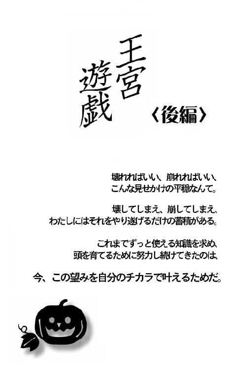

| 王宮遊戯 <前編> (4seasons song) | |
| 友桐 夏 | |
| (2018) | |
◇
その煌びやかで残酷な遊戯は突然はじまった。
わたしたちは血に酔った獣のように数匹の山羊を狩りたてた。
手近な猟場は真紅に染まり、もはやだれも身の潔白を訴えることなんてできない。
「こんなはずではなかった」とつぶやきながら汚れた手足を見つめるしかない。
◇
１
花垣鹿乃子には、物事の要を見抜くチカラがあった。
それが才能だとして、なんと呼ばれる能力なのかは、わからない。
ただ立体を見ればそれがどんなかたちであっても展開図が頭に浮かんだし、建物や工作物を見ればそれらの中心がどこにあるか、どこをどうつぶせばもっとも効率的に迅速に破壊できるかが難なくわかった。幼いころから物づくりが趣味で、最年少の生徒として陶芸教室に通ったり糸ノコをふるって人形用の家をつくったりした。父親が経営者として管理していた自宅横の金属加工場に忍びこみ、こっそり旋盤をまわしたことさえある。
慣れない者なら機械に振りまわされ大怪我を負っていてもおかしくない。けれども鹿乃子には最初から熟練の技術者のように機械をあつかうことができた。それは物体の重心や力点や支点というものがどこにあるか――どこに手をかけ、どのくらい指先に力を、どの方向にこめればいいか――教えられるまでもなくわかったからだ。
これは鹿乃子が生まれつきそなえていた稀有な才能と呼べる特性ではあったものの、目に見える華々しさというものがなかったから世界の国旗を丸暗記した子どものように家族や友人たちから称賛を浴びるといった晴れがましい体験につながることはなかった。
ただとても実用的な面で、ごくたまに地味に活躍しただけだ。
（よく見て、おとうさん、おかあさん。ほら、この扉には蝶番が二か所あるわ。へこみがこの位置にあるから、思いっきり蹴飛ばすべき箇所は、つまりここよ――）
手先が器用で、勘が働く。
小学生のころの鹿乃子の評価は、常にだいたいそんなものだった。
この能力の新たな活用法を鹿乃子が見いだしたのは、中学受験がきっかけだ。
――日々の授業で教師がいちばん伝えたいと思っている部分は。
――教科書の要はなにか。文章問題のどこが重要で、どこが不要か。
ひとたび意識して読み取ろうと思えば、それらもまた、ちょっとした違和感の有無やバランスがとれているかどうかといった感覚のみを頼りに瞬く間に判断できた。おかげで教育レベルの高い中高一貫校に合格できたし、中等部に限り全寮制という環境に戸惑うことはあっても学業に関してはなんの心配もなく新生活をはじめることができた。
端的にいえば鹿乃子には試験の出題範囲がわかったし、引っかけ問題に惑わされず、もっとも簡潔な計算式でこたえを導きだすことができた。教師の心をとらえるような作文を書くこともできたし、ネイティブの英語教師が読みあげた文章を同じ発音でくり返すことも容易かった。スポーツも楽器の演奏も一度本気で集中してお手本を見れば、それをおこなうにはどこをどのように動かすのがコツなのかたちまち見抜くことができた。
月ごと科目ごと頻繁に実施される試験の結果は、生徒たちの競争意識を煽りたてるように教師の口から明らかにされる。それによってあらゆる科目で鹿乃子が群を抜いていることはすぐに大勢の知るところとなり、鹿乃子は一躍注目の生徒となった。だれが言いだしたのか「学年三大人間離れ」のひとりに数えられ、煌びやかな冠のような呼び名をあたえられ、教職員からも上級生からも一目おかれる存在になった。それはクビになった従業員が殴りつけていったがために壊れてしまった業務用ロッカーの扉を開けるような地味なものとはちがう、華々しく晴れがましい活躍ではあったものの、鹿乃子にとってはいまいち胸を張れるものではなかった。
わたしは――山師だ。
日々努力して成績優秀者の冠を戴いているほかの生徒たちとはちがう。
コツをつかんで成果物をかっさらう、詐欺師と同じだ。ここが出題されると踏んだところだけ重点的に復習しているから、時間をかけず結果をだせる。教科書に書かれてはいても普通は出題されないマニアックなものまでふくめて日々の授業の理解度や知識量をはかったなら、わたしより優れていると判定される生徒はきっと大勢いるだろう。
当初はうしろめたい気がしたものの、高得点の結果として羨望より嫉妬を向けられることのほうが多いとわかってからは「まあいいか」と、あえて投げやりに考えるようになった。
――すごいね。毎日そう勉強しているようでもないのに。
カラッとした態度で称賛してくれる子もいたけれど、「なんで、あの子が」とか「絶対おかしい」とか「どうせ最初のうちだけだ」などという声もあちこちから聞こえた。持ち物が汚されたり、なくなったりすることも、しょっちゅうだった。
まあ、仕方ないか。
だれかの意地悪な眼差しを感じるたび、鹿乃子はうつむいて息をついた。
試験を経てここに入学している以上、みんなどこかの小学校で成績上位者として称えられた過去を持つはず。彼らにとって同級生はライバルだ。まだ一年の二学期がはじまったばかりでもあり、「井のなかの蛙だった」と冷静に自分をかえりみている者も少ない。自分がいちばんで当然という意識が強く、そうではない現実を認めることができないから、その不愉快な現実の要である特定の生徒を――わたしを――憎む。せめて心のなかでだけでも勝者として君臨したいという欲求にしたがい、目ざわりなわたしを――もしくはよほどのことがない限り動じないわたしの代用として、もっと弱々しく動じやすい別のだれかを――言葉でおとしめたり、卑劣な嫌がらせの的にしたりする。
まあ、いいか。それなら、それで。
そのうち別のなにかに興味を移してくれるだろうし。
聞こえよがしの悪口を耳にしたりゴミ箱に捨てられていた自分の――もしくは攻撃性のなさを理由に目をつけられてしまった気の毒なクラスメイトの少女の――教科書やノートを拾い上げながら、鹿乃子はいつも賢明な母親のような自制心を発揮し、怒りや不満の感情を憐れみと慈悲にくるんで解き放った。
大丈夫、これは相手の問題であって、わたしたちの問題ではないから。
なんの過失もないわたしたちには、悩む必要も恥じる必要もあるはずがない。それらはすべて向こうが痛感すべきことだ。そう、何年後か何十年後かはわからないけど、いずれ彼らだってまちがいだったと気づくことになる。その時この浅ましい行為の報いを受けることになるだろう。思いだす過去のすべてが刃に変わる。
だからせいぜいわたしは、この苦行からなにかを学び取らせてもらうことにする。忍耐力とか少数派や弱者の気持ちとか、悪意や嫉妬の醜さとか。それらを未来のどこかでなにかに活かすことができたなら「彼らから向けられた悪しき感情を正しいエネルギーに変換して世界に循環してみせた」と誇らしく思い返せるようにさえなれるはずだ。
弱冠十三歳とはいえ要を見抜く能力をあたえられた鹿乃子にとって、クラスメイトの思考をたどり物事の因果を読み解くことさえ、もはやそうむずかしいことではないのだった。
だから――鹿乃子にとっては「王宮遊戯」もまた、俯瞰して読み解く素材にすぎない。
常にその熱狂を一歩引いて眺めていたからこそ小さな動きや異変にも気づくことができ、なにがいつはじまったのかについても当初からごくあたりまえに把握していた。
パンデミックは十月の第一週。
けれども本当のはじまりはそれより少し前。
たいていの惨事のきっかけがそうであるように、あの黒い遊戯のはじまりもまた偶発的でささやかな悪意のないものだった、と鹿乃子だけが知っている。
２
わたしはまだ、それについてほとんど知らない。
興味を持ってもいなかったから、頭にあるのはごくごく表面的な情報だけだ。
王宮遊戯は瞬く間に一年生の、主に女子のあいだに広まった。最初にそれをおこなったのがだれだったのか、何月何日のことだったかは判然としない。ただ分水嶺といえる出来事は九月二十日に起こっていた。夏休み前から準備を進めていた学園祭を終えて校内が落ち着いたそのころ、王宮遊戯を実行した一年二組の女子生徒が同じく二組の男子生徒に告白し、めでたく彼とつきあうことになった――というものだ。
よく効く恋のおまじない。
そんなふれこみで王宮遊戯は無抵抗に受け入れられた。
以来、休み時間も放課後も、きゃあきゃあ騒ぐ女の子たちの声が絶えない。
それは一年生に限った流行であって二年生以上の生徒はみんな不思議そうにしていたけれど、だからこそ付加価値のようなものがついたのだと思う。六年制の私立校でいちばん下っ端の一年生が主役になれることなど、なかったからだ。
とはいえ、同じ一年生であっても、わたしはこのお祭り騒ぎに加われなかった。
にわかに騒がしくなったクラスメイトの女の子たちの姿を盗み見ては、「やっぱりわたしとはずいぶんちがうな」とひたすらまごまごしていただけだ。あちらがこの年代のスタンダードなら、彼女たちとかぶるところがほとんどないわたしはまるでヒト科の亜種。フィールドワークとして海外の主に僻地を渡り歩いていた両親と死別し帰国するまで、学校生活とは無縁の生活をおくっていた。そのちがいだけが、このちがいなの？
見た目は同じ十三歳の女子でも、中身はまるで海のものと山のもの。話し相手がほしいとか周囲にとけこみたいという欲求はもちろんあったものの、趣味も嗜好もテンションも言葉づかいさえもちがう彼女たちと親しくつきあう自分の姿を思いえがくことすらできない。ただ自分のほうがマイノリティーだとわかっていたから、せめて和を乱すことがないよう、王宮遊戯が広まる前からつとめておとなしく振る舞っていた。
その静かな日々に――わたしを取り巻く状況に変化が訪れたのは、十月の第一週。
平日のその日、学園生徒会執行本部であるレトロな木骨煉瓦造「緑風館」二階の会議室で、臨時の会議が催された。生徒会執行部員は常にちょうど十人で、その選出にあたって選挙などはおこなわれない。自薦他薦の必要もなく、いつも理事長か校長の指名によって決定される。中等部と高等部をあわせた一年生から六年生までの二年生以上五学年から、各二名。「代表生徒」と呼ばれる彼らこそが役員で、六年生と三年生の代表生徒が便宜上「中等部生徒会長／副会長」、「高等部生徒会長／副会長」の任を負う。
原則として一年生からは代表生徒の指名がない。
そのかわり数か月に一度、「給湯当番」という面倒な係がまわってくる。
当番は三人一組となり、役員本部を掃除したり会議中の役員にお茶をだしたりしなければならない。会議が終わるまでの数時間は部屋の隅で傍聴するという決まりが一応あるものの、興味がなければ別の場所で好き勝手に時間をつぶしていてもいいという暗黙の了解もある。使った食器を洗い、六年生の代表生徒とともに施錠を確認するまでが当番の仕事だ。
わたしは午後の授業を終えるとすぐに、緑風館へ足を運んだ。
当番はそれが二度目で、だから準備室の備品である電気ポットが見た目も性能も廃品同様であり、お湯が沸くまでにやたら時間がかかることをすでに知っていたからだ。代表生徒の十人が席についてからお茶をだすまでの時間があまりにも長いと「使えない一年生」として顔と名を覚えられてしまいかねない。そんな不名誉はできれば避けたかったから、六時間目の授業が終わると一目散に緑風館へと向かい、まずそのボロい電気ポットに水を満たした。これでよし、と胸を撫で下ろしたあとで猛然と掃除をはじめた。
押し入れに敷き布団とかけ布団が詰まった畳の広間。
蛇口が上向きになる水飲み場と、そこだけ洋風のお手洗い。
書庫兼倉庫として長く使用されていた地下の広いスペースには、骨組みだけの棚が並ぶばかりだ。ここは天井近くの細長い窓を開け、風を通すだけでいいと聞かされている。脚立の上で背のびをして黒い鉄柵ごしに外を見ると、アリ科の視点で景色を望める。
来月頭にはこのほど完成したばかりの鉄筋コンクリート三階建て「薫風館」に本部が移ると決まっているためか、どの部屋も中途半端に片づいていたり散らかっていたりしていた。今さら磨きあげたところで、と思わなくもなかったものの「立つ鳥跡を濁さず」という言葉もある。こういう精神性の高いおとなの考え方って、わたしは好きだ。だからだれも見ていなくてもどの部屋も廊下も、床や窓ガラスを丁寧に磨いた。
やがて折り目正しく会議の開始を宣言する女子生徒の声が階上から聞こえ、わたしは慌てて掃除用具を片づけはじめた。給湯当番の日誌を受け取った時、教員からちらっと聞かされた本日の議題が頭をよぎる。
――「王宮遊戯」の禁止を言い渡すべきか。
一年生に限定したその突発的な流行を、規範としてかかげられた代表生徒たちは「学業の妨げになるのではないか」と案じているのだそうだ。とはいえ校舎のちがう四年生以上の六人にはぴんとこないのか、廊下に漏れてくる彼らの声は最初からとぎれがちだった。
ゴミをまとめて外にだしてから二階へ戻る。
会議室に隣接する準備室に入ると、続き部屋でのやり取りがぼそぼそ聞こえた。
聞くともなしに聞きながら必要な数の湯のみと茶托を棚から取りだし、シンク横の台に並べる。続いてたっぷり茶葉を入れた急須を片手に問題の電気ポットにふれた時、ようやく異変に気がついた。
冷たい......
サーモスタットの反応が鈍いらしく前回使った時には全体が熱を帯び、ぐつぐつ煮えたぎる音を響かせていたのに、今はどこもかしこも冷えたままで、なんの音もしていない。ふたを開けてのぞきこむと、思ったとおりステンレスの丸底に、かろうじて大さじ一杯分ほどの水がたまっているばかりだった。
わたしが水を満たしたあと、だれかがここへきてそれを捨てた......？
頭の隅で考えながら、急須をシンクの横におき、食器棚の扉を開ける。
もしも水が捨てられていなくてボロい電気ポットのコードが抜かれただけだったなら、それがだれかのしわざだと気づかず、ちゃんと電気が通っているかどうかの確認を怠った自分のミスだと思ったはずだ。けれどもこれをしただれかさんは、そうしなかった。まるでわたしに、嫌われている事実を思い知れというかのように。
いちばん大きな深皿を取りだし、シンクの前で蛇口をひねる。
引っくり返した学帽のような皿いっぱいに水を張り、レンジに向かう。
給湯当番にはリレーのバトンのように給湯日誌がまわってくる。当日には担任からくれぐれも役目を忘れて学生寮に戻ることなどないようにと念押しされる。だからわたしが今日の当番であることは、一年三組の生徒ならだれでも知っている。
とはいえ、ほかのクラスの生徒であっても、それを知ることはたぶんそうむずかしくない。だれがやったともいえないけれど当番は常に三人一組なのに今になっても残りふたりがここに姿を見せないことが、すべてのこたえであるような気がする。
考えつつ深皿をレンジに入れ、扉を閉め、スタートボタンをタッチする。
ファンの音を聞きながらシンクの端に腰をあずけ、肩を落として息をつく。
おいしいお茶を淹れる方法を記した用紙はクリアファイルに入れられ、準備室の壁に吊されていた。お湯を沸かす方法は古びた薬缶を火にかけるのとボロい電気ポットを使うのと二通りあったけれど、ガスを使うなら準備室を無人にしてはならない。三人いればだれかひとりが火を見ていればよかったけれど、あいにく前回も今回も当番の決まりにしたがっているのはわたしだけだ。掃除という仕事もこなさなければならないのだから電気ポットしか選択肢はない。
ガス火と薬缶の組みあわせには及ばなくても、そろそろ買いかえ時のボロい電気ポットではなく、ごく最近買い入れられたらしいこの多機能のオーブンレンジを使ったほうがよっぽど早くお湯を準備できるだろうに――とは、実は前回すでに思っていた。その時これを実行しなかったのは、見るからに年代物の薬缶や電気ポットでお湯を沸かすという工程もふくめて伝統なのかもしれないと考えたからだ。
まもなくレンジの窓が真っ白にくもり、朗らかなメロディーが鳴り響いた。
わたしは制服の袖口を鍋つかみにして、盛大に湯気のたつ深皿を取りだす。
熱々のそれを調理台の端におくと少し思案してから、お玉でお湯を急須に移しはじめた。ガス火や湯沸かし用の電気ポットでしっかり沸騰させたお湯に比べれば、きっとずいぶん温度が低い。でも新入生が上級生にお茶をだすというかたちが重要なのであって、会議のたび出てくるありふれた煎茶をいちいち味わう典雅な人はいないはず。頭のなかで言いわけし、茶道部の顧問にでもだしたら卒倒されそうな邪道なお茶を着々と仕上げる。
一通り準備が整ったところで、おもむろに近くの窓へ歩み寄った。
出席番号が前後するふたりからこういった嫌がらせを受ける理由として、思いあたることはない。ほかのだれかに恨まれるようなことを言ったりやったりした覚えもないけど、持ち物に落書きをされたり隠されたりといったことは入学直後からたびたびあった。
どうやらわたしは一部のクラスメイトから「敵」とみなされてしまったようだ。
悪口を言ったわけでもなければ、たてついたわけでもない。きっとわたしに対する相手の第一印象がなんとなく悪かったり、わたしと会う前にわたしの否定的な評価をだれかにふきこまれていたりしただけ。明確な落ち度もないのに迫害されるのだから理不尽な話だけれど、わたしだけが不運というわけじゃない。隣のクラスにもその隣のクラスにも、同じような理由で同じような目にあっている子が数人ずついる。
なにせ今わたしたちが生きる場所は法や倫理や常識よりも、顔だちや運動神経のよさや親の職業や本人の性格のキツさがステータスとしてまかり通る無分別な子どもの世界だ。ここはいつだって湿度が高く、ねばねばしている。「だれよりも早く立派なおとなになってやる」と胸の奥でくり返し唱えて距離をとっても、相手がまとわりついてくる。
なりたいものになるために、ただ必要な知識と資格を得たいだけなのに――
どうしてそれに専念させてもらえないんだろ......？
たったひとりで帰国してこの国の小学校に通いはじめた九歳のころから、この疑問は定期的に頭に浮かぶ。わたしは室内の光景を反射するガラスを鏡に髪を整えながら、黒いブレザーの胸ポケットにとめた当番用の大きな名札を、じっと見つめる。
窓ガラスにさかさまに映る自分の名前は、両親からわたしへの最初のギフトだ。そこにこめられた願いに意識を集中させれば、形見の写真を眺めるよりも早く前向きな気持ちになれる。こんなところで立ちどまっているわけにいかないんだ、とまだ子どもそのものの小さなからだの真んなかで小さな心が奮いたつ。
――知子の知はね、知識の知なのよ。
もうすでに遠い過去、母はわたしを抱き上げながら得意そうにそう言った。
父は折りにふれさまざまな本を開き、内容をかみ砕いて教えてくれた。
知識がすべての手がかりになること。
見て覚えるだけでなく、考えて本質を理解すること。
みずから学ぶことの必要性をふたりはまだ幼児といえる年齢のわたしにくり返し説いた。
明確な目標があり、その実現のためにやるべきことがたくさんある、というのは幸せなことだ。名前という魂の刻印が常にそれを思いださせてくれることも。だからわたしはなにがあっても途方にくれず、いつだって前を向いていられる。
鏡像の自分ににっこり微笑み、わたしはくるりと窓に背中を向ける。
一に知識、二に知識。三、四も知識で、五も知識。これこそわたしの世界の歩き方だ。嫌がらせなんて長く続かない。落ちこむことはない。嫌われている事実は確かに悲しいけれど直せそうなところはとっくに直した。それでもなにも変わらないのだから、もうどうしようもない。わたしはわたしで、やるべきことをやり続けよう。
豊富な知識を手がかりに自分の頭をしっかり使えば、どんな壁だってのり越えられる。新たな知識を求める過程で、もしかしたら「人間関係の極意」や「子どもの世界の歩き方」だってわかるかもしれない。これまでどおりのわたしを認めてくれる友人だってできるかもしれない。だれかに悪意を向けられ傷ついたからといってここで立ちどまってしまっては、そんな可能性すら手放すことになってしまう。
心のなかで自動的にわきあがる言葉がわたしに力をくれる。
これこそ正式な知識と頭の使い方。両親がくれた最大のギフトだ。
たちまち気を取りなおし、十一人分の湯のみをのせた二段の手押し車に手をかける。
髪も制服も精神状態も、もう問題はない。今わたしがやるべきことは給湯当番の一年生として代表生徒にお茶をだすこと。それくらい、と顎を上げてちょっと笑みを浮かべる。
よし、と心のなかでうなずいて足を踏みだした。
３
ここ――私立虹皇学園は、県境近くの森林区域に校舎をかまえる中高一貫校だ。
設備と教員の質と教育レベルの高さを誇り、生徒の多くが精神的に自立している（と、いわれている）。一クラスは基本的に男女同数の二十六人。全学年共通して一組から四組までのクラス制をとっていて、進級に際してのクラス替えというものはない。三年生以下のみ全寮制で、四年生以上は二割ほどの生徒が退寮し、自宅や下宿先から通学している。
ほぼほぼ野生の森林をごっそり取り入れた個性的な造りと敷地面積。そして親のいない子どもを対象とした給付型の奨学金制度と選び抜かれた十人の代表生徒による学生自治を特色としていて、近年は政界に進む卒業生が多いことでも知られている。
代表生徒は学園という小さな社会の舵取りを担う、いわば船頭。
と同時に一般生徒に対し「こうあるべし」としてかかげられた模範生の集団でもある。
年度があらたまるたび各学年から男女一名ずつ指名されるものの基本的に持ち上がり式で、最上級生が卒業し新二年生が加わる以外こちらもやはり顔ぶれが大きく変わることはない。その選出にあたってもっとも重視されるのが個々の人間性だといわれていて、強気なリーダータイプや博覧強記のマスターや魅力的なアイドルやカリスマではなく、教養と落ち着きと利他の精神を兼ねそなえた聖者タイプの生徒ばかりが指名される。
その活動内容は多岐にわたり、あたえられた権限は校長に匹敵するといわれるほど。
けれどその大きな力と裏腹に、彼らはほとんど日の目を見ない。入学式や卒業式といった行事は教員と新入生や卒業生だけでおこなわれ、始業式や終業式は教室でモニターに映る理事長や校長の姿を見ながらクラスごとにおこなう。総会や集会といった生徒が一堂に会する機会がないため、彼らが壇上に立つ機会などは最初からない。学園生活にかかわる大きな改革や変更があっても内容は掲示されるか配布されるか各学年の学級委員や各部のキャプテンを通して雨だれ式に伝えられるため、なんの肩書きもない一般生徒が代表生徒の話をじかに聞けるのは、給湯当番の際の数回に限られている。
影響力と裏腹に万事において影の薄い彼らだけれども、ひとたび代表生徒に指名されれば定期的に理事長主催の勉強会に参加できるとか、緑風館――来月からは薫風館――という生徒会執行部本部を自由に利用できるといった特典もある。なおかつ学園の経営にはだれもが知る国際的な企業がかかわっているので、望めば卒業後の進路や地位も保証されたようなものなのだとか。
そんな輝かしい未来を背負った代表生徒に、わたしは邪道なお茶をてきぱきと配る。
わざわざオーブンレンジやお玉まで使って顧問をふくめた十一人分のお茶を急いで淹れたのに、なか空きの長方形に並べられた長机を囲んでいるのは、たった四人だ。会議室からの声がとぎれがちだったのも当然で、今日の会議の出席者は三年生以下の代表生徒のみと最初から決まっていたらしい。ほかの六人と執行部顧問のニケ先生は竣工したばかりの薫風館で、今後の引っ越し作業の打ちあわせをしているとか。
そうとも知らず十一人分のお茶を用意して準備室から出てきたわたしを見て、男女ふたりずつの四人が一斉に笑いをこらえるような顔をしたのが忘れられない。ポーカーフェイスを装いつつも、想像の世界で床を踏み抜くほどの地団太を踏んでしまった。
生徒は制服の色とデザインでだいたいの学年がわかる。
襟と袖口に暗緑色のラインが入った黒いブレザーなら、三年生以下。
そして白いシャツの襟元で結ばれた紐タイが青なら一年、藍なら二年、濃紺なら三年と進級するほど色調が暗くなる。ちなみに四年生以上の生徒は襟と袖口に黒いラインが入った暗緑色のブレザーに替わり、上着の襟がテーラードからスタンドに替わる。当然紐タイはなく四年生と五年生を識別する明確な方法はないけれど、最上級生である六年生は、その暗緑色の詰襟の胸に小さなアメジストの徽章をつけることになっている。「かわいげがない」とか「首まわりが窮屈」などと嫌がる女子生徒が多い反面、男子生徒からは「個性的で目立つ」とか「戦闘服っぽい」とおおむね好評なのだそうだ。
四年生以上の生徒が不在のこの場を仕切るのは、三年生の男子生徒。
やっぱり見るからに落ち着いていて、同級生の男の子たちとはまったくちがう。
作業を終えたわたしを見上げ、お疲れさま、といたわってくれたけれど、優しげなその目に微苦笑がにじんでいるようで、なんだか素直に聞けない気分だ。どうも、とぼそぼそつぶやいたわたしに、三年生の彼が向かいの椅子を指し示した。
「ちょうど当事者から話を聞きたいと思っていたところだから」
そう着席をうながす理由も述べてくれたけれど、あいにくわたしだって今日の議題である王宮遊戯については、たいして知らない。首を振ってそうこたえると彼はそれでかまわないからと続け、お茶もどうぞ、と手押し車に残る七つの湯のみに視線を向けた。
長机の向かいにかけるのが、三年生の代表生徒。
角をはさんで隣にかけるのが、二年生の代表生徒。
六年生や五年生には私服姿だと教職員と見わけがつかないような人がちらほらいるけど、さすがに年齢差ふたつ以内なら自分とかけ離れた感じはしない。ただ眼差しや雰囲気が明らかにおとなびていて、妙な引け目を感じさせる。
静かすぎるというか聡明さが透けて見えるというか。みそっかすのわたしなんかが同じテーブルを囲んでいいんですかね、と卑屈な気分になってくる。一口飲んで湯のみをおいた三年生の彼が笑いをふくんだ眼差しで、わたしを見つめた。
その胸の名札に刻まれた苗字は「遠早」。
とおはや、と読むのだろうか。
「とりあえず王宮遊戯について知っていることを並べてみて。いつごろそういうものが流行っていることに気づいたかとか、やり方とか」
「先月の......」
確か九月下旬あたりだった。
今も続く挨拶運動――「おはよう」とか「また明日」とか、やけに嬉しそうに挨拶する子の姿が徐々に目立つようになり、やがて一年生全体に広がっていった。
わたしは愛想なしの顔つきで知る限りの事実を述べる。
「それは王宮遊戯とどう関係しているのかな」
机の上で手を組んだ遠早さんがわたしに訊ね、わたしは気まずく首をかしげた。
「さあ......。知らないんです。本当に。見たままのことしか......」
最初からまったく興味がなかったから、観察しようとも思わなかった。
でも、たとえわたしがそれに興味をいだいていたにしても、やり方を知っていたかどうかはあやしい。少なくともクラスメイトから情報を得ることはできない。なにせわたし、一年三組における不可触民というやつだから。
二回続けて給湯当番をひとりでこなしているあたりからわたしの学内での人間関係がどんなものかは察しているはずだと思い正直に申告したけれど、こっくりうなずいた遠早さんのまったく意外じゃないという顔を見て、地味に心が傷ついた。禁止する必要があると思うかと率直に問いかけてきた彼を、恨みがましく睨んでしまう。
「......騒がしいといえば、騒がしいですけど」
でも禁止を言い渡されるほど悪いものではないと思える。
明るく挨拶を交わす生徒が増えたのだから、むしろ健全といってもいい。実際、今日の議題を聞いて最初に思ったのは「代表生徒が一堂に会して話しあうほどの問題ではないだろうに」だった。たかが恋のおまじないに上級生が――わたしたちの規範たる代表生徒が――わざわざ口だしするなんて、ずいぶん大袈裟じゃありませんか？
「一年生での流行でなければ、ぼくもこれほど気にしなかったんだけどな」
「学年が問題ですか」
「うちでなにかしら騒ぎを起こすのは、毎年決まって一年だから」
遠早さんが言い、彼の隣に座る三年生の女子生徒がこくこくうなずく。
その胸の名札には白地に黒く「比良坂」の三文字。スカートをはいていなければ顔だちの整った少年にも見えるショートヘアの人懐っこそうな人だ。
「一年生ってほんと危険物なのよ。しかもうちの生徒って、なんでだか、あくが強いのばっかりだし。ものすごい天才児みたいのがまじってる反面、問題児の問題レベルがケタはずれなの。で、そういうのが急な環境変化に対応できなくてストレスをためこんだあげく、大暴走とか大爆発とか起こしてくれる」
「しかも周囲を大勢、巻きこんで」
「なのよね」
「まあ、こんな辺鄙な場所にある私立だからね、うちはもともとわけありの子が多いんだ。親が前科持ちの政治家だとか国家予算規模の資産家だとか、世界的な俳優とかスポーツ選手だとか――海外の研究機関に属しててなんかまずいもの開発してるみたいだ、なんて言ってたやつもいたな。で、そういう特殊な親を持つ子のなかには、ここにくるまでさんざん甘やかされたかほったらかされたかして、考える訓練とか我慢する訓練をまったく積んでないのが結構いる。お金だけはかけられてて０歳児のころから英才教育受けてたりするけど、十中八九、疾患レベルの自己中か短気だ」
「要するに、頭を使える馬鹿ほど危険なものはないってことよ」
まとめた比良坂さんをちらりと見て妙な笑顔の遠早さんが、身をかえりみて、とすばやくつぶやく。ムッとした顔の比良坂さんが彼の椅子を蹴ったらしく、がたんと大きな音が響いた。二年生のふたりは生真面目な顔で上級生のふたりを見ている。
そういうわけで、と遠早さんはすぐに話をもとに戻した。
「一年生の動きには注意しろと前々から言われてるんだ。うちでは三年生以下の生徒はとにかく外部と遮断されるし、この環境になじめない子がためこんだストレスを爆発させるのもどうしても構内でということになるから。しかもひとりで爆発するんじゃなく、さっきも言ったけど周囲を巻きこむ」
「巻きこまれるほうにだって問題はあるのよ」
「そう。短絡的に同調してしまう者にも問題はある」
仏頂面のまま比良坂さんが言い、落ち着き払った態度の遠早さんがうなずく。
「けど同調する生徒がどれほど多くても、もとはたいしたことない人数で、しかもそれは『疾患レベルの自己中か短気』だってことがいちばん重要な点だ」
育ちからくる傲慢さとストレスによって高めた攻撃性を武器に、彼や彼女はほとんど必然的に他人を巻きこんでみずからの欲望を満たす行為に走ることになる。そうでもしなければ未熟な精神のバランスを欠いてしまうからだ。好きなものを好きなだけ買いあたえられて小さな王様や女王様みたいに育ってしまった気の毒な十三歳は、ここでは確実に刺激に飢えることになる。
遠早さんはわかりきったことを並べるような口調で、わたしに語る。
「彼らはみんなよくも悪くも素直というか、本能に忠実だからね。内省するとか我慢するってことはまずない――というより、できないんだ。ここじゃせいぜい購買部で小さなお菓子を買うくらいが関の山だから食欲以外の欲求を満たす行為で刺激を得ようとするわけだけど。大きくわけて、ふたつかな。なんだと思う？」
「物欲......と、名誉、というか、自己顕示欲とか......」
「それらを満たせるものはなにか、という問題なんだ。この環境でね」
「なにかで目立つ......。自分がいい気分になれるような......」
この話題と王宮遊戯と、どうつながるのか。わたしは内心訝りつつ、訊かれたことを考える。刺激がほしい。つまり興奮したいということなら、勉強や部活動で人に称賛されるような成績をたたきだせばいい。とっさにそう思ったけれど、考える訓練や我慢する訓練を積んでいなくて欲望に忠実な幼い者に果たしてそれができるだろうか？ できたらできたで、のちのちまわりが迷惑しそうだ。遠早さんは首をひねるばかりのわたしという下級生を数十秒で見限り、配下の代表生徒に眼差しを移した。
「――じゃ、山縣くん」
指名されたのは藍色の紐タイをぶら下げた二年生の男子生徒。
黒縁の眼鏡をかけた神経質そうな少年が、迷惑そうに遠早さんの顔を見る。
食欲以外の本能的な欲求でストレスの捌け口になりそうな刺激といったら、とつぶやきながら彼は天井に目をやり、すぐになにか思いついたらしく顔を戻して口を開いた。
「わかった。暴力とエロでしょ」
血が見たいとか、ハダカ見たいとか。
人の上に立ちたいとか、気持ちいいことしたいとか。
真横に引いた三本の線みたいな無表情で、刺激的な言葉を並べてくれる。
二年生の女子生徒が「信じられない」という目を隣の男子に向けたまま首からひたいまでみるみる赤くなっていき、「そうか、Ｒ指定されるやつだ」と普通に納得していたわたしまでつられて顔面が火照るのを感じる。やけに神妙なようすでお茶を飲んでいた比良坂さんが顔を上げ、二年生の彼を小声でとがめた。
「あんた、言葉を選びなさいよ。純情なお嬢さんがふたりもいるんだからさあ」
三人じゃないんですね、と言ったらわたしまで怒られそう。
「『いじめ』と『恋愛ごっこ』のほうが適切だった」
遠早さんはすんなり続け、そのまま視線と話の矛先をわたしに戻した。
「心あたりがあるはずだけど」
「――なにの。どちらの、ですか」
わたしは静かに混乱し、言葉をかさねる。
遠早さんは机に両肘をつき、組んだ手の上に顎をのせた。
「あれは......ちょうど会議をはじめたころだったかな。別の一年生ふたり組が、やってきたかと思えばすぐに帰っていったんだ。逃げてった、と言うべきかもしれない。その前にシンクに水を流すような音が聞こえていたから念のため電気ポットのなかを検めたら、やっぱり空になっていた。その時点で水をたしておくこともできたけど、こちらが勝手にそれをしたら被害の証拠がなくなるだろう？ だから四人で相談して、そのままにしておいたんだよ。だれになにをどうされたのか、自分の言葉で訴えるのは被害者の権利であり役目だから。一応、準備室から泣き声が聞こえてきた場合だれが代表でなぐさめに行くかまで決めて、全員で耳を澄ましていたんだけど」
比良坂さんと山縣さんと二年生の彼女が、意味ありげに手元に視線を向ける。
三人がそれぞれ手にしているのは、もちろんわたしが淹れた邪道なお茶だ。顔と耳が、ますます熱い。遅ればせながら、わたしはようやく気がついた。
そうだった、気づかれていないはずなかったんだ。この会議室での話し声が準備室に届いていたということは、壁が薄いということ。かすかな泣き声さえ聞き漏らすまいと彼らが注意を払っていたなら、なおさらわたしの行動は筒抜けだったはずだ。
にもかかわらず、わたしは水が捨てられていることを知ってすぐに、薬缶でも電気ポットでもなくオーブンレンジを使用した。掃除を終えたわたしが準備室に入ってからレンジが稼働するまで、おそらく一分たらず。今年度のみならず歴代の給湯当番たちがきっといちいち工程表を確認しながら上級生のために丁寧に淹れたにちがいないお茶を、わたしはといえば、あっというまにレンジで沸かしお玉ですくって急須に入れた。
なにもかも知られているとわかっていれば、堂々と薬缶を火にかけるところからはじめたものを――食品が充分に温まったことを知らせるあの能天気なメロディーを壁ごしに聞いた彼らがその時どんな顔をしたか、目に浮かぶようだ。
「いろいろ思うところもあるだろうけど、かわいそうな子たちなんだよ、向こうも。なにが正しいことなのかきっちり教えてくれるおとなが身近にひとりもいなかったんだ。ただ相手の顔色を読んで、いい子らしく振る舞っていれば、どんなわがままもきいてもらえた。だからこそ今ストレスを受けていて、だれかにぶつけずにはいられない」
自分と同じタイプの生徒にそれをすればカッとしてやり返されるだけだとわかっていて、まったくちがう性質の――おとなしかったり理性が身についていたりする子を標的にする。あの逃げていったふたりがふたりともそうかもしれないし、一方は一方にしたがっているだけかもしれない。たちの悪いのは別にいて、ふたりともそのだれかに目をつけられたくないばかりに、ごく短絡的に同調しているだけかもしれない。
「おかげで一年生の女子には早くも不登校になってるのがひとりいるし。彼女は二組だったかな。いじめというのは百パーセント、やるほうが悪い。言葉で不満を伝え相手の意見に耳をかたむけるということができないのは、なにより攻撃性が上まわっているということだから」
――百パーセント、やるほうが悪い。
きっぱり言いきってくれたのは、被害者たるわたしへの思いやりだろうか。
わたしは、やり返さない。
それは責任の所在は常に自分にあると考える癖がついているから。
相手に問題があると考えれば相手を変える必要が出てくる。けれど自分に問題があると考えれば自分ひとりで対処できる。すばやい解決を望むなら有効なのは後者だとわたしに教えてくれのは父だったろうか、母だったろうか。他人のまちがいを正すより自分のまちがいを見つけて正すほうが簡単で、なにより自分の成長につながる。そんな考えをあたりまえにいだけるように、親に育ててもらえたから。
けれどそれでも――だからこそ――なんでこんな目にあうんだと情けない気持ちになるたび、劣等感と罪悪感を覚えずにいられなかった。
わたしはいつも被害者だけれど、非はわたしにこそある。
なぜならわたしはコミュニケーション能力が低いから。九歳まで勉強は親に教わっていて、学校らしい学校に通ったことがなかった。帰国してはじめて同世代とふれあった。そんな子どもは、わたしのほかに、いなかったから。
いずれすべて解決する。いつかわたしが必要な知識を得ることさえできれば、と前向きな行動をとりながらも意図的に近くでささやかれる悪口を聞くたび――どうして放っておいてくれないのかと思うたび――場にとけこめない自分を責める気持ちも大きくなった。
――ここでは確実に刺激に飢える。
――ストレスを受けていて、だれかにぶつけずにはいられない。
――なにより攻撃性が上まわっている。
まったくちがう考え方が頭に入ってきたとたん、もとからあった考えのゆがみが認識できた。それに驚くあまり、なかなか言葉が出てこない。遠早さんが深みのある眼差しで、わたしを見つめる。
「向こうの荷を半分引き受けてやるくらいの気持ちで、赦してやって」
「わたし」
確かにわたしは、異分子だった。
同世代とふれあうのに慣れていなくて、話題や行動が突飛だったり非常識だったりしたかもしれない。迷惑をかけたことがあったかもしれない。けれど、だからといって同属の別の種を奴隷としてこき使う非道なアリ科みたいに嫌がらせしたり悪口を言いふらしたりする相手に対し、わたしのほうが悪いと思う必要なんてなかった。
なかったのに、わたしはいつも自分を恥じていた。
恥じていたからこそ、どんな嫌がらせも悪口も受け流し聞き流し、なかったことにしていた。そうして無意識的に被害を周囲に知られまいとしていた。
「――わたし、言えばよかったんですね。水を捨てられましたって」
脈絡なく言いだしたわたしに、上級生の四人が黙って視線を向けてくれる。
「お湯を沸かしなおすから少し時間がかかりますって。自分に非はないって確信してれば、なにも隠す必要なかった」
そんなことをされるほうにも問題がある、というのは加害者側の論理だ。こんなものがまかり通るのは未熟な子どもの世界だけ。そんなことにも気づかないまま、わたしは自分の立場を守ろうとして被害を隠し、結果的に相手の立場を守ってやっていた。
なんて皮肉。思った瞬間、罪悪感が消え失せた。同時に心に喜びをふくんだ余裕という広がりが生まれる。頭のなかで新たなわたしが目を開く。
そういうことなら、荷の半分でも三分の二でも引き受けてあげようではないか。でももしもどうしても目にあまるようなら、次は正々堂々、表沙汰にさせてもらう。人間関係の秘伝書はやっぱり読みたいけれど、「子どもの世界の歩き方」はもう必要ないかも。
ぱたぱたとドミノが倒れるように考えが進む。
それにあわせてわたしという人間が根本から組み変わっていくのを感じる。
人間関係はすごくめんどくさいけど、こうして人との交流で得られる知識も多いから人とかかわることをやめてはならないんだな。自分ひとりでは思考のどこにまちがいや偏りがあるか気づきにくいから、風通しよく他人の考えを取り入れないといけないんだ。それによって知らないあいだにたまっていたゴミのような考えを一気に吹き飛ばすことができる。
目に見えないなにかでぎちぎちに縛られていた思考が大きく広がり、今まで見えていたのに気づかなかったものに次々と光があたる。状況が変わったわけじゃない。ただわたしの心境が変わっただけだ。それなのに、もう大丈夫だと心から思える。
たった一度、たった数分の会話で。
わたしは感動めいたものを覚えつつ、遠早さんをまじまじ見つめる。
上級生の四人はわたしがひとりで納得するまで、ただ静かに待ってくれていた。
不審がるようすがないのは、たぶんこちらの考えがすっかりわかっているから。思えばわたしの両親も動じるということがおよそない人たちだった。どれほどダイナミックな発想の飛躍にもあたりまえについてくる知性の持ち主。わたしの理想。目標。代表生徒の彼らもまた、そういったタイプということだろうか。
わたしは今が初対面のように畏敬の念をこめて彼らと向きあう。
年齢差ふたつ。外見的には大差ない。
でも彼らは「おとな」だ。まだまだ思考に穴のあるわたしとはちがう。
組んでいた手を解き、背筋をのばした遠早さんが、小さくうなずいて口を開いた。
「――王宮遊戯に話を戻そう」
４
自分の過去について話す時はいつだってほろ苦い気分になる。
それは絹が幼いころ、ストリート・チルドレン同然の暮らしをしていたからだ。
廃屋じみた古アパートの一室という自宅が一応あったものの、そこは絹にとって安全なねぐらではなく、いつ蹴りだされてもおかしくない一時的な寝床のひとつにすぎなかった。家族三人そこで暮らしていたというより、おとなふたりと子どもひとりが別々にそこを利用していたといったほうがずいぶん正しい。野宿が命にかかわる季節になると一瞬も気を抜かず親の顔色をうかがい続けなければならなかった。
ネグレクトや暴力が常習化した孤独で不安な生活のなか、絹にとってはじめての――唯一の――娯楽となったのが年上の少女が語り聞かせてくれるオリジナルの物語だった。
天界と地界が交錯し、神仙と魍魎が駒を取りあう、目くるめく物語。
その紡ぎ手でもある語り手は当時十四歳の女子中学生。
絹は当時九歳の小学生。公園の遊具のなかという特別な教室で、彼女という専属の先生から読み書きを教えてもらう不登校児。
教科書の内容にそった個人授業の合間に、彼女はさながら本物の教師による息抜きの雑談のように、不思議な世界への扉を開いてくれた。それは不意に異世界へ飛ばされた無力な少女が相談相手となる導き手とともに町から町へと旅するなか、特殊な血脈の人々が伝えるいくつもの「世界の秘密」を知っていくというミステリータッチのファンタジーだ。
ひとつ物語が終わるたび、公園の先生はすぐにまた別の少女をその異世界に召喚し、別の導き手を用意し、別の結末へと至る別の旅をスタートさせた。人より優しく気弱であるにもかかわらず苛烈な異世界に放りこまれ、あらゆる辛苦を体験することになる主人公の少女たちは例外なく「角笛」と呼ばれる。
それはその世界において「心に勇壮な角を持つ者」という意味の言葉。
――きっと絹はこの世の角笛なのね。
自分でもそうであればと願っていたから、公園の先生からさりげなく言われた時には認められたような気持ちで胸がいっぱいになった。
わたしは、角笛。
人より多くを経験し、人より多くを達成する者。
そうして公園の先生は家族との楽しい思い出などひとつも持っていなかった絹に、そのかわりのように未来への展望と希望に満ちた魅力的な物語の記憶をくれた。
角笛は漆黒の闇にこそ降りたつ純白の心を持った戦士だ。トラブルメイカー、トリックスター、楽園の蛇、台風の目。いくつもの通り名を持っているけれど基本的に「角笛」と名のり、無口でおとなしく、澄んだ目をしている――......
「雅桜は名前に牙を持つ者でしょう。角じゃないけど、ちょっと似てる。だからやっぱり人より苦労するのかも。苦労するし、安定はないの。それが角笛に――心に角を持つ者に課せられた使命であり宿命だから」
「人より苦労する宿命？」
心底嫌そうに顔をしかめた雅桜に、絹は思い出話を中断し、当然の顔で大きくうなずく。
「正義は常に不正のある場所にこそ必要とされるものだから」
「ちがうよ」
雅桜は首を横に振り、胡散臭げに絹を見る。
「おれの名前の由来は、なんの登場人物だか知らないけど、その角笛ってやつじゃなく、まんまみやびな桜の『雅桜』だから。そういう名前の雪豹みたいな怪物の出てくるアニメが、昔放送されてたんだ。頭がよくて人の言葉が話せて、むちゃくちゃ毒舌なんだけど毎回まいかい騙されかけたり殺されかけたりする間抜けな主人公の女を助けるんだ。で、たまに人間に化けるんだけど、その化けた姿がかっこいいってんで人気が出て、フィギュアとかカードとかイラスト入りのグッズが爆発的に売れたんだって」
「いかにも美少年とか美青年とかの名前だもんね」
「嫌味？」
じろりと睨まれ、絹はちょっと肩をすくめる。
「魅力的で個性的な人間になりますように、って願いがこめられているわけだ」
「たんにそのころいちばん流行ってたからだよ。兄貴だって樹希夜だし、妹なんか愛瑠々だし。みんなアニメかゲームか漫画のキャラの名前だ」
「その人気にあやかれますように、と」
「けど、さ」
雅桜は言葉を区切って強調しつつ、憤懣やるかたないといった態度。
「いくら人間に化けるったって、本性は怪物って設定なんだ。しかもアニメのキャラクターで、しかも当時まだ放送中で。最終回に急展開して、実はその雪豹みたいな怪物の雅桜こそが黒幕だったってわかるんだけど、普通そういう可能性も考慮して慎重に名づけるもんなんじゃないの？ ネットのオンデマンドで見たけど、最終的にそっちの雅桜は主人公の女にめった刺しにされたあげく夜の海に突き落とされてた」
「ああ、それ......我が子に好きな芸能人とかスポーツ選手と同じ名前をつけたら数年後その芸能人とかスポーツ選手が買春でつかまったとか、初恋の人と同じ名前をつけたら同窓会で再会したその相手がだいぶ残念なことになってたって悲劇と同じやつだ」
「絹は気楽でいいよな、その点」
「わたし、たまに『木綿』とか『麻』とか呼ばれるんだけど」
「おれなんか、しょっちゅう『うおー』とか『わおー』とか『きゃー』とか」
真面目な顔で雅桜が言い、絹は思わず声をあげて笑ってしまう。
絹にとっては他人の家であるのに気兼ねなくそんなことができるのは、ここが庭に囲まれた離れの一室だからだ。だれかに声を聞かれて不愉快な思いをさせる心配はない。
小さな和室と広めの洋室のほか独立したトイレと浴室と簡易キッチンのついたこの小さな平屋は前の家主が老後のためにと庭先につくっておいたもので、採光がよくバリアフリーである上、庭先の眺めも申し分ない。静かな隠居生活をおくる前に夫妻はひとり娘とともに事故で亡くなり、今では実質引きこもりの雅桜の棲み家と化している。
「この名前って結局そんなイメージなんだな」
「どんなイメージ？」
「人より苦労する宿命を負ってて孤独なんだろ、よくも悪くも」
「苦労や孤独は悪いことじゃないから」
「当事者じゃないから言えるんだ」
「経験者ではありますが」
ふてくされて突っかかる雅桜を、絹は事実を盾に、ひらりとかわす。
雅桜は再び絹を睨んだものの、それ以上はなにも言わず筆記具を持った右手に注意を移した。憮然とした顔のままノートに書き写した練習問題に取り組みはじめる。絹は椅子の背もたれにからだをあずけ、持参した数学の教科書を開いた。
人にものを教える以上、基本も応用も一から十まで完璧に理解していなくては。このプレッシャーたるや想像以上だ。雅桜のおかげで日々教壇に立つ先生方や小学生のわたしに勉強を教えてくれた当時中学生の彼女の苦労を身をもって知ることができた。
土曜か日曜、もしくは両方。
午前中から夕方まで、雅桜の離れで。
筆記具も食事も持参で雅桜の自習につきあいはじめて、もう三か月が経つ。
こんなことをしてたら今に絹も処分を受ける、と雅桜はしばしば皮肉ったものの、全寮制で休日さえも外出には許可を得る必要のある一年生から三年生とちがい、ごく少数とはいえ自宅通学者のいる四年生から六年生は平日もふくめて出入りが自由だったから、幸い絹のこのたびたびの外出を見とがめる者はなかった。
三か月前、雅桜は自宅謹慎の処分を受けた。
その前兆として彼の生活態度が荒れはじめたのは、さらに遡り今年の春のことだった。
絹をふくめ以前の雅桜を知る生徒と教員にとって、それはとても不可解な出来事だった。
それ以前の雅桜は、おしなべて成績のいい、健康的で明るい性格の少年だった。小動物めいた大きな目や華奢な体格も本人にはコンプレックスだったようだが、女子生徒のあいだでは「カワイイ」とむしろ人気があった。
ところが四年生となり自宅通学をはじめると同時に、雅桜は変わった。
まず頻繁に学校を休むようになった。並行して身なりがだらしなくなり、成績が落ち、極端に気性が荒くなった。その急転直下の変容といったらあやしいダイエット食品の広告に掲載されたインチキ写真を地で行くレベルだ。もともと私立の進学校で規範意識の高い生徒が多かっただけに、彼の素行不良は非常に目立った。生徒からも教員からも遠巻きにされるようになった雅桜はまるで国会議事堂に迷いこんだ場ちがいなピエロのようだった。
見かねて注意した同級生の女子生徒を突き飛ばして軽傷を負わせたという理由で無期限の謹慎を命じられると直後学校にのりこんできた母親が校長に札束を叩きつけて処分の取り消しをせまったというので、ますます彼はセンセーショナルな存在として局地的に有名になる。ある生徒は及び腰で意味不明な「すごい」を連発しつつ無責任に噂を広め、ある教員は「親が馬鹿だという理由では退学にできない」と頬杖をつき、馬鹿な親のもとに生まれた子どもがこうむる損害を実体験として知っていた絹はだれかに話をふられるたび「ドラマだね」とコメントして曖昧に首をかしげた。
彼がみずから退学の意思を学園側に伝えたのは、その騒動のさなか。そしてこっそり調べた住所のメモを頼りに絹がここを訪ね、折よく母屋にいた彼に「授業内容を逐一伝えにくるから一緒に勉強を続けよう」と告げたのは、その翌日のこと。
――遅れを取り戻すのはひとりではむずかしいわよ。
――今ならまだ追いつけるし、巻き返せるわ。
能楽の舞台めいた広い板張りの玄関先で、雅桜はしばらく呆然としていた。
人からは痛みしかあたえられたことのない野生動物みたいな目つきで突然の訪問者を見ていた彼を説得するまでに絹が要した時間は、実はそう多くない。なぜなら絹には、その時すでに雅桜の状況も変化の理由も心情も、すっかり察せられていたからだ。「わかる」と本当にわかっている者が言うより説得力のあることはない。
ただ、その時点で絹は単純に彼を復学させるつもりだった。
自宅通学にきりかえると同時に変化があらわれだしたなら、それこそが彼に悪い影響をあたえたということ。家族や生活環境にまず問題があり、それが雨だれ式に彼に影響を及ぼし彼の問題というかたちで明らかになった。それなら彼を再び寮に――四年生以上の生徒専用の紫苑寮に――入れ自宅から引き離せばいい。未成年者の雅桜が電話で退学すると告げたところですんなり受理されるはずはなく、入寮手続きさえ済ませれば処分があけるのを待つまでもない。四月からの勉強の遅れを取り戻し性根と生活を正しさえすれば、教員もクラスメイトもすんなり再び彼を迎え入れてくれるだろう。そうして彼の問題行動がなくなれば問題の親が再び学校にのりこんでくることもなく、二度と彼が恥ずかしい思いをすることはない。
大きな問題は分解し、小さくしてから、ひとつずつ解決していく。
それはひらがなやカタカナさえ満足に読めず、たし算引き算すらまったくできなかった絹という不登校の小学生に二年間みっちり勉強を教え復学に導いてくれた、あの熱血な公園の先生のやり方を真似たものだったから結果もまた同じようにうまくいくはずとなかば決めつけていた。はかまか、と言いたくなるようなだぶだぶのロングパンツの裾を引きずった雅桜が首を横に振り、ぼそぼそとそれを口にするまでは。
――今年度の学費、まだ振りこまれてなかったんだ。で、振りこむ気もないって。もうかかわりたくないって言うんだ、うちの親がさ。学校とか、先生たちと......
「解けた。あってるかどうか、わからないけど」
言いながら雅桜が開いた状態のノートを絹の前に滑らせる。
了解、とこたえて絹は教科書をおき、シャツの袖口をまくって赤ペンをかまえた。
あらわになった右肘近くに刻印された小さな三角の火傷の痕を、左の目元にまだ生々しい青あざをつけた雅桜が見つめる。醜いと思っているようでもなければ気の毒にとか痛々しいと思っているようでもない。当然だ、と絹は思う。
他人にも見える部分にある暴力の痕跡など、小さな飛沫のようなものだ。
本当に醜く生々しい傷跡は常に衣服に隠れ人目につかない場所にこそ刻まれている。いちいち声にだして確認するまでもなく、雅桜もわたしも知っている。彼の凪いだ眼差しから読み取れるのは冷ややかな虚無と小さな絶望、そしてうしろ暗い連帯感だ。
「最近、学校はどんな感じ」
さりげなくを装ったかたい口調で雅桜が唐突に絹に訊ねる。
採点を終えたノートを彼に返すと、絹もまたなにげないふうを装って短くこたえた。
「どんなって？」
「変わったことがあったとか、なかったとか」
「職員棟の近くに建築されていた新しい生徒会執行部本部がこのほど完成して『薫風館』と名づけられた。月末のハロウィンは夕方からの三時間限定で六年生の有志が噴水の広場にお菓子の屋台をだすことになった。世界史の先生が産休から復帰して、現代文の先生が育休に入った」
「そういうんじゃなくて」
「第二校舎はあいかわらず平和そのものだけど？」
「そうなんだ」
つぶやいた雅桜の顔に浮かぶのは苛だちと安堵がまじりあった複雑なものだ。
雅桜の両親は、息子の学歴がないにひとしいものになるという事実より高額な学費を支払うことや彼の復学によって自分たちがまたＰＴＡの一員として学園とかかわらざるをえなくなることこそ嫌い、近くの公立校への転校を彼に強要している。たぶん、おおざっぱな分別でゴミをだしたらアパートの管理者に注意され、以後ゴミだしをやめ部屋をゴミためにしたわたしの母親と同じように。
コンプレックスが強く、心が弱く、プライドが高い。
だからこそ「非常識」と指さされることを極端に嫌い、どうすればいいか調べるとか人に相談するといった前向きな行動に移るかわりに、すべての不都合から目をそむけることを選んでしまう。注意されるたび敵として相手を憎むばかりで、それを機にみずからの向上をはかることは決してない。わたしの親と雅桜の親は、同じ型でくり抜かれた人形のようにそっくりだ。絹はまだそう古びてはいない過去の記憶を取りだし、冷静な目でまじまじ見つめる。
ふたりそろってわたしの倍以上も生きていながら、いったいなにを学んできたのかと問いかけたくなるほど頭になんの蓄積もない人たちだった。それでも年齢とからだが成人していて相手と機会さえあれば結婚もするし子どもも持てる。壊したおもちゃを押し入れに隠す幼児と同レベルの彼らも参政権を持つ立派な「おとな」であり、一人前の「親」として大きな顔で意見を口にし我が子に彼ららしい「しつけ」をほどこす......――
雅桜の復学の道を絹はまだ模索していたものの、両親の性格を承知している彼はすでにほとんどあきらめている。それでも学校のようすを知りたいと思うことを未練がましいと内心恥じているようだ。部屋の奥の空白を見つめる横顔がかすかに赤くなっている。
絹は気づかないふりを続けたまま、そういえばと言葉を継いだ。
「第二校舎は平和そのものだけど、第一校舎では妙なおまじないが流行ってるとか。主に一年生の女子のあいだで。上級生は今のところ静観しているようだけど」
とはいえ、一部の女の子たちの甲高い声が休み時間のたび校舎に響き渡り、全体的におかしな空気ではあるという噂だ。三年生以下と四年生以上で校舎や寮舎はわかれているものの部活動は合同で共有の施設も多いから、話はしぜんと耳に入ってくる。
特定の色のペンで好きな男の子の名前でも大量に書くのだろうか？
絹は当初そんな光景を想像し、単純に微笑ましいと思っていた。
同時に、それでどうにかなるかもしれないと多少でも信じられる一年生が羨ましいとも少し思った。願いの成就を本気で望むのならそれに見あう自分になろうと本気で考え自分の意志で心と行動を変えていかなければどうにもならない、と年少の彼女たちが痛感するのは、まだまだ先のことなのだろう。
全寮制の三年生以下では特にそうした一過性の大流行は珍しくなく、過去にも食品サンプルめいた消しゴムやハンカチがわりの手ぬぐいや寮舎の窓に貼りつけるバードセーバーのブームがあった。食堂や遊歩道のベンチでカラフルなハサミを手にした女の子たちがちょきちょきと鷹の切り絵をつくる姿は、実際とても微笑ましい光景だった。
どう思うかと問われれば「かわいいと思う」とこたえるくらいで気にとめていなかったのだが、つい数日前、学食を出たあと敷地内を散歩していて一年生らしい背丈の低い女の子の集団とすれちがったことで、考えがくるりと変わった。
あれはおそらく、あまりよくない兆候だ。
「おまじない？」
雅桜が軽く腰をひねり、物憂げな眼差しを絹に向ける。
絹は再び椅子の背もたれにからだをあずけ、白い木目の天井に眼差しを投げた。
漢字で書けば「まじない」は「呪い」と同じ。知らぬまに悪魔と契約し願望成就と引き換えにいちばん大切なものを永遠に失うような悲惨な結末を迎えることにならなければいいけど。一年生の知りあいの顔を順に思い浮かべつつ、本気で案じる。
「――王宮遊戯、とか言ってたっけね......」
５
王宮遊戯のことを教えてほしい、と頼んだわたしに、お昼休みの教室で給食セットを食べていた初々しいカップルの片割れである女子生徒は、ひどく困った顔をした。
手招きされて廊下に場所を移し、そのいかにも好奇心旺盛で活発そうな顔つきの少女からこそこそささやかれた話によれば、王宮遊戯は「一年生限定のおまじない」であり、告白するほうも、されるほうも、一年生でなくてはならない。そしてその内容を軽々しく話してはならない――と決められているのだそうだ。
本気で恋する一年生限定。
それこそ基本ルールであり、そのやり方をだれかに教えた者は、教えられた者が王宮遊戯をおこなうあいだ、できる限り行動をともにし心をこめて応援しなければならない。もしも軽い気持ちでおこなったり、おこなうつもりのない者にやり方を教えたりする者があれば、その生徒は恋をもてあそんだ者として恋愛の女神に呪われ一生さびしく過ごすことになるという罰則めいたルールさえあるのだとか。
だからごめんね、と二組の女子はわたしにぺこんと頭を下げた。
「普段から仲よくしてる子に訊いたほうがいいと思う」
そんな子いないから困ってるのに、という返事は胸のなかでつぶやくのみとする。
――一年生のあいだで王宮遊戯がどれくらい広がっているのか、どのように広がっているのか、真剣におこなわれているのか、それとも目新しい遊びにすぎないのか。おまじないそのものの詳細もふくめクラス内外で調べあげ、来週末までに口頭で報告してほしい。だれがどんな考えで広めたのかもわかると申し分ないけど、これについては、できればでいいから。情報収集の方法はまかせる。必要なら執行部の名前をだしてくれてかまわない。そのあとで禁止すべきかどうか、当事者としての意見を聞かせてもらえれば。
先日、代表生徒の遠早さんはこのようにわたしに言った。
禁止すべきかどうか話しあうにも、今の時点では情報がたりない。
だから、とごくにこやかな顔で依頼されたけれど、四人が四人ともわざとらしく湯のみを手にしてわたしを見ている状況では断るなんて選択肢、選べるはずがない。しかも「ま、お茶でも飲みながら考えてみて。もうとっくに冷めきってるけど」なんて邪気のない笑顔で続けられたら、ひれ伏すしかない。
粛々と引き受けたあとで彼らのだれかがルームメイトの一年生に訊けば済む話ではないかと気づいたのだけど、もしかしたら「一年生限定」の情報だけはすでに彼らも得ていて、だからこそ一年生のわたしに白羽の矢をたてたのかもしれない。
とはいえ、これはわたしにも不適当な仕事だった。
王宮遊戯を実行して恋を成就させた二組の子から話を聞こうと考え声をかけるタイミングを見はからってすでに数日費やしたのに、このていたらく。普段から仲よくしている子がいない上、だれにも恋していない以上もう自力での情報収集なんて不可能に近い。
こうなると、わたしも結局、彼らと同じ方法をとらざるをえない。
観察者が変われば着眼点も変わり、推察する内容だってちがってくるはず。
この場合の適任者はわたしと同じ一年生で、たとえ恋をしていなくてもわたし以上に情報を得ている可能性の高い者。おまじないに興じるタイプの生徒とは一線を画した、わたしより目ざとい、わたしより利発な新入生。そんな生徒なら、きっと行きづまったわたしに新たなアプローチとなるなにかをあたえてくれるにちがいない。
二組の教室をあとにしたわたしは、その足で同じ並びの一組へ向かった。
お昼休みのこの時間、ほとんどの生徒が食堂やクラブ棟や森林区域に出かけている。一組の教室が無人であるのを確認すると、そのまま第一校舎の屋上へ足を運んだ。予想どおり等間隔におかれたベンチのひとつに目あての生徒の姿がある。
屋上はボールの使用が禁止されているから腹ごなしにサッカーやバレーをしようという生徒はみんな中庭かグラウンドか体育館に行く。大勢でのお喋りを楽しむタイプの生徒なら、わざわざ階段を上るという手間はかけず食堂かその近くに腰を据える。お昼休みの屋上というのは静けさを愛する無口な生徒たちのたまり場――といえば格好がつくけど、とどのつまり一緒にお昼を食べる友人がなく、かといって教室から一歩も出ないのもつまらないという生徒がたどり着く安息の地だ。わたしもしょっちゅうここでお昼を過ごすマイノリティーのひとりであり、だから出入り口からいちばん遠いベンチに座る彼女の姿をこれまでに何度も見かけていた。
「隣にかけても？」
「どうぞ」
膝に開いた状態の文庫本をのせた彼女が、顔を上げてにっこり笑う。
別のクラスであっても、そもそも生徒数がそう多くないから四月からの半年間でだいたいの顔と名前は一致している。体育は男女別で四クラス合同だから同性ならなおさら、もうだれとでも一度や二度、挨拶ていどの言葉を交わしたことがある。
読書の邪魔をしてはいけない、とわたしは腰を下ろしてすぐに本題に入った。実は詳しく知りたいことがあって、と真面目な顔で言いながら腰をひねり彼女を見つめる。
「先月末あたりから流行りだした王宮遊戯についてだけど、なにか情報とか見ていて気づいたこととかあれば教えてくれると嬉しいの。お礼は、するかも」
「王宮遊戯？」
目をぱちくりさせてくり返したかと思えば、次の瞬間には笑顔でうなずく。
なぜそんなことを訊くの、という絶対にあるとわたしが確信していた質問はなかった。
「生徒会のご用ってわけね」
疑問をいだいてから自己解決するまで、わずか三秒。
こわっ！ と心のなかで叫んで、わたしは思わずのけぞるかたちにからだを曲げる。
一を聞いて十を知る、という言葉がある。聡明な者には一部分を聞いただけで全体を把握できるという。それはすなわち一は万事に通じ、万事は一にふくまれているということ。だからこそ彼女――一組の鹿乃子は一から万事を察し、万事からその核心たる一を見いだすことができるのだろう。あたえられた『万能』の呼び名は、伊達ではないのだ。
その頭脳を見こんで話を聞きにきたとはいえ、圧倒的なものを見せつけられた気分でわたしはしばらく押し黙る。
鹿乃子はしおりをはさんで本を閉じ、可憐に小首をかしげてみせた。
「給湯当番の帳面、確か今は三組でしょう？」
「わたしがだれかに恋してるのかも、とは考えなかったんだ？」
「知子さんの恋はね、ずいぶん先になりそうよ。頭が理づめの人間は、そうやすやすとあの病には感染しないの。あの病はね、古今東西、妄想で盛りあがることのできる女子力の高い男女のあいだで広がっていくものだから。昨日も今日も食堂であの人と一緒になったのは運命の相手だからにちがいない！ と思いこめる子でないと、なかなか病膏肓に入るというわけにいかない」
「独身を通すことになるのかなあ」
「気が早い！」
明るく笑い飛ばしてくれる。
それにしても女子力の高い男女に感染するものがわたしには簡単に感染しないということは、万能の彼女の認識において、わたしは頭が理づめな上に女子力が低いということだ。誇ればいいのか、怒ればいいのか。
行きがかり上、わたしは鹿乃子に事態の経緯を打ち明ける。
生徒会執行部からの依頼内容。そして、それに対する現時点でのわたしの考え。
学業へのさしさわりがあるのかないのかはわからないけど、あの見境ない挨拶運動のおかげで人間関係はむしろ前よりよくなっているような気がする。出所の知れない遊びに熱狂するのは危険だ、と彼らは案じているようだけど、わたしにはそう危険があるとは思えない。代表生徒もまだようすを見ている段階で、わたしに情報収集を命じた。命じられた理由についてはお茶だしに失敗したからとしか言わなかったのに鹿乃子は半眼の流し目でわたしを見て「使ったのね？」とにんまり笑い、またしてもわたしを怯えさせた。
「でも彼らが心配するのも、ちょっとわかる気がするなあ」
組んだ両手を頭の上にのばしながら、鹿乃子はさらっとそんなことを言う。
「ただの恋のおまじないなのに？」
「ただのおまじないにしては一年生限定と規制されているところが、あやしいと思うの。本気でだれかに恋してて、おまじないを実行する人にしか話してはいけないってルールもね、なんだか詐欺っぽく感じられない？ それって結局、冷静な第三者の介入を封じてるってことでしょう。たとえば、そう、おまじないをおこなうのに必要なアイテムがあって、それを特定の店や人から買わなければならないとしたら？ それならまだなにかと子どもっぽい生徒だけをカモにする目的で『一年生限定』もありえるんじゃないかな」
鹿乃子は滑らかな口調で説明し、最後に右手の人差し指をぴんとたてた。
「名づけて『おまじない詐欺』」
「じゃあ、だれかに利益が出てるってことね？」
わたしは鹿乃子の口から飛びだしたこの突然の犯罪話に、本気で驚く。
ところが鹿乃子はびっくり顔のわたしを見つめ、笑顔で首を横に振った。
「ううん。代表生徒なら当然こんな可能性だって一応考慮してるだろうなって話よ。絶対にないとは言いきれないけど、でもあまり現実的ではないと思う。ここではたいていのものは学費にふくまれててお金を支払う必要がないから、みんな懐事情は似たようなものでしょう。ただ土日に外出する子が増えてることは確かだから、なにか買ってきてるんじゃないかとは思うの。わたしが知る限り、ここ何週か連続で出かけている子もいるから、そう高額なものではないんでしょうね。だからこそ執行部の人たちも、念のため詳細を知っておきたいんじゃないかなあ」
「はあ......」
「知子さんは、ずいぶん責任重大よ」
「そう？」
「だって、もしも王宮遊戯がなんらかの意図を持って故意に広められたものだとしたら、彼らはやっぱりここであれを禁止しておくべきだもの。『本気で恋する一年生限定』なんて、わざとやっているとしたら、ずいぶん知能犯だから。熱に浮かされて頭がぼーっとしてるんでなきゃ、そう真剣になれるはずないものね、おまじないなんて」
「わたしなら熱に浮かされてても、やらないけどな」
「ところがやっちゃうんだって、その恐ろしい病に感染すると。『学年三大人間離れ』のひとりに数えられる知子さんの持つ『ひと目丸呑み』の能力を駆使して、相手の情報をなにからなにまで頭に入れずにはいられなくなるの。生年月日や家族構成にはじまり歴代ペットの名前から靴のサイズまで、彼に関するデータなら一から十まで丸呑みせずにはいられなくなっちゃうんだって、恋の病に感染すると」
「そのひと目なんとかってやつはデマだから」
「じゃあ、わたしのなんとかもデマだ」
「そっちは明らかに事実だけど」
「しかも一年生限定。しかも、ここは三年生以下に限り全寮制」
「はい？」
「精神的に不安定な状態で、だれかに頼りたいと思っていた子が多かったのよ。その延長で、頼れそうな男子に恋心をいだきはじめていた女子も多かったし、せっかく親の目の届かないところにきたんだからかわいい彼女がほしいと思っていた男子もそこそこ多かった。でもね、おまじないをおこなうには恋の相手も一年でなくてはならないと聞いて、とっさに同じクラスの生徒や隣のクラスの生徒の顔を思いえがいた子も、そうとういたはず。本当は上級生に憧れていたけど、せっかくだれかとうまくいくチャンスなんだからって、急いで相手を変更したの。で、本当に効くんだろうか、わたしに彼氏ができるんだろうか、ぼくに彼女ができるんだろうか、なんてドキドキしながらその目新しいおまじないをおこなうことで、ああ、こんなに胸がときめくほど相手のことが好きだったんだなって勘ちがいしちゃって」
「わたしはそれが『吊り橋効果』だと知ってるから、ときめけそうにない」
「芸は身を助ける、だね」
「知識がすべての手がかりになる、のほうがスマートかと」
「だれの言葉？」
「わたしの親」
「核心をついた言葉だと思う」
「そうかな」
感心したという顔の鹿乃子を前に、わたしはこそばゆい気分で目をそらす。
――良質な本に囲まれて育つことは、良質なおとなのなかで育つことにひとしい。
両親は文字が読めるようになったわたしに、たくさんの良質な本をあたえてくれた。それはたとえば写真や細密画を多用し平易な言葉で記された十冊セットの百科事典。基本的な人体の構造を説明した魅惑的なカラー図鑑。多彩な動植物の写真集。細部までつくりこまれた架空の国の物語。偉大な発明をした研究者が書いた素朴なエッセイ。
「知子さん」
鹿乃子に呼ばれ、わたしは再び顔を隣に向ける。
「申しわけないけど王宮遊戯のこと、わたしもまだよく知らないのよ。だから情報提供できないけど、ちょっと考えがあるから月曜のお昼休み、わたしにつきあってくれる？」
「いいけど、どこに？」
わたしに問いに、鹿乃子は背後を指さすというしぐさでこたえる。
屋上を囲むフェンスの向こうに広がるのは十月の空。その下に視線を移せば、こんもりした東西の森林区域。さらに奥には学園の敷地外となる手つかずの森が広がる。木製とはいえ刑務所もかくやという「境界の壁」からこちら、木々の枝葉からなる屋根の下には食後の運動と眠気覚ましを兼ねてそぞろ歩く生徒や午後の授業にそなえて昼寝している生徒、お昼休みを友人と談笑して過ごす生徒がきっと大勢いるのだろう。温暖化の影響か、衣替えを終えたこの時期でもまだずいぶん気温は高い。
手を下ろした鹿乃子が再び文庫本のページを開き、押し花のしおりを抜き取った。
「王宮遊戯の具体的なやり方をたぶん見聞きしていて、たぶん口どめされてるだろうけど内緒にするからって頼みこめばほぼほぼ教えてくれるだろうなって子がひとり、隣のクラスにいるのよ。どんな環境におかれようが、ひとりぼっちだろうが、まったく不安にならない、心がもともと強靭でおまじないとか他人に頼る必要のない――わたしや知子さんとはまたちがった理由で王宮遊戯をおこなう側にはなりえない子が」
「それで二組に」
つぶやいたわたしの隣で、鹿乃子は吸いこまれるように本の世界へ入っていく。
小さな文字が紙面の八割を占めるその一冊も、どうやら上質なおとなの本であるようだ。魅力的な知識をやどした文字をたどる意識が外界をしめだすのに比例して、優しい丸みを帯びた横顔から子どもっぽさが抜け落ち彫像めいた整った無表情に変わっていく。
わたしはそろりと立ち上がり、見下ろした鹿乃子にちょっと頭を下げた。
きびすを返し、歩きだす。直後、寝言じみた声が背後で響いた。
まるでこぼれ落ちた飴玉のようなそのつぶやきは、「どこに」と問いかけ真うしろを示されていながら週明け「二組に」行くと勘ちがいして納得した間抜けなわたしに対し、わずかな誤りも見逃さない万能の無意識からの、訂正のひと言。
「――森に」
６
そして約束の日を前に森を歩くわたしの頭をよぎるのは、灰色の記憶の数々。
四年前、両親を亡くしたわたしを叔母一家はとりあえず家族として迎えてくれた。
最初のひと月ほどは妙に優しく。二か月目あたりからは飽きたペットを持てあますように、どことなく億劫そうに。そして半年がすぎたころには「実は姉とはたいして仲がよくなかった」と叔母がわたしにはっきり言いきり、食事の席や廊下で顔をあわせるたびお荷物を押しつけられた被害者の顔でわたしを睨むようになった。
お椀にもられるごはんの量が微妙に減り、やたら掃除させされるという名作童話のヒロインじみた仕打ちを受けるようにもなった。一家のあるじである叔父は仕事を理由に家を空けていることが多かったから叔母からのこの容赦ない厄介者あつかいは、さすがにこたえた。さらに夫婦のひとり娘であるジュエルは最初からわたしを格下に見ており、なんの疑問もいだいていないという顔で「あれ取ってきて」とか「それ片づけておいて」などとしょっちゅう顎で使ってくれたから、どうしてこんなことになってしまったのかと呆然とする日々が続いた。
叔母一家との生活は、わたしにとってカルチャーショックの連続だった。
本棚に並ぶのはファッション誌と料理本ばかりで、朝から夜までつけっぱなしのテレビがあらゆる情報を騒がしく押しつけてくる。着る服の色やデザインにあわせて靴や鞄を持ちかえるのが常識と謳う叔母は頻繁に大量の買い物をし、玄関に積まれた箱や袋を開けもせずウォークインクロゼットに運ぶよう、わたしに命じる。どの部屋にも廊下にも玄関にさえも物があふれて乱雑きわまりないにもかかわらず叔母は「きれい好き」を標榜し、日に何度もアルコールで床やテーブルや手すりを徹底的に消毒する。
その愛娘であるジュエルも、しかり。
当時の彼女は白木のチェストに南国の蛇みたいな色彩のリボンをコレクションしていて、しょっちゅう鏡台の前で取っかえ引っかえ結んだり解いたりをくり返していた。チェストには大量のリボンと一緒に大量の匂い袋も入れられていて、嬉しそうに鏡を見つめるジュエルの周囲は常にバナナとシナモンをまぜたような甘い香りでいっぱいだった。
子ども服のモデルとしてその業界では有名な雑誌社と契約していて、どこかのなんとかコレクションに出たというのがいちばんの自慢だとか。異常に人なつっこい性格で友達が多く、自宅に招くこともたびたびあったものの似通った外見の彼女たちが盛り上がるのはいつも特定のモデルやアイドルの私生活やコンサート情報やゴシップだった。
わたしは次第に状況を悟り、あきらめをいだくようになっていった。
そうか、そうなんだ。
少なくともこの場において、おかしいのはわたしのほうだ。
一流のブランド品ではあってもわたしには無駄と思える買い物をくり返す叔母やジュエルこそがここではまともで、だから彼女たちは楽しそうに暮らしているし大勢の友人もいる。両親がそうしていたように気に入ったものを丁寧にあつかい長く使いまわそうと考えるわたしはケチな変わり者で、手あたり次第の彼女たちこそスタンダード。自覚したことでしぜんと小学校でも叔母の家でもひかえめに過ごすようになり、知識を得るためというより現実逃避の手段として、それまで以上に読書に没頭するようになった。
そうして迎えた小六の春。
全寮制の中学に進むという選択肢が目の前にあらわれた時には、長いトンネルからようやく抜け出たような気分になったものだ。ジュエルも中学受験することになったと叔母から聞かされた時には驚いたけれど、本人の憂鬱そうな顔を見て、そうしなさいと叔母に命じられたんだなと心から気の毒に思った。
「――叔母とわたしの母は、ネーミングセンスだけでなく、あらゆる点で正反対なんです。たぶん、それで仲よくなかったんだろうなって思います。居候させてもらってるあいだ、ずっと叔母はわたしと母を同一視して、勉強でもなんでもわたしにだけは負けるなってジュエルに発破をかけてたようで。家庭教師をつけて塾にも行かせて、去年はずっと中学受験のために猛勉強させて。そういうのぜんぶ、わたしのせいだって、たぶんジュエルは思ってるんです。あの子のせいでしたくもない受験をすることになって、こんな木しかないところで親と離れ離れで暮らすことになってしまったって」
「わからなくもないかなあ」
「いとこに対しては、わたしも恨んだりとかしていません」
彼女の立場であれば仕方がない、と思うからだ。
叔父は最初からいないも同然の人で、あの家では叔母の意見が絶対だった。
週はじめの朝、叔父が出張先としてずらずら口にする国内外の地名を不機嫌顔でいちいちカレンダーに書きとめていた叔母。叔父の不在は叔母の気分に影響し、叔母の気分は居候のわたしのみならず実子のジュエルの生活にも影響を及ぼす。朝食のパンや果物を口に運びながら、あの時ばかりは実の姉妹のようにジュエルを身近に感じたものだ。
「――あと五年半ほど同じ学校の生徒でいなきゃならないってことも、わたしのほうは特に気にしてないんです。なにせ寮制の学校ですから。学費や生活費の面でもジュエルの親の世話になっているわけではありませんし、もうなにひとつ引け目に感じることはありません。でもだからこそ、ジュエルには腹がたつんでしょうね。諸悪の根源のおまえが楽しい学園生活をおくれると思うなよ、みたいな。間の悪いことに、同じ三組に振りわけられてしまいましたし」
ここは六年間クラス替えがない。
だから嫌でも卒業式のその日まで、わたしとジュエルは互いの顔を見続けることになる。
わたしの学費は親の遺産から支払われているはずだけど保護責任者として名を連ねているのが叔母夫婦だから、わたしの成績表は自動的に叔母のもとへとおくられる。その内容がジュエルのそれと比べてどうであれ、叔母は彼女に檄を飛ばし続けるのだろう。そしてそれによってジュエルが受けたストレスは、すみやかにわたしにぶつけられる。
「しかも」
森林区域の遊歩道を進みながら、わたしは横を歩く年若い教員をちらりと見上げる。
「ここはジュエルの家庭教師が、ジュエルにと勧めた学校なんです」
「さあ、たいへんだ」
彼女は正面を向いたまま、ふざけているとしか思えないあいの手を入れてくれる。
「小学生のジュエルに算数と英語を教えていた大学生が、卒業後ここに就職することになって。今、わたしとジュエルの担任で、数学を受け持っているルミナ先生のことですけど。わたしはジュエルのおまけとして学校見学のイベントに参加させてもらっただけのはずでしたから、ジュエルも中学受験すると聞かされた時点で、ここは候補からはずすべきだって、わかっていました。ジュエルならここを『自分にと勧められた、自分のための学校』と認識してるに決まってるから。だからわたしは別の全寮制の中学を受験したほうがいいって。でも、どうしても、この学校のことが頭から離れなくて」
「ひと目惚れしてしまったわけだ」
「ですね」
直観的に、ここだと思った。
それは閃きにすぎなかったけれど、合理的な理由だってないわけじゃない。
せっかくだからとルミナ先生に強く誘われ、不満顔のジュエルと一緒に先生の車にのりこんだ。講堂で説明を聞いてから、ふたつの校舎や威風堂々とした学園図書館を案内された。その後は自由に敷地内を見学することになり、わたしははぐれたふりをしてひとりになった。そして迷いこんだのが校舎裏に広がる、この森林区域だ。
西方の森には「青嵐寮」。
東方の森には「紅霞寮」。
あの日わたしが見た丸いドーム屋根の建物は、どちらの寮舎だったのだろうか。
森林区域だけで小さな町ひとつ分ほども面積があると知らず突き進んだあげく、完全に方角を見失った。そして文字どおり右往左往していたわたしを見つけ、みんなのいる場所まで連れていってくれたのが、やり手の実業家としても名を馳せるこの学園の理事長だった。溶けてしたたりそうな赤い夕陽をしたがえて森の奥からあらわれた美貌の魔女は、半べそのわたしの手を引きながら「世界の秘密」を――その一端を教えてくれた。
――そう、いい名前をもらったわね。知ることは得ることの第一歩だわ。あなたが知識を求める者なら、いずれあなたも世界の真実にたどり着くことができるかもしれない。これは本来だれもが知っていながら巧妙に意識の外へと隠されてきた世界の秘密の最初のひとつ。もしもこの世に神と呼ばれる者が存在するなら、それはすなわち、すべての名前を知る者よ。
「この学校は、なにもかもが完璧に『おとな』ですよね」
過去に耳にした音声を頭のなかで再生しつつ、わたしは周囲に視線をおくる。
「教職員の質が高いのはもちろんですけど、そこらへんにおかれたベンチひとつとっても、見事な細工。図書館の蔵書だって低俗なものや話題性だけのブロックバスターは一冊もないかわりに、あらゆる専門書が充実してます」
ちょっとした教材や備品にも手抜きがないし、食事だって栄養バランスから塩分量まで細かく考え抜かれている。親も遺産もない生徒は学費も給食費も寮費もすべて支払いを免除され、成績優秀者が申請すれば大学の学費や生活費まで無償で提供してもらえるとか。そうして大学を出たあと起業して成功した元孤児の卒業生が計十年分の学費と生活費の数倍の額をぽんとここに寄付した、なんてことも一度や二度の話ではないそう。
「そういう循環というか仕組みといい、お金の使い方といい、聡明なおとなの考え方です。子ども騙しのない環境でわたしを育てる、というのは亡き両親の方針でもありましたから」
「棚からぼた餅、というやつかな」
「願ったり叶ったり、のほうが妥当かと」
「渡りに船、というのではどう？」
「ただの船ではなく豪華客船だったんですが」
森林区域の遊歩道にはいくつもの分岐があり、そうしたければいつまでもぐるぐる歩き続けることができる。体力づくりを兼ねた思索にうってつけということで、放課後や休日ともなると単独でえんえんとここを徘徊する魂を抜かれたような顔つきの生徒の姿をいくつも見られる。
わたしは一日の授業を終えて紅霞寮に戻ったところ、入り口の掲示板に名指しのメッセージを見つけた。部屋に荷物をおいて東西の森林区域の中央にある「噴水の広場」に向かい、そこで呼びだし主である彼女――生徒会執行部顧問のニケ先生と合流した。王宮遊戯に関しての報告なら、緑風館か薫風館に呼びだされるはず。なにごとか、と思っていたら先日の給湯当番におけるアクシデントが耳に入ったらしく、その後についての聞き取りが目的だった。
――なんか、いたずらした子がいたんだってね。
聞けば、クラス担任を受け持っていないかわりに全学年対応の相談員として生徒と話すことも仕事のひとつなのだとか。つまり執行部顧問としてではなく臨時カウンセラーとして、嫌がらせを受けたわたしの心のケアをしてくれようというのだ。
ありがたいけど、まにあってる。
「そんなわけですから、自分のおかれている状況はわりとわかってるんです。あの社交的で見た目もキラキラした須田ジュエルが同じクラスにいて、わたし以外の全員とすっかり仲よくなっている以上、今はどうしようもないってことも。原因がわたしにあると思っていた時はなんとなく不自由な気分でしたけど、このあいだ遠早さんとか比良坂さんの話を聞いて、これはわたしの問題じゃなく向こうの問題だったんだってわかりました。そしたらもう、わたしはわたしで自分のしたいことしてればいいかって。――六年間クラス替えがないって聞いた時はなんて運が悪いのかと震えましたけど、これだって考えようによっては、わたしに有利ですよね。あと五年半もあれば、さすがにみんな精神的におとなになるでしょうし。そしたら嫌がらせなんてして悪かったなって思ってくれるでしょうし」
「その前向きさはいい」
「カウンセリングが必要なのは、むしろ水を捨てた子たちのほうかと」
「善処する」
笑いまじりに請け負ってくれたものの、どこまで期待していいものか。親と死に別れたわたしの数年に及ぶ苦労話を聞いたばかりだというのに、なぜだかすっかり安心したという顔つきの先生を横目に見つつ、わたしは内心首をかしげる。
ニケ先生は、ちょっと不思議な空気感の持ち主だ。
こうしてそばにいるだけで歴史的価値の高い貴重ななにかを前にしたみたいに、つとめて静かにしなくてはいけない気持ちにさせられる。年配の気むずかしい教師と接する時にもそんなふうに感じることがあるけれど、ニケ先生はこちらに緊張感をあたえない。まだ二十代なかばの女性なのに、いつだって個性のない無地のシャツとジーンズ。どこを見ても飾り気がなく、教員というより頭で思索をくり返す孤独な研究者のよう。ゾウ科かキリン科のような温和な眼差しは、安心感をあたえてくれる。この人に傷つけられることはない――どんな臆病な生徒であっても彼女には心を開くだろう。
そういえば、とニケ先生が優しい目つきで、わたしを見下ろす。
癖のある若干乱れたショートの髪が動きにあわせてふわりと揺れる。
「うちの三年生が、面倒なこと頼んだんだってね。王宮遊戯がどうだとか。下級生だからって必ずしも彼らにしたがわなくちゃいけないわけじゃないし、もしもどうしても嫌なら、わたしからみんなに話しておくけど？」
「いいえ。やると言ったからには、ちゃんとやります」
今さらやっぱり無理ですなんて、人づてでも言うのは嫌だ。できません、は弱点を認める言葉。こちらの些細な言動からなにをどこまで読み取られるか、わかったものじゃない。相手があのいかにも頭の働きそうな面々なら、なおさら。
「ひとりでは荷が重いと思う。能力にケチをつけてるわけじゃないけど」
「重要なのは能力の有無より体力と気力の有無だ、と」
わたしはふと気がそれたように装って、頭上の木々に視線を移した。
「前に父が言ってました。フィールドワークは両親がプロでしたから。知識を頭に入れるだけじゃ駄目だ、ちゃんと現場で本物にふれなければ。そのために普段から心とからだを鍛えておくことも大切だって。だからわたしも普段からなるべくたくさん歩くようにしてるんです。肺活量だって同じ体格の子と比べれば、悪くないはず。これでも、そのへんの頭脳労働者より、ずっと体力も根性もあるんです」
おや、というように勝利の女神と同じ呼び名を持つ先生が眉を上げる。
頭脳労働者ってわたしのこと？ 目の表情で問われ、わたしは返事がわりに肩をすくめる。心外だな、と理知的な眼差しがわたしを見つめ雄弁に不満を告げた。
「わたしだって見た目ほどモヤシじゃないんだけどな。これでも大学時代は、ハイジャンプの選手だったのだよ。県記録も持ってる」
「ハイジャンプってなんですか」
「そこから？」
話しながら道にそって歩くうち、小さな三叉路に行きあたった。
右を選べば紅霞寮、真んなかを選べば紫苑寮、左を選べば再び噴水の広場に戻る。
広場へと続く小道にせりだした細い木の枝に青い縁取りの入った白いハンカチが結ばれているのを見つけたニケ先生が、蜂かなあ、とつぶやきながら上着のポケットに右手を入れた。取りだされたのはドーナツ状の赤いビニールテープだ。左の道をふさぐかたちにテープを張ったニケ先生が続いてだれのものとも知れないハンカチを回収し、折りたたんで残りのテープと一緒にポケットにおさめる。
蛇の巣や蜂の巣などを見かけた生徒は次にその道を通る生徒への警告のため、なんらかの印を残す。これは校則で決められていることではなく、多くの上級生があたりまえにおこなっている「おとな」の行為だ。ハンカチが結ばれていたのはたぶんほかに使えるものがなかったからで、だからおそらくそれをしたのは四年生以上の生徒。もしもわたしのような三年生以下の生徒だったなら予備が支給されている紐タイを結んだはずだから。
どこからか蜂の羽音が聞こえ、ニケ先生が耳をかたむけるようなポーズをとった。
カチカチという警戒音が聞こえてきたら危険信号だけれど、幸いまだ羽音のみだ。いつのまにかニケ先生の手に茶色い小瓶があるのを見て、わたしはちょっと眉をひそめる。
「殺虫剤ですか」
「エチルエーテル」
「麻酔薬」
「そう。――蜂は殺さない」
わたしに顔を向けた先生が微笑んでうなずく。
「揮発性が高いからむずかしいけど、うまく振りかければ興奮した蜂も鎮められる。でも、なるべくならこれも使わないことにしてるの。さて、その理由は？」
「......香水や整髪料の匂いなどでも攻撃的になる、と以前読んだスズメバチの本に書かれてました。ということは、薬品の匂いで刺激してしまわないように、でしょうか」
「惜しい。着眼点はよかった。スズメバチもそうだけど、匂いで仲間を見わけてるタイプの昆虫に振りかけてしまったら、まちがって仲間に殺されてしまうことがあるからよ。今くらいの時期なら生まれたばかりの新しい女王蜂と王蜂だって飛んでいるはず。植物の交配を担当する彼らなくして人は生きていけないわ。刺すから、こわいから、と闇雲に怯えて軽はずみな対応を続ければ、いつか報いを受けることになる」
そしてわたしとニケ先生は今きた道を戻りはじめた。
噴水の広場からこちらに向かう小道の入り口も封じておかなければならないからだ。そうして立入禁止となった小道は外部スタッフの森番さんが定期的に巡回し、おおよそ危険がなくなったと判断された時、晴れて警告のテープが解かれる。自然に対しては常に人が譲るべきというスタンスであり、駆除という方法がとられることはめったにない。それは「謙虚であれ」という道徳的な教えのようでもあるけれど、実際のところ「気を抜くな」という軍隊的な戒めに近いものだと思う。生徒たちを飼いならされた羊にしないため、あえて身近に小さな危険を配置しておこうという考えなのではないだろうか？
いつでもだれかに守られているなんて思っていたら、大まちがい。
周囲への目配りを怠っていれば、怪我をして当然。
この環境で六年を過ごせば、どんな甘ったれたご令嬢やご令息だって、しぜんと自己責任の原則を理解し危機意識を高め、注意深く物事を見るようになる。
――身近な危険に気づくこと。それを他人に知らせること。
――知らせてくれただれかに感謝し、連帯感を深めること。
リスクをとらなければ、この循環は生まれない。
まもなく再び広場にたどり着き、ニケ先生がすみやかに蜂の小道を封鎖した。
水音が響く円形の広場はあちこちにベンチがおかれていて、休み時間や放課後には決まって多くの生徒の姿がある。周囲を確認してみれば、すぐに見知った顔をいくつか見つけた。髪形とヘアアクセサリーで個性を主張する華やかな女の子たち。教室ではジュエルを中心にかたまっているグループだけれど、ジュエルの姿は広場にない。といってもジュエルが仲間はずれにされているわけではなく、たんにここが森に面した休憩所だからだ。
ジュエルは小学生のころバス遠足で行った農業公園で、蜂に刺された。その時は簡単な処置で済んだけれど、病院でアナフィラキシーショックについて説明され、以来ちょっと大袈裟なくらい虫という虫に敏感だ。気の強さと臆病さは比例するものなのだろうか。次に蜂に刺されれば死んでしまうと決めつけていて、なにかが飛んでいるのを目にしただけで、ぴゅうっと逃げだす。校舎と寮舎の往復にも神経をとがらせ、最短ルートをはずれることは決してない。小さな花壇にでさえ近づこうとしないのだから、四方を森に囲まれたこの広場に彼女が姿をあらわすことは絶対にない。
ではなぜこんな緑豊かな学校を受験したのか、ともしも本人に訊ねたら、やっぱり「ここはルミナ先生がわたしにと勧めてくれた学校だから」と涙目でわたしを睨んで言うのだろう。――あんたがほかの学校を選んでいれば、わたしだって別の学校にしていた。でも、あんたがここに入るなら、わたしもここにしないわけにはいかない。だって、ここはルミナ先生がわたしのためにと勧めてくれた、わたしの学校なんだから！
クラスの女子の集団のなかには、そのルミナ先生の姿もあった。
ジュエルが憧れてやまない元家庭教師は、ざっくばらんな明るい性格の人で、なおかつ遠目にもスタイルがいい。そろえた手のひらの指で示して、彼女がジュエルの元家庭教師で今は一年三組の、と伝えかけたわたしに、すばやくそちらを確認したニケ先生が、ああ、とつぶやいて小刻みにうなずく。よく知ってる、と続けてわたしに目を戻した。
「鳴海さんとは同じ大学の同期なのよ。わたしは在学時からここで採点のアルバイトをしてたんで先輩風を吹かしてるけど。でも鳴海さんは大学入るのに二浪してるから、ああ見えてわたしより年上なのよね」
本人の了解をとらずに言っちゃうけど、とニケ先生は屈託のない笑顔を見せる。
そうでしたか、とわたしはこたえて再びルミナ先生に視線を戻した。
十三歳の女の子の集団と同じテンションで会話する、というわたしにはできないことをひとまわりほども年上の彼女が難なくこなすようすを複雑な気分で見つめる。
かわいいもの好きでざっくばらんなルミナ先生は、わたしのように甘えた声でじゃれつくといったことがまずありえない子どもは苦手なようで、今でもわたしが授業内容の質問などに行ったりすると、急に背筋をのばし笑みを消し、真面目な顔をつくろうとする。つい先日もジュエルをふくむクラスの女の子たちに囲まれていた彼女に教科書を持って近づいたところ、慌てて持ち物を隠すそぶりをしたので面食らった。どうやら生徒には禁止されている通信機能のついたタブレット端末で、風景や食べ物の写真を大量に掲載した自分の旅行ブログをみんなに見せていたらしい。
思えば彼女はジュエルの家庭教師をしていたころから、叔母の目を盗んで家のなかを探索したり大学生ばかりの合コンに小学生のジュエルを誘ってみたり、およそ「先生」という尊称にふさわしくない軽率な行動をくり返していた。けれども赤い顔で「気分転換にね。ちょっとだけだから......」などとごにょごにょ言いわけするルミナ先生を無表情に見つめ「親の目を盗んで悪さしていた子どもみたいだ」と思ってしまうわたしこそがやっぱりかわいくない子どもであって、ほかの多くの生徒にとってルミナ先生は、子どもっぽいかわいらしさを持ちあわせた、美人で話のわかるステキな先生なのだろう。苗字の鳴海をもじったルミナ――光り輝くという意味のルミナスを示唆する呼び名も、いかにも彼女にふさわしい。
キラキラのルミナ先生。
キラキラのジュエル。
夕暮れ時から朱が消えて、黄昏時の薄墨が周囲を暗く染めかえていく。
明度の落ちた噴水の広場のなかで、親しい女の子たちに手を振って歩きだしたルミナ先生の輪郭だけが淡く発光しているみたいだ。食堂へ向かう生徒たちの流れに加わった彼女の姿にベンチにかけていた生徒も立ち話していた生徒も、ちらちらと視線をおくっている。理由や周囲の対応はまったくちがうけれど、学園生の王国であるこの場所においては教員である彼女もやはり異分子なのだ。ゆるやかに群れをなして歩く大勢の生徒たちが茶色地に黒のラインが入った凛々しいガゼルなら、さしずめルミナ先生は黄色地に美しい黒点を持つしなやかなオセロット。生息地のちがうウシ科とネコ科を頭に並べ、その情報を比較していたわたしの頭をよしよしと撫でて同じく異分子であるニケ先生がにっこり微笑む。
「思い続けているだけで似てくるものよ」
「そういうわけでは......」
もごもご言いつつ、うつむくわたし。
セルフサービスの食堂が夕食を提供する時間になり、周囲はますますにぎやかになる。
青嵐寮と紅霞寮と紫苑寮というみっつの寮から食堂へと向かう生徒たちが、噴水の広場で合流する。道なりに設置された照明が同時にともり、彼らの足元を温かく照らす。
わたしは宵っ張りなので夕食は遅めにとることにしていた。
折り目正しく頭を下げてニケ先生とわかれると、生徒の流れとは逆方向に足を進める。
すれちがう生徒はルームメイトらしい三人組であることが多く、たいていが寄りそってお喋りしていた。ひとりで引き返してくるわたしに目をとめ、微笑んでくれるのは三年生か二年生。上級生と並んで歩く一年生は、まだどことなく遠慮がちで親の顔色をうかがう子どものようだ。
引き返して食堂に向かったところで、わたしはひとり。
このまま部屋に戻ってもひとり。
わたしのルームメイトはふたりそろって剣道部で、放課後は毎日練習だから寮に戻るのはいつも二十時をすぎてから。そしてその時にはもう夕食を済ましていることが多い。体育館と食堂は隣あっているのだから当然だ。最初のうちはわたしを気づかっていちいち紅霞寮まで誘いにきてくれていたけど、そうして負担をかけるのが申しわけなくて「ひとりのほうが気楽ですから」と断ってしまった。以来、どうもふたりとはぎくしゃくしている。
ジュエルの家でもひとりぼっち。
ここでもやっぱりひとりぼっち。
もう慣れきっていたはずなのに、すれちがう上級生に笑いかけられるたび心細いような切ないような気持ちになるのは、数分前までニケ先生と一緒にいたからだろうか？ 胸の奥で小さなわたしが「さびしい」とひとつつぶやいたものの、じゃああの子のところに行ってみようかとか、あの人に相談してみようかと思えるだれかひとりの心あたりさえ、わたしにはないのだった。心を全開にして無邪気に他人とふれあうスキルというのは、幼児期に身につけておかなければ一生そのままなのかもしれない......――
まもなくクラシカルな寮舎に帰り着いたものの、気分は重く沈んだまま。
明るいロビーを横切りながら、わたしはそっと自分の頭に手をのばす。
そこにふれたニケ先生の手の感触をリアルに思いだせれば、少しは心が満たされるかもしれないと考えたからだ。よしよし、と心でつぶやき、こそこそと自分の頭を自分で撫でる。すると正面からやってきた六年生の寮長である鳥飼さんが、わたしを抱きとめるかたちに腕をのばした。
足をとめ、きょとんと見上げたわたしの頭に、優しく手をおく。
「――いつから痛いの？」
かわいそうに、と慈悲深い母親の顔で今度は寮長がわたしの頭を撫でてくれた。
１
効果抜群のおまじないを教えてもらった。
だから犬神は「好きな男子」をつくることにした。
具体的には、理想的と思える男の子の容姿や性格の特徴を思いつくまま書きだし、丸三日にわたる調査と観察の末、それにもっとも多く合致する男子を同級生のなかから選びだした。残念ながら、すべての条件を満たしていたわけではなかったものの「彼か！」と思って見つめていると徐々に鼓動が高鳴りはじめた。だから恋をしているのだと自覚できた。
彼は四組で、犬神は一組。
クラスがちがう彼とはまったく接点がない。
そのため、おまじないが順調に進むよう、前もって状況を整えておかなければならなかった。朝休みや昼休みや授業の合間の休憩時間や放課後、犬神はさりげなく四組の前をうろつき、目があった生徒に思いきって挨拶をした。おまじないを成功させるためには他者との言葉のやり取りが必要不可欠だったからだ。
最初のうちは緊張で声が出なかったり、逆に声が大きすぎたり高すぎたりと、なんだかおかしなことになってしまった。けれど相手のほうから犬神に声をかけてくれることも多かったから、すぐにしぜんと声が出るようになった。
挨拶というのは、便利な仕組みだ。「おはよう」と言えば「おはよう」と、「さようなら」と言えば「さようなら」と、声をかけるタイミングさえまちがえなければ寝ぼけ顔の男子や別のだれかとけたたましく喋っていた女子でさえ、条件反射のように返してくれる。特別こちらを気にかけてくれたわけではない、ただの挨拶だとわかっていても、その単純なやり取りをかさねているうち、仲間が増えていくような心強い気持ちになれる。
告白なんてできっこない、たとえできたところでよい返事なんてもらえない――と思っていたのに、次第に大丈夫かもしれないと思えるようになってきたことが、犬神自身にも不思議だった。これまでほとんど喋ったことのない他クラスの女子が「おはよう犬神」と返し、「うまくいくといいね」とささやいてくれた時には、それだけでもう願いが叶ったみたいに幸せな気分になった。
こんな楽しい気持ちで過ごせる日がくるなんて、思わなかった――
挨拶の声が飛び交う教室の片隅で、犬神は毎朝、戸惑いと喜びを感じた。
この春この学園に入学してまもなく同じクラスの気の強いタイプの女子に目をつけられ、ずっと悪口を言われたり鞄や机にゴミを入れられたりする毎日をおくっていたからだ。同じくしょっちゅう嫌がらせの被害にあっていた『万能』の鹿乃子が「気にすることないよ、犬神。わたしも気にしていないから」と本当に気にしていない顔で言ってくれたのでずいぶん救われたけれども、それでも被害を確認するたび、わたしはこんなに嫌われているんだと胸がふさいだ。
小学生のころはよく喋る活発な女の子だったはずなのに、今ではもう別人みたい。毎日まいにち教室でも紅霞寮でも、まるでモグラ叩きみたいに気を取りなおすたび乱暴な言葉を浴びせかけられ、意地悪をされ、すっかり引っこみ思案になってしまった。そっと頭をだしたとたん、ぽかりとやられる。
そんな日々が、先月下旬、一変した。
最初のうちはなにが起きたのかわからなかった。
どうして急に、あの子たちから挨拶されるようになったんだろう？
新しい嫌がらせなのかなと、ますますびくびくして数日を過ごした。けれども二組の女の子から「あれは王宮遊戯よ」と教えてもらったことで納得できた。恋する一年生限定だからと詳しいやり方までは話してくれなかったけれど、そのおまじないを成功させるため、なるべく多く言葉のやり取りを――挨拶を交わそうとする生徒が増えているという。
おまじないをおこなう生徒は男女ともに日に日に増え、犬神に挨拶してくれるクラスメイトも増えていった。以前は上級生と他クラスの女子だけだったから、教室に入るたび「おはよう」の声があちこちから飛んでくることが心の底から嬉しかった。
ただし、そうして素直に喜んでいたのは犬神だけだ。
隣の座席の鹿乃子は教室でだれかに挨拶されるたび、明らかに居心地が悪そうだった。
その理由は犬神にもわかっていた。
だって、あれは結局おまじないのためだ。恋の願いが叶うようにと、決められたルールにのっとって声をかけているだけ。こちらはいわば利用されているようなもので、犬神にとっても確かにそれは残念な事実だった。
――でも、ほとんどの子は、意地悪したくてしていたわけじゃないから......
犬神や鹿乃子に率先して嫌がらせしていたのは、目立って声の大きい頑丈そうなからだつきのひとりの女子生徒。言葉で人を斬りつけることになんの抵抗も罪悪感もいだかないたちらしく、ほかのクラスメイトがみんなまだようすをさぐりあっていたような時期から彼女だけは思ったことをそのまま口にしていた。もちろん教職員や上級生が周囲にいない時に限っての話だ。
お雛様の七段飾りにまぎれこんだ五月人形のような彼女こそ「異分子」だったはずなのに、どういうわけか徐々にクラスメイトの多くが彼女の言動を真似るようになり今や一年一組における異分子は犬神と鹿乃子に確定している。
――たぶんだけどね、みんな彼女の次の標的になりたくなくて、自分もそっち側だって示す目的で、わたしとか鹿乃子にいろいろ言ったりやったりしてただけで。だから、今はああしてなにもなかったみたいに挨拶してくれてるんだろうなって。だったら、わたしたちもなにもなかったことにして、挨拶にこたえてあげたほうがいいんじゃないかなって......
休み時間、声をひそめて犬神は鹿乃子に考えを伝えた。
鹿乃子は最後まで黙って耳をかたむけていてくれたけれど、犬神が口を閉じると、珍しく真剣な顔つきで首を横に振り「なにもなかったことにはできない」ときっぱり告げた。
――みずからはじめることはなくてもだれかがはじめれば簡単に流されてしまうのなら、それは結局ただの悪よ。罪と言いかえてもいい。犬神があの子たちを赦すのならわたしはそれをとめたりしないけれど、あの子たちがまちがったことをした事実は事実で変わらない。これはとても重要なことだから忘れないでね、犬神。ここは六年間クラス替えがない。来年か数年後か、そこまではわからないけれど毎日顔をあわせるたび、あの子たちのうちの何人かは反省し謝ってくれると思う。別の何人かは今と変わらず、あの幼稚な彼女にぜんぶ押しつけ、自分たちも被害者だとばかりになにごともなかったような顔でわたしたちに接する。そしてまた別の何人かは、きっとわたしたちの負い目や欠点を探しはじめる。過去の言動や家業がどうとか身内のだれがどうだとか。あのふたりには嫌がらせされるだけの理由があった、と思うことで自分を守ろうとする子がきっと出てくる。
王宮遊戯という一時的なイベントにのせられ、なにもなかったことにして忘れていたら、不意に足をすくわれかねない。赦す赦さないはともかくとして、どんな状況でだれがなにをしたのかは頭に刻みこんでおく必要がある。それを未来のどこかで活かさなければ、なんのためにろくでもない経験をしたのか、わからなくなる。
鹿乃子は目を白黒させる犬神を相手に、身を寄せて懇々と注意をうながした。
犬神は「大袈裟、大袈裟」と手を振りたい衝動をこらえ、相づちがわりに自分でもよくわからないタイミングでうなずきながら話を聞いた。
なかったことにして仲よくなるのが、いちばんいい解決法だと思うんだけどな。
鹿乃子の対応も忠告も厳しすぎるように思えたから、犬神はその後も喜んで挨拶にこたえたし、挨拶の声をかけてくれた相手には、それだけで親しみを覚えた。これまでに何度も意地悪な言葉をぶつけられていた相手から「犬神にも『王宮遊戯』のやり方を教えてあげる」と言われた時には、この対応で正しかったと感動で涙がこぼれそうになった。
ああ、そうか――......
王宮遊戯は、ただの恋のおまじないじゃないんだ。
そのやり方を知った数日後、犬神は突然それに気づいた。
小学生のころ、わたしが今とはちがう明るい活発な女の子でいられたのは、家族に大切にされていることを折りにふれて感じたからだ。毎日「おはよう」と笑いかけてもらい、「車に気をつけて」と気にかけてもらい、おいしい食事をつくってもらい、ちょっとしたことで褒めてもらった。たとえ家の外で失敗したり困ったことや悲しいことがあったりしても、家族の待つ家に帰れば、もう大丈夫。「ただいま」と言えば「おかえり」と迎えてもらえる。そうわかっていたから家の外でも積極的にいろんなことに挑戦できた。
おまじないのためとはいえ挨拶の言葉をかけあうことは、家族とふれあうことに似ている。声をかけられることが頻繁になればいつでもだれかが気にかけていてくれるように錯覚するし、見守られているみたいだと心強い気持ちにもなる。
恐れや嫉妬や不安からばらばらだったわたしたちの心を、ひとつにつなげる。
きっとこれこそ王宮遊戯の真の効果、真の目的。
もしもだれかにこの考えを話したら「いやいや、それは挨拶の効果だろう」と笑われるかもしれない。でも、たとえばこれが生徒会主導の挨拶運動だったなら、きっとみんなここまで真剣にはならなかった。恋のおまじないだからこそ――恋愛成就というご褒美があればこそ――意識的に積極的に、相手を問わず声をかけていこうと思えるわけで、それならやっぱりこれは挨拶の効果ではなく王宮遊戯の効果であるといえるはずだ。
ほんのちょっと目線を変えて。
これまでとはちがうことを。
ひとりひとりがやってみるだけ。
だれもが最初から手にしていた材料だけで――ごく些細な行動を少しずつ周囲に広めていくだけで――多くの人がこれまで実現不可能だとなにもしないうちからあきらめていたような大きな問題でさえ、本当はすぐにでも解決できたんだよ、と王宮遊戯はわたしたちひとりひとりにささやきかけているような気がする。
準備をはじめてから数日後となる週明けの朝、犬神はとうとう決行日を迎えた。
早起きしてルームメイトの上級生たちより早く紅霞寮を出ると、急ぎ足で食堂ではなく校舎に向かった。寮舎も校舎も靴をはきかえる必要がないので靴箱というものはないけれど、かわりに辞書や部活動の道具を保管しておけるロッカーが個別に用意されている。四組の彼のそれがどこにあるかは当然とっくに確認済みだ。コインロッカーと同じ構造で施錠できる扉がついているけれど、家族からの手紙などがきた場合に職員がそれを入れるための横長の口が前面に細く開いている。だから人気のない時間帯を狙えばラブレターでも画鋲でも入れ放題だ。
ステンレスの扉の前にたち、名前の札を確認する。
鞄から必要な小道具を取りだした時、胸の高鳴りが過去最高に激しくなった。
犬神はそっと深呼吸し、それをのせた右手を胸の前に持ってくる。
――用意するのは一枚の絵札と一匹の山羊だ。
最近では災害時のそなえとして売られている緊急避難セットに、手まわし式ラジオや懐中電灯や携帯食料と一緒に、これが入っていることも多い。自宅へ帰れば二、三セットあるはずだとわかっていたけれど、好きな相手の手に渡ることを考えると、手垢のついたものを使うのは抵抗があった。だから犬神は先週外出届を提出し、ほとんど一日がかりで百円均一の店をみっつもまわった。一年生限定とはいえすでに数十人の生徒が買い求めていて、いちばん近くのスーパーでは品切れになっていたためだ。しかも一セット購入しても、おまじないに使えるのは、たった三枚。
ハートのジャック。
ハートのクイーン。
そして、ハートのキング。
犬神はキャラメルの箱と同じサイズのケースから、ハートのキングを取りだした。
滑りのいいプラスティック製のカードではなく、雑誌の付録についていそうな、ぺらぺらの紙のカード。けれども役割としては、これは愛らしいキューピットが放つ矢と同じ。一枚を選び、そっとロッカーの口からなかに滑りこませる。
あとは四組の彼にそれとなく三日連続で声をかけ、三日連続でなんらかの言葉を返してもらうだけでいい。たったそれだけで、おまじないは完成し、思いは成就し、彼の心はわたしのもの。三日目以降に彼に告白すれば、きっとよい返事がもらえるだろうと王宮遊戯は約束する。
犬神はその光景を想像し、残りのトランプを持った手で胸をおさえた。
やがて登校してきた四組の彼は、この絵札を見つけて、どんなことを考えるだろう。彼がもしも王宮遊戯を知っていたなら、今日から三日間、女子に挨拶されるたび、今のわたしと同じように胸躍らせるにちがいない。
彼女だろうか、それとも彼女か？
仮にわたしが今日から急に彼に挨拶をはじめたとしたら、わたしがこの絵札のおくり主だと、すぐに彼にばれてしまう。だからこそこの数日、さりげなくを装って彼や彼の友人に挨拶の声をかけておいた。今夜眠りにつく前のひと時、彼は今日一日だれと言葉を交わしたか、きっと真剣に考えるだろう。そのなかに彼を思う「彼女」の候補が必ずいて、明日、あさってと一日すぎるたび、その候補の数が減っていく。
絵札がジャックなら一日、クイーンだったら二日で完成するおまじないだけど、この日数は思いの強さに比例するという。だから犬神は当然、キングを選んだ。最大級の恋心であることを伝えるハートのキングは、願いを叶えるパワーも最強だ。おまじないが完成したあとわたしが彼に告白した時、彼の顔に浮かぶのはきっと喜びであるはず。
目的の行為を済ませると、犬神は続いて自分のロッカーに向かった。
まだ教室に行くには早い時間だけれど、食堂に行ったところで胸がいっぱいでなにも喉を通りそうにない。しばらく無人の教室でゆっくりしよう、と決めてポケットから小さな鍵を取りだし解錠する。四角い扉を引き開けたとたん、手も足も棒のようにかたまり、前を向いたまままったく身動きできなくなってしまった。
国語と英語の辞書と森林保護部の活動で使う望遠鏡やカメラを詰めこんだ奥行きのある立方体の手前のほうに、見覚えのない一枚の絵札が落ちている。
「......こ、これって......！」
声をあげた犬神の手からトランプの束がこぼれ落ち、足元に赤と黒の模様が広がる。
２
雅桜の黒い願望には、少し前から気づいていた。
暴力や殺人を題材にしたコミックや小説が、彼の部屋に少しずつ増えていったからだ。
不穏当な架空の世界で未成年の主人公たちはたいていなにかを守るため、もしくは自由を得るため「敵」と呼ばれる他人を殺す。雅桜は本を読むことで彼らの思考をなぞり、現実世界ではおよそ体験することのない行為の危険なシミュレーションをくり返す。
そしてそれを面と向かって非難することが、絹にはできない。
――あいつらさえ、いなければ。
食事がわりに日常的にあたえられるのは、暴言と暴力、孤独と惨めさ。
勇気や希望に変わるエネルギーを得るすべはなく、現在にも未来にも一筋の光さえ見えない。助けは、こない。涙さえ出ないほどの絶望を味わった経験のない人に、親の死のみが未来に残された唯一の希望といえる境遇におかれた子どもの苦しみは理解できない。
だからこそ、そういった、いわば恵まれた人が真面目な顔で熱く語る「仮にも親に向かって」とか「だれのおかげでこの世に生まれてこられた」とか「子どもを愛していない親なんていない」などという、ごく限定的な言葉を口にすることが絹にはできない。
産みたくなかった、お金さえあればすぐに処置してもらった、何度も全力疾走したのに、水のシャワーを浴びたのに、いつもお腹を下にしてクッションがわりにしていたのに、それでもあんたは生まれてきた。――実の親からくり返し呪われた過去を持つ身では、どう頭をひねったところで親たちの肩を持つ言葉など出てくるわけがない。
わかる、と安易に共感して雅桜の殺意を認めないことが絹にできる精一杯。
正規の手続きをとらず学園に侵入し敷地内で夜明かしすることを絹が雅桜に提案したのは、その小さな違反行為が適度なガス抜きになることを願ったからだ。
これなら一緒におこなえる、という計算ももちろんあった。
制服姿の雅桜を校内に忍びこませることはそうむずかしくなかったし、彼の顔を知る生徒の目さえ避ければ、食堂を利用することさえ不可能ではない。夕暮れ時に侵入し、教職員棟から離れた東の森林区域にひそんで夜明けを待つだけ。犯罪というにはささやかなたくらみとはいえ、今年度の学費が未払いで彼の両親にそれをおさめる気がない以上、発覚した場合のリスクは大きい。絹にしても学園の敷地内であるとはいえ夜間の外出は完全に規則違反だ。だからこそ適度な刺激を得られると踏んだ。
雅桜は当初そうのり気ではなかったものの、絹が時おり語る校内でのあれこれに興味を引かれていた部分もあったらしく、億劫がりつつも最終的には重い腰を上げてくれた。
どうせ無断外泊だろうとなんだろうと、とめないどころか気づきもしないに決まってるから。皮肉な視線を母屋に向けてつぶやいた彼に、「それこそわたしたちにあたえられた恩恵と呼ぶにふさわしいもの」と絹は真面目な顔でぼそっとこたえた。
決行日には授業を終えるとすぐに雅桜の離れを訪ね、手ばやく彼を変装させた。
頭のかたちにそって流れるさらさらの髪をハードタイプのワックスを塗った手でつかんでもしゃもしゃの癖毛風に整える。さらに百円均一の店で買った伊達眼鏡をかけさせ、絹の自前のインソールシューズを無理やりはかせた。そして数か月ぶりに制服に袖を通した雅桜をともなって首尾よく目的地への侵入を果たすと、せいぜい近寄りにくい空気を漂わせるべくふたりそろって神妙な顔で広い敷地内を歩きまわった。
雅桜は「靴が窮屈だ」とか「歩きにくい」などと頻繁に文句を言いながらも、明らかに高揚したようすだった。第一校舎から響く狂気じみた挨拶の声に耳を澄まし、ビオトープの魚を眺め、みっつの学生寮を呑みこんで広がる森林区域の散策路をオリジナルのコースでめぐる。たった三か月前まではあたりまえの日常風景であったものが、今では変装して忍びこまなくては見ることのできないものに変わっている。その残酷な現実こそが彼の目に映るすべてのものを実際以上に輝かせているのだろう。
心にもからだにもよく似た傷を持つふたりの静かな歩みを邪魔する者はだれもなかった。
雅桜に気づくどころか絹に声をかけてくる顔なじみとすれちがうことすらなく、計画は順調に進んだ。日が暮れるまでの一時間あまりで、ひやりとしたのは一度きりだ。
噴水の広場を抜けて緑風館の前を通りかかった時、ちょうど二階の窓に明かりがともった。からからと内側から開けられたガラス戸から六年生の代表生徒が顔をのぞかせ、ふと地上に眼差しを投げたようであったものの、すばやく顔をそむけた雅桜とポーカーフェイスで目礼した絹に気づいたかどうか――すぐに彼の姿は見えなくなった。
夕食は絹が購買部でふたり分の給食セットを受け取り、森林区域にひそむ雅桜に届けた。
セキュリティー方面に詳しい職員にさりげなく話を聞いたり下見をくり返したりして防犯カメラもセンサーもないと判断した安全なエリアではあったものの、なるべく雅桜をひとりにしておきたくない。だから絹はこっそり事前に外泊届をだしておいた。雅桜はひとりで朝を待つ気でいたらしく、あたりが暗くなってからは「なんで自分の寮に帰らないんだ」とか「ほかにも面倒みてる問題児がいるくせに」などと言ってくり返し絹を追い払おうとしたものの、そのたび聞こえないふりで受け流した。
秋の夜長のお供はバニラクリームをはさんだ胚芽クッキーと塩味のビスケット。
赤と黒の水筒には、それぞれ加糖のココアと無糖のコーヒー。
白く塗られたベンチにラジオ機能のついた防災用のカンテラをおき、地面に敷いたカラフルなレジャーシートに腰を下ろす。「屋外で夜を明かすのなんて小五のキャンプ以来だ」と感慨深げにつぶやいた雅桜に、絹はクッキーの箱を開けながら「わたしは六歳くらいのころから月に一、二度は外で夜を過ごしていたけど」と胸のなかでこたえた。
邪魔だ、のひと言ですぐに出ていかなければ、父からも母からも暴力を加えられた。
最初のころは昼間だけだったのに、いつからか時間も季節も天候も考慮されなくなった。
アパートの外階段の下で朝まで過ごすことが多かったけれど、冬場や雨の日は別の場所に移動した。たまたま施錠されていなかった物置小屋とか、農具小屋とか、児童公園の屋根のある遊具のなかとか。幸か不幸か空き家と空き地ばかりの町はずれで外灯もほとんどなかったから、小さな絹が快適なねぐらを探して深夜にひたひた歩いていてもだれかに声をかけられるとか保護されるといったことは一度もなかった。
当時、わたしが怒りや不満を覚えたり暗闇を過剰にこわがったりすることがなかったのは、きっとそれらが「日常」だったからだろう――と現在の絹は分析する。
それより前に、家族三人幸せに暮らしていたことがあったり、近所に同年代の子どもがいて毎日楽しく暮らしていたりすれば、どうしてわたしはちがうのか、とおそらく疑問に思ったはずだ。けれど町はずれの廃屋じみたアパートに暮らすのは、日雇い仕事の男性や無気力そうな老人だけで、絹が憧れや嫉妬をいだくような比較対象はなかった。
そのため両親に暴言や暴力を振るわれるたび「逃げだしたい」とは思っても「自分がこんな目にあうのはまちがっている」という意識はいだけなかったし、物心つく前から真っ暗い部屋で親の帰りを待つ生活をおくっていたから、夜道だからといって特別恐れる必要があるとも、異常なことだとも思わなかった。
当時の絹にとってつらかったのは孤独よりも空腹で、だから両親のいない時を見はからって自宅というゴミためをあさり、見つけた小銭で個別包装のお菓子を買っては屋外のあちこちに隠した。クリームをはさんだ胚芽クッキーは、そのころからの絹のお気に入りだ。
「食べる？」
絹が差しだしたお菓子の包みを受け取り、雅桜がかすかに口角を上げる。
「これ、好きだよ。なんかざらざらした触感が口んなかに残って」
「うん」
その後しばらく、全国のリスナーからのリクエストやメッセージを読みあげるラジオをＢＧＭにお菓子を食べながら、ぽつぽつと言葉を交わして時間を過ごした。
十歳ごろになりたいと思っていた職業についている人が多いらしい、という統計学なのか都市伝説なのかわからない説をパーソナリティーが披露し、思わずさぐるような眼差しを向けあってしまう。「小学生のころなりたかった職業は」と訊かれた絹が「お菓子屋さん」と真面目な顔でこたえると「めいっぱい食べたかっただけだろ」と雅桜は的確に指摘し、同じ質問を絹がするとちょっと迷ったあとで「政治家」とぽつんとこたえた。
「......だから、この学校に入ったんだよ。ここ、卒業生に結構いるから」
もうあきらめたけど、というつぶやきに絹はどう返せばいいかわからなかった。
小さな咳払いの音をふたりが聞き取ったのは、日付が変わったころだったろうか。
絹と雅桜は顔を見あわせてから、それぞれ手をのばしてカンテラとラジオを消した。
周囲を木だちに囲まれた小さな休憩場だから、明かりも音も、それほど漏れてはいなかったはずだ。まもなく落ち葉を踏んで近づいてくる足音を拾ったものの、その足どりは乱れがちで、職員や警備員が巡回しているといったようすではなかった。小さな懐中電灯を握っているらしく、まっすぐな光線が不安定に周囲をさまよう。
やがて木々のあいだに見えた姿は、頭も肩も丸みを帯び、細く、小さい――
一年生か二年生か、と頭のなかでつぶやいた絹の隣で、女の子だなと雅桜がつぶやく。
「とっくに消灯時間はすぎているのに」
「施錠される前に外に出て、そのへんに隠れてたんだろ」
声に不審をにじませて言った絹を横目に見て、雅桜はふっと鼻先で笑う。
「よその部屋の友達んとこにいるからってルームメイトに断っておけば就寝前の点呼をごまかしてもらえる。下手にうろうろして窓の外にだれかいるって騒がれないよう、全員が寝静まったと確信できる時間を待って動きだしたんだ」
「まるでやったことがあるみたいな口調」
「たくらんだことがあるだけだよ」
「なにを？」
「......森林区域での夜明かし」
「あら、奇遇。それわたしもたくらんだことがあるのよ」
「人をそそのかして実行中のまちがいだろ」
そのあいだも懐中電灯を持った小柄な人影はよろよろと移動していた。
華奢な肩を滑って背中に流れる髪は長く、木漏れ日のように降りそそぐ月明かりを白く反射している。落ち着かなく顔の向きを変えるのは闇に怯えているからか、それともなにかを探しているからだろうか。懐中電灯のほかに手にしているものはないらしく、左手は心細げに胸に押しつけられている。
このまま放っておけば、いずれどこかでなにかに引っかかり、盛大に警報機を鳴らしてくれそう。連れてくる、と告げた絹に雅桜は反対しなかった。
逃げられたり叫ばれたりしないよう、足音を忍ばせて大まわりに近づく。
他人の目を避けること、気配を読んで音をたてずに逃げること。幼いころからの習慣でしぜんと磨かれた自慢にならない特技が、こんな時には役にたつ。先まわりして待ち伏せると、絹は暗闇にひそむ人さらいのように腕をのばし、口をふさぐと同時にからだを拘束するかたちで小柄な少女を確保する。静かに、と耳元で告げると、それで絹の性別がわかったらしく腕のなかの硬直がわずかに解けた。一年生？ と訊ねてみると、こくんと首を縦に振る動作で素直に返事をする。
どうりで、小さい。
絹はそのまま彼女をともない、雅桜の待つ木陰の休憩場へと足を戻した。
３
寮生の休日は、たいてい読書か映画観賞かお喋りの三択になる。
運動部の生徒なら筋トレを兼ねて森林区域をひたすら歩くとかグラウンドを走るということもありえるけれど、さすがに一日中そうしていられるわけじゃない。土日の午後ともなれば学園図書館の椅子はほぼ埋まり、映像ソフトも空の箱が多くなる。
映画は図書館や視聴覚室の卓上モニターとヘッドホンを使ってひとりで楽しんでもいいし、各寮にみっつずつ設けられた談話室の大型スクリーンに映しだして数人で楽しんでもいい。学園図書館は、なぜか古い映画の宝庫だ。わたしはモノクロの名作シリーズを順に借りて視聴覚室で見るのがここ最近の定番だったから、二日前の土曜日、たまたま図書館の出入り口で顔をあわせたジュエルに談話室で一緒に見ようと誘われた時には驚いた。
王宮遊戯は、言葉のやり取りを必要とする。
だからこそ挨拶が活発になったようだ。
このていどのことなら王宮遊戯に興じているらしい生徒を見ていれば、しぜんとわかる。だからたまによく知らない子から挨拶されても、そう戸惑いはしなかった。けれどもさすがにジュエルやその友人たちといったキラキラグループから声をかけられることはそれまで一度もなかったし、そんなことがあるとも思っていなかった。
時間的に「おはよう」でも「おやすみ」でも不自然だったから、苦肉の策としてわたしが手にしていた『ライムライト』に目をつけ、断られる前提で誘ったのではないか――と気づいたのは就寝前になってからだ。ああ、それで映画が終わり、談話室から出ていく際、やけに疲れた顔をしていたわけか。腑に落ちると同時に自分のお気楽さに苦笑がこぼれた。
自分のほうから誘っておいてわたしが応じたとたん断るのではあからさますぎて外聞が悪いから、渋々最後までつきあってくれたのだろう。そういった配慮というか計算をしぜんにおこなえるところがジュエルのすごいところであり、また手ごわいところだ。
あの対人スキルの高さは、もはや才能。
だれにでも話しかけるし、だれとでもすぐに仲よくなる。
三組のみならず一組にも二組にも四組にも大勢の友達がいて、ルームメイトの上級生ふたりとも週末のたび買い物に行ったり、それぞれの自宅に泊まりに行ったりしているようだ。「ジュエル、ジュエル」とかわいいペットのように名を呼ばれ、彼女たちの腕にからみついているジュエルの姿を食堂あたりでよく見かける。
人気者という言葉はジュエルのためにある、といっても過言ではない。
それにはジュエルの容姿がかわいかったり、わたし以外の者にはいつもにこやかだったり、彼女が日替わりにもちいる髪留めやリボンが最新のティーン向け雑誌に掲載されたものだったりすることも大いに関係しているようだ。それはジュエルの趣味というより、ジュエルの母親のブランド志向によるものだとわたしは知っているけれど、ジュエルをかつぎあげる大多数にとっては「かわいい服やアクセサリーをたくさん持っているジュエルがすごい」ということになる。いわばジュエルは紅霞寮で暮らす女子一同のファッションリーダーなのである。
あの明るく優しくセンスのいい須田ジュエルに、あれほど嫌われている三組の知子というのは、さぞかし性格が悪いにちがいない――というささやきや眼差しに対し、わたしがこれまでどれほど悔しい思いをしてきたことか。「それはちがう！」と声を荒らげれば、たちまちジュエルはしょんぼり涙目でわたしを見つめるだろう。するとその光景はなにも知らない第三者の目に「愛らしいリス科に今まさに襲いかからんとしている有毒のクサリヘビ科！」と映るに決まっている。
王宮遊戯のおかげで一緒に映画を見るという天変地異じみた体験をしたばかりとはえ、いつまたあの邪魔者を排除せよとの号令を学年中に響かせるか、知れたものじゃない。
こんなわたしと一緒にいたら、鹿乃子までとばっちりを受けかねない......
というわけだから現地集合で、というわたしの深刻な申し出を鹿乃子は「大袈裟な！」と笑い飛ばし、どんと胸を叩くようなしぐさをしたあと笑顔でわたしにうなずきかけた。
――大丈夫よ。わたしもすでに一組で孤立してるから。
向かうところ敵なし！ と誇るかのように宣言したわりに、重い内容。
そして互いにただの孤独主義者ではなく一組と三組のあぶれ者であることが判明した鹿乃子とわたしは食堂を経由してお弁当式の給食セットを受け取ってから、校舎裏に広がる森林区域に移動した。
十月なかばの森はまだ紅葉にも落葉にも早く、これといった見どころはない。どこかを目指して歩く鹿乃子にしたがい、散策路にそって緑の木々のあいだを黙々と進む。
ぽつぽつとおかれたベンチや木漏れ日の差す空き地や大きな木製の傘を開いたような小さな休憩所には、共通の給食セットを食べている生徒が何人もいた。鹿乃子とわたしの目的地は第一校舎から近い東の森林区域ではなく、第二校舎に近い西の森林区域のどこからしい。ピクニック気分で昼食をとる生徒たちでにぎわう噴水の広間を横断し、再び散策路に入ると、また黙々と西南の方角へ足を進める。
森林区域の果てにはたてた丸太を並べた高い壁がそびえる。敷地内外を区切るその大きな境界の壁を越えても風景はたいして変わらず、ますます森の奥地にわけ入るだけだ。泥棒や変質者ではなく野生の熊の侵入を防ぐ目的で、その無骨な壁は数年ごとに強度と高さを更新しているという。
「こんにちは、寮長」
不意に鹿乃子が声をあげ、さりげなく道の端に場所を移した。
脇道から出てきたらしい胸にアメジストの徽章をつけた女子生徒が、こんにちは、と微笑んでこたえる。
同時に口を開きかけたわたしは挨拶のタイミングを逃し、情けない顔で頭を下げた。
上級生は下級生の面倒を見るという不文律が徹底していて特に一年生に対しては親切に振る舞ってくれるとはいえ、礼儀としての上下関係は意外と厳しい。しまった、と内心ずいぶんあせっていたのだけれど、道を譲って立ちどまった鹿乃子とわたしの横をすれちがいざま、寮長はわたしの頭に手をのばし、気にしなくていいと告げるかのように、くしゃりと優しく撫でてくれた。「さっきニケ先生に撫でてもらって嬉しかったから自分でも撫でていただけ」と先週そのままの説明をしたわたしのことを覚えていてくれたのだと思う。
なんて人騒がせな一年生かとあきれられたり睨まれたりするのを覚悟して話したのに、「その気持ちわかる」と寮長はまるで子どものような笑顔を見せてくれた。
教員のニケ先生と、六年生の鳥飼さん。
そういえば、ふたりはなんだか雰囲気が似ている......――
「いたいた、扇屋さん」
寮長と入れちがいに脇道に入った鹿乃子が、はずんだ声を響かせた。
直径一メートルほどの古い切株を中心に、ぽっかりと空間が開ける。境界の壁にほど近いその小さな休憩所にいたのは、確かに二組の女子だった。
白っぽい木でつくられた素朴な風あいのベンチの脚に背中をあずけ、地べたに腰を下ろしている。片方の足を内側に折り、もう片方をだらしなく前にのばしている。
「今そこで鳥飼さんとすれちがったけど、一緒だったの？」
「......知らない」
そうなの？ と鹿乃子は頓着なく笑ってうなずいたものの、ここが脇道の終点であった以上、知らないということは、まずありえない。扇屋のあからさまに不機嫌そうなようすから、紅霞寮で唯一の六年生である寮長直々に生活態度かなにかを注意されるか叱られるかしていたのだろう、とわたしはあたりをつけた。そして扇屋の気質であれば、それが的はずれな指導だったなら今ごろ怒り狂っているはずで、そのようすがないということは自分でもまちがいだと薄々わかっていたことを、はっきり言われたということ。それで、こんなふくれっ面をしているのだろう。
彼女の扇屋という呼び名の由来は、ちょっとおもしろい。
きっかけは入学早々おこなわれたオリエンテーションの催し、クラス対抗のダンスコンクールだった。わたしたちは四月からの丸一か月、この準備と練習に追われた。
ダンスは危険なものでさえなければ、選曲もジャンルもふりつけも自由。各クラスひとつだけ小道具の使用が認められていて、三組は新体操で使うリボン、四組はそろいの羽織、一組は赤と青のカスタネット、そして二組は和柄の扇子を選んでいた。
問題はこの扇子で、実行委員に選ばれた生徒が学校の端末から指定の通販サイトで注文した際、数を打ちまちがえたらしく、三十本のはずが三百本届いた。
予算オーバーは大きな減点になる。事態を知った教員が返品できるかどうか問いあわせるため教室を出ると、たちまち二組の教室は実行委員をなじる声や自動的に最下位となることを不満がる声で埋め尽くされたという。その時、青ざめて言葉を失っていた少年をかばい、猛然と抗議したのが彼女だった。
――うるっさいなあ、返品できなきゃわたしが夏の学祭で扇屋でも開いて、三倍の値で保護者と来賓に売り払ってやるわよ。それでいいでしょう?!
結果からいえば、二百七十本の扇子は無事、返品できた。
けれども彼女による三倍の値で売り払うという案に惹かれていた生徒も多かったようで、やがて教室に戻った教員がそれを告げた時、失望のため息をついた生徒が少なからずいたという。この微妙な美談はすぐに一組と三組と四組にも伝わり、だれ知らず彼女を『扇屋』と呼びはじめ、今に至る。
一部の生徒にとっては英雄だけれども、別の一部にとっては口達者な仇敵。
その前提によって扇屋に対する周囲の評価は、白から黒まで幅広い。とはいえ他人のミスを容赦なく責めるタイプの生徒をまとめて敵にまわした扇屋と積極的に親しくなろうという生徒はいないようで、ジュエルの敵としてクラスメイトのほとんどから距離をおかれているわたしや孤高の鹿乃子と同じように彼女もまた単独行動を常としている。
王宮遊戯の詳細をたぶん知っていて、たぶん口どめされているけど、内緒にするからと頼みこめば、ほぼほぼ教えてくれる生徒――......
扇屋だったのか、と納得した直後、ふと別のエピソードが頭をよぎった。
わたしは急いで鹿乃子にからだを寄せ、期待をこめて問いかける。
「ね、もしかして扇屋があのおまじないの首謀者なの？」
「ずいぶん失礼な言い方してくれんのね」
疑問符つきの語尾にかぶせるように発されたとがった声は扇屋のものだ。
わたしは一瞬なんのことかという顔で彼女を見てしまったけれど、次の瞬間ざっと血の気が引くのを感じた。
「ご、ごめんなさい。ほんとに......」
見下ろして話すわけにもいかず、おたおたと扇屋の向かいに膝をつく。
「首謀者って、悪事を計画した人って意味よね。し、失礼な言い方を、してしまって」
まだ言葉数が少なかったから、どの言葉がまずかったのか、自分で気づくことができた。
でもたくさん話したあとだったなら、わたしはなにも悪いことなんて言ってないのに、と逆に腹をたてていたかもしれない。そうでなくてよかった、と頭の隅で一瞬思う。
たとえ悪気なく口にした言葉であっても相手を傷つけてしまったなら、それはわたしの過失だ。言葉に関する知識や配慮が充分でなかったということだから。
「王宮遊戯の、その、おまじないのことまだほとんどなにも知らないくせに、悪いものと決めつけるような表現をしてしまって。生徒会の議題にかけられるようなものだから、っていう偏見というか思いこみというか、バイアスがかかってたというか。でも、わたしが情報収集して、その報告次第で、彼らが禁止を言い渡すこともあるだろうけど、ないかもしれないわけで。つまり......なんと言えばいいのか......わたし、学校に通いはじめたのは帰国してからで。小四からで。それまでずっとまわりがおとなばかりだったから、いつもほぼ聞き役に徹してて、だから話し方が切口上だったりして。語学はすごく得意だし、たくさん本を読んで覚えたし、言葉は不自由してないつもりだけど、言い方というか、言いまわしというか。や、でもそれは言いわけなんだけど。ただ、決して悪気は......」
平身低頭するわたしを睨みつけたまま、扇屋は表情も変えない。
鹿乃子はちょっと離れた位置にたち、しどろもどろで謝るわたしと断固として赦さないという態度の扇屋を物珍しげに観察している。仲裁に入ってくれないのは、扇屋に分があると彼女も思っているからだろう。幸い、数分も経つとわたしの短慮より扇屋の頑固さに問題の比重が移ったようで、苦笑いの顔がそちらに向いた。
「扇屋さん。知子さんは『話せばわかる』人なのよ」
とがめる調子の声を聞き、ムッとした顔の扇屋が鹿乃子に視線を移した。
強烈な眼差しの圧力が消え、わたしは反動でからだが浮くような心地を覚える。
鹿乃子はわたしの隣に膝をつくと、ごくのんびりした動きで給食セットをかたわらにおく。まるで畳の上にいるかのように地面に手をついて腰を浮かし、膝頭を扇屋に向けた。
「話せばわかる、というのは人として重要な要のひとつよ」
「かなめ？」
「中心。核心。要点。骨子、と言いかえてもかまわないわ。これをクリアしているかどうかは、すごく大事よ。人としてどうかという問題に直結してるもの。道理にはずれた人というのは別世界に生きる人のようなもので、どうしたって話がかみあわないの。でも扇屋さんと知子さんは、同じ常識をかかげた、同じ世界の住人同士よ。話せばわかる相手なのに扇屋さんがいつまでも黙りこんでいては、知子さんがかわいそう」
「......ここの生徒はみんな入試を通ってるんだから話がわからないはずないと思ってたけど、そうでもないみたいね」
ふん、と鼻で息をつくようにして扇屋が言う。
「学歴とか成績とかは関係ないのよ」
ころころと鹿乃子が笑い、場の緊張がふっとほぐれた。
「年齢や性別も関係ないわ。だれがなにをどれほど丁寧に説明しようと自分本位にしか解釈できなかったり、そもそも人の話に真剣に耳をかたむけるということができなかったりする人は世のなかにごまんといて、おとなでも否定前提の攻撃的なディスカッション以外できない人は多いけど、話せばわかる人というのは、そういう頭でっかちとはちがう。扇屋さんと知子さんは、これまでひとつのテーマについてとことん人と話しあったり、考えたり、なにかと頭を使う機会が多かったでしょう？」
「かもしれないけど......そんなの見てるだけでわかる？」
ちらりとわたしに目を向けた扇屋が、納得しかねるという顔で鹿乃子に訊ねる。
「反応や行動がちがってくるもの」
鹿乃子は手さげ鞄から給食セットを取りだしつつ、流暢に話を展開する。
「考える習慣のない子は条件反射だけで受けこたえしてる。赤いボタンを押せば右手を上げるロボットと同じ。だから過去に親や世間やテレビやなにかで見聞きした一般的なものを差しだすことしかできないし、これまではそれで通用したものだから自分のその一面的な世界を全肯定していて、他人になにか否定されたり批判されたりすると相手のほうが非常識だとか無知だとか判断して、怒りだすのよ。自分を疑わない、というのは彼らの目立った特徴だわ。オートマティックな彼らが持っているのは正誤の不確かなお手本を模倣するための『思いだす』頭にすぎないの。対して『考える』頭を持った人はいくらでもちがったやり方や考え方を思いつけるから、いつだってパイオニアとして物事に意識的に取り組める。扇屋さんのように自分のことは二の次にしてクラスメイトを守ったり、知子さんのようにオーブンレンジを使ったりできるの」
「ああ......」
それ、言わないでほしかった。
「オーブンレンジ？」
訝しげな扇屋の声を聞き流し、わたしは恨めしく鹿乃子を睨む。
褒めたのに、と鹿乃子は笑って告げたものの、その目の輝きがいたずらっぽい。まったくもう、と口をとがらせながら、わたしはなんだか既視感に似た胸騒ぎを覚える。
鹿乃子の理知的な話し方。穏やかな雰囲気と、明るい性格。
だれかに似ている。だれだっけ？
思ったのもつかのま、頭にその人の顔が浮かび同時に目元が熱くなった。
やわらかな口調で的確に意見を述べる鹿乃子の、その知性の高さとアンバランスにも感じられる無邪気な物腰は四年前に亡くなったわたしの母親そっくりなのだった。思わず「おかあさん」と呼んで抱きつきたくなる。
これで同じ十三歳。中学一年。海外の学校だったなら飛び級でとっくに卒業しているだろうに、と思うと頭脳面も精神面もずば抜けて優れた彼女と同級生でいられることが奇跡的な幸運のように感じられる。アライグマ科やオナガザル科が幅を利かせる子ども動物園の一角で、幻獣が暮らしているようなものだ。
「鹿乃子が同じクラスならよかったのに」
扇屋は感心したというより、あきれたような顔つきだった。
すぐにまたもとの仏頂面に戻り、苛だたしげに手近な草を引っこ抜く。
「わたし、うちのクラスの子たち、大っ嫌い。軽蔑してるわ。ついこのあいだも、クラス会でまたあいつらと言いあいになったの。先月から紅霞寮に引きこもってクラスの平均点を引き下げてる雛宮は二組の一員として数えないよう生徒会執行部か校長にかけあうべきだって主張する馬鹿が半数以上もいたもんだから。雛宮を二組から追いだせばクラスの平均点が上がる、なんてほんといかにもオートマティックというか世俗的な発想で、ものすごくあいつららしいけど」
「どのクラスだって、たいして変わんないわよ。一組にもわたしや犬神の悪口を大声で言ってみたり足をだして転ばそうとしたり、窃盗とか器物破損みたいな歴然とした犯罪行為に手を染めている子だってぽつぽついるし。三組にだって、いるものね？」
「わたしが給湯当番の時、電気ポットの中身を捨ててくれるような子が」
「だと思った」
訊かれるままこたえたわたしに、給食セットを膝にのせた鹿乃子がうなずく。
それでオーブンレンジを使うはめになり、それで今回の仕事を仰せつかったってわけね。聞いた言葉以上の情報をあたりまえに読み取り、同情めいた眼差しもくれる。
わたしも、と扇屋がもとから丸い目をさらに丸くしてわたしを見つめた。
「しょっちゅうよ、そういうの」
そうか、あんたもこっち側か。各クラス男女別でせいぜいひとりかふたりという嫌がらせの標的にされるタイプの生徒。仲間意識をいだいたからか、眼差しや表情からすっかり険がなくなった。するとたちまち扇屋は気まぐれにして愛らしいネコ科そのものの姿になる。
座っていても姿勢のいい鹿乃子とは対照的に、扇屋はいまだに足を投げだしているし背筋もぐんにゃり曲がっている。自分を飾るということに関心がないらしくのばしっぱなしの髪のあちこちに派手な寝癖がついているし、心なしか制服も全体的に薄汚れている。それでも扇屋は外見の愛らしさでジュエルと学年一位を競える、唯一の生徒だ。
痩せているわりにぎすぎすした印象はなく、からだつきはあくまでもしなやか。噛みしめるのが癖になっているのか下唇だけ紅をさしたように可憐に赤く、幼げな顔だちと相まって妙な色気を感じさせる。けれどもそのかよわげな見た目と裏腹に、扇屋はとにかく気性が荒い。
「もともと黙ってられないたちだから、変だって思ったら、すぐに相手にぶつけちゃうの。その場に教員か職員がいたら、ちゃんとわたしが正しいってジャッジしてくれる。小学校では声を荒らげたわたしのほうが注意されることもあったけど、その点ここの教員とかはしっかりしてるわ。でも、だからこそクラスメイトには目の敵にされてるの。自分が悪かったから注意されたってんじゃなく、わたしのせいで注意されたって受け取る子のほうが多いみたいね。あいつら、だいたい馬鹿だから」
いかに二組の生徒のモラルが低いかを語る扇屋だけど、その口の悪さと態度の悪さが災いしてだれがいちばん悪いんだか、よくわからなくなる。仕方ないなあというような微笑を浮かべて話を聞く鹿乃子の隣で、わたしは先ほど思いだした扇屋に関するもうひとつのエピソードのことを考えていた。
あれは先月のこと。
合同体育の授業に端を発する、ごく些細なやり取りだった。
二組の女子を中心にした騒ぎがあり、その場でも扇屋は大たちまわりを演じた。
入学直後から目つきが定まらなかったり「もう帰りたい」と「くるんじゃなかった」が口癖だったりあからさまに人を避けていたりと精神的に不安定なようすを見せていた病的な少女――雛宮を取り囲んでリンチじみたことをした生徒が大勢いたのだ。ショックで口もきけない状態におちいっていた彼女を救いだし保健室に連れていった扇屋が体育館に戻ったのは授業が終わってからのことで、更衣室に残っていたのは教員からボールやネットの片づけを命じられたわたしや鹿乃子をふくむ十人ほどの生徒だった。扇屋は体操服を脱ぎながら、まだ気が済まないといった顔で、自分の真うしろのロッカーを使っていた鹿乃子に訊ねた。
――ねえ、ああいう幼児教育からやりなおせと言いたくなるような子たちを一気に成長させるためには、なにをどうすればいいの？
――さあ。
鹿乃子はおっとりつぶやき、振り向いて困惑げな笑みを浮かべた。
――わたしには、わからないわ。少なくとも幼児教育からやりなおすていどのことでは、変わらないと思うけど。
――なによ、『万能』ったって、たいしたことないのね。
扇屋は期待した返事がなかったことで鬱憤晴らしの矛先を鹿乃子に向けたようだった。
わたしはふたりとは離れた壁際で着替えながら、聞き取ったそのやり取りに首をひねった。
精神年齢の低い者を一気に成長させるカリキュラムなんてものが存在するなら、世界中の学校でとっくに採用されてるはずだ。存在しないものを教えろというのは無理な話で、問題が成立していないのに一組の子にケチをつけるなんて、あの二組の子のほうが断然おかしい。そう思った。
だからわたしは深い考えもなく、ぼそっと口をはさんでしまった。
――それって、モグラ科に空を飛ばせるにはどうすればいいかって質問みたい。
近くにいた数人の女子が、ぎょっとした顔でわたしを見たのがわかった。
顔を上げたわたしと目があうと、慌てて足元を見たり横を向いたり、そそくさと着替えを再開する。今なんか言ったのはどいつだ、という扇屋の視線が人の盾の奥にいたわたしをとらえかけた時、なるほどねえ、と鹿乃子が場ちがいにのんびりした声をあげた。
――だれかさんの独創的なアドバイスのおかげで、扇屋さんの質問のこたえが思いついたわ。モグラ科に空を飛ばせるためには、まずモグラ科の遺伝子を変異させる必要がある。つまりそれが、ああいう子たちを一気に成長させる方法ということ。
――はあ？
一貫してのどかな鹿乃子の声に、扇屋の間の抜けた声が続いた。
今さっき扇屋の姿を見てこの一件を思いだしたから、彼女こそ王宮遊戯の首謀者――もとい、発案者ではないかと思ったのだ。
成長につながっているかどうかは、わからないけど、あのおまじないは挨拶をふくめた人との会話を奨励している。他者と交流を深める機会を人為的に多く生みだすことで、自分本位な考えで他人を虐げるような「子ども」の成長をうながす試み――それが「王宮遊戯」というプロジェクトなのではないだろうか？ そして鹿乃子もまた、その可能性を考えたから、わたしを扇屋のところに連れてきたのではないだろうか、と。
でも、よくよく考えてみればその可能性はずいぶん低い。
扇屋が打ったにしては、この手はあまりにも平和的すぎる。
寓話「北風と太陽」の例なら旅人にマントを脱がせる目的で北風を吹かすどころか北大西洋からハリケーンを呼びそうな扇屋の性格と、つりあっていない。もしもこの扇屋説が正しかったならわたしも大きな顔をして生徒会執行部の面々に報告できたけれど――現状に不満しかないといった彼女の態度からも「無関係」と判断せざるをえないようだ。
「早く食べないと、お昼休みが終わっちゃうわよ」
鹿乃子はいつのまにか花柄のハンカチを開き、右手に箸を持っている。
わたしも慌てて腰を浮かし、かたわらに投げだしてあった手さげ鞄を引き寄せた。太った水筒型の給食セットを取りだし、鹿乃子にならってスカートの上にハンカチを広げる。
円柱形の保温ポットのふたを開ければ、三段にみっつの密閉容器がおさまっている。
基本的に、一段目が季節の惣菜。
二段目が温かい主食で、三段目が温かいスープ。
どの段も内容は日替わりで、今日は海老と白身魚のフライと具だくさんの煮物、栗ごはん、豆腐とわかめのお味噌汁という内容だった。アレルギーのある生徒は食堂の専用窓口からそれぞれからだにあった献立に変更された給食セットを受け取るものの、ほかは一律このメニューだ。だからこそ廃棄が少なく調理時間を短縮でき、全員が当日の午前中に敷地内の給食室で手づくりされた温かい食事をとることができる。
食堂に行けば同じ内容のものが陶器や漆器にもられた定食のかたちで出てくるけれど、わたしたちのように学内の数か所かで配られる給食セットを受け取り、教室だったり森林区域だったり敷地内の好きな場所で食べるという生徒は多い。箸箱一体型の保温ポットは個々がその日のうちに指定の回収箱へ返す決まりになっていて、洗浄され殺菌されたのち、また翌日以降、使用される。お弁当式の給食セットが用意されるのは朝と昼に限られていて、夕飯は各自好きな時に食堂へ赴くことになっている。
扇屋もお昼がまだだったらしく――ということはやっぱりわたしたちがくるまで寮長と話していたということだ――腰をひねって白木のベンチに手をのばした。
煮物のニンジンを箸で持ち上げた鹿乃子が、ふと顔をくもらせて動きをとめる。
「それぞれ教室で落ち着いて読書をしたり給食を食べたりできればいいんだけど......なかなかそれもむずかしいのよね。ここならクラスのだれかがたまたま通りかかるなんてことはまずないから安心だけど、それにしても、こんな奥深くまで入ってこなきゃ息がつけないなんて」
ちょっと憂鬱になる事実ね、と眉尻を下げて小さく笑う。
「大多数は悪い子じゃないけど、深く考えず場の空気に流されるタイプではあるから。悪感情をいだいてる子がひとりでもいれば、もうそのクラスの方向性は決まったようなものだわ。悪貨が良貨を駆逐するし、黒が白を塗りつぶしちゃう。病には次々感染し、汚染は広がる一方。わたしたちの学年、そういう意味では壊滅的よ。全クラスにもれなくひとりは暴君が組みこまれてるから」
「二組のネロはひとりどころじゃない」
保温ポットのふたを開けながら、下唇をだして扇屋がこたえた。
ネロってなに、と味噌汁の容器を手に顔を上げたわたしが訊き返すまもなく、鹿乃子がうなずく。
「しかもここのネロはみんな自分を正当化したい時だけ、それなりに頭を使うのよね」
「だから嫌なのよ。あいつら、自分たちが悪者にならないよう、ほんとにうまくたちまわるんだから。雛宮を二組からはずす話だって、雛宮のためにそうすべきだってスタンスで話すし、さも彼女のことを気にかけてますって顔しちゃって。それを非難したわたしとか味方してくれた子たちのほうこそ彼女のことを思いやってない、みたいな趣旨で言い返してくるの。ああいう悪知恵って、いったいなにで学んだんだろ」
どうやらネロとは暴君のことらしい。暴君の代名詞がネロらしい。いったいどこのネロなんだか。パトラッシュの飼い主でないことだけは確かだ。
実はわたしは学習面での偏食児で、読み書きできるようになる前に両親が読み聞かせてくれた物語や生物や化学や物理や語学といった分野の基礎知識はすでに丸ごと頭に入っているのに、親がまったく興味を持っていなかったスポーツや古文や国内外の歴史といった分野の知識は、ないにひとしい。しかもそれらについてはわたし自身も関心がないものだから、これから学んでいこうという意欲すらない。わたしを指名したところで時間を無駄にするだけですよという教師に対する意思表示を兼ねて、歴史の授業中などは窓の外に目を向け、ひたすらぼーっと頭を休めている。
「だからこそ、あの王宮遊戯ってやつには、だいぶ迷惑してるのよね」
「ネロに挨拶されるからでしょ」
口をとがらせて扇屋が言い、ぴんときたらしい鹿乃子がこたえた。
黒ゴマを振りかけた栗ごはんを見て一瞬目を輝かせた扇屋が、鹿乃子を見て再びもとのしかめ面になる。
「そう、最初に二組で流行りだした時から、もうなんだか背中がむずがゆくて。顔をあわせるたび『おはよう』とか『元気？』とか。さすがに恋愛のおまじないというだけあって女の子しかいない寮内ではそうでもないけど、登校したとたんだれ彼かまわず笑顔で挨拶って。こっちはそんな単純な頭じゃないもんだから、口先だけの挨拶されたって嬉しくもなんともないし。わたし、最近は授業の合間の十分休憩でさえ、教室にいるのが嫌でさ」
「ここ何日か、特にすごいものね」
憂い顔で扇屋に共感を示した鹿乃子が、続いてわたしに目配せをくれる。
目的の話題になったね、というメッセージは読み取れたけれど、ほとんどの同級生からの挨拶を口先だけなどと思っていなかったわたしとしては微妙な気分だ。
おまじないのためだとわかってからも、やっぱり笑顔というのは嬉しいもので、わたしは扇屋のように不愉快に感じたり怒りを覚えたりはしなかった。昨日のジュエルに対しても目的がそれだとわかっていれば、もっと短いやり取りで済ましたのに、と申しわけないような気持ちを少しいだいてもいる。今日もクラスメイトに声をかけられた時には「そうか、この人はだれかのことが好きなんだ......」となぜかわたしが照れながら、その恋が成就しますようにという願いをこめて、なるべく誠実な態度で挨拶の言葉を返していた。
このちがいは、なんのちがい？
頭の隅で考えつつ、神妙な態度で鹿乃子と扇屋の会話に耳をかたむける。
「急にエスカレートしたというか、ヒートアップしたというか」
「そうなの。あれ、なんか勝手にルールが追加されてるみたいよ。噂話に尾ひれがつくみたいに。今じゃ、最初に聞いたかたちと、ずいぶんちがうの」
「まさしく伝言ゲームの形態だものね」
「でも結局は外面をよくしただけでしょう。あの子たちの本性を知ってるわたしとしては、挨拶されるたび、白々しいなってあきれちゃうんだ。さっき知子さんがなんか言ってたけど、執行部が鶴の一声であれを禁止してくれるなら、わたしは正直せいせいするわね」
自分の名前が出てきたのを機に、あのう、とわたしは口を開く。
「王宮遊戯の詳細を知ってるなら、教えてくれると助かります。わたしの顔がたつので」
「言葉づかい、普通にして」
すかさず叩き落とすかのような語調で扇屋が言い、わたしはショックのあまり絶句する。
「扇屋さんは二組だし、いろいろ見聞きしてると思ったわ」
さりげなく鹿乃子がとりなしてくれたものの、わたしはもう扇屋がトラウマになりそうだ。お味噌汁の容器を持つ手もぷるぷる震える。
「ったって、クラスの女子が騒いでるのを聞いただけよ。今でこそ『本気で恋する一年生限定』なんてふれこみで戒厳令が敷かれてるみたいだけど、最初はそうでもなかったの。ま、一年生限定ではあったみたいだけど。休み時間に何人かがかたまって、だれにいつどうやるか、みたいな作戦会議をしょっちゅう開いててさ。なんかうちのクラスで変なこと流行りだしたなって思ってるうちに全クラスに広がってた、みたいな」
「に、二組のだれかが考案して広めた、という可能性は？」
「......そんなふうじゃなかった」
「扇屋さんの率直な感想を知子さんに聞かせてあげればいいんじゃないかな」
「......まあ、たぶんだけど、よその組の子に聞いてきたのを、二組の友達グループに話してた。もしくは、どこかで立ち読みした本にでも書いてあった内容を、友達グループに話してた。どっちかだろうなって思ったわ。よくある、友達の友達がやってみてうまくいったらしい、みたいな話だったから。その時から、王宮遊戯って名前も出てた」
「その最初に話してた子......どこかから聞いてきたか読んできたかしたのを二組で話してたのがだれなのかは、わかるの？」
「わかるけど」
扇屋は栗ごはんの栗を掘り返していた箸の動きを休め、ふと眉をひそめる。
「ああ、でも、そこはやっぱり」
いったんはわたしを見たものの、なぜか気まずげに、すぐにまた顔を伏せた。
「......やり方くらいなら話してあげるけど、それ以上は、かんべんしてよ。当初はともかく今は一年だけの遊びってことで規制してるみたいだしさ。ネロでもない同級生を執行部に差しだすような真似したくないし。別にあのおまじない自体は害のあるものじゃないし、なにも今すぐ禁止にしなくたっていいでしょう？ 第一ちょっと校内を騒がせたくらいで責任とか、大袈裟だしさ」
小声でぼそぼそ言う扇屋を見て、鹿乃子は対照的に、にこにこしている。
首をかしげて問いかけてみると、扇屋さんも人の子だったの、とささやいてくれた。
同級生のわたしにやり方を教えるのはいい。でもそれ以上の情報を提供するのは、王宮遊戯に興じる面々と同じ一年生として抵抗がある、ということらしい。わたしが報告を持っていく相手――生徒会執行部は二年生以上の代表生徒で構成されているからだ。
最初に二組に情報をもたらしたのがだれであるのかは重要な情報だけど、今はまだ無理に訊きだす必要はないし、必要が生じたなら、その時は代表生徒が直々に出張るべきだ。そう考えてわたしはあっさりその質問を引っこめる。
――王宮遊戯。
扇屋からその詳細を教えてもらい、わたしが最初に思ったのは「よくできている」ということだった。想像していた以上によくできている。おこなうのに高額ななにかを買い求める必要はなくだれもが気軽に参加でき、恩恵を受けることができる。
もしもこれが雑誌に載っていたのではなく学園生のだれかが考案し意図的に広めたものだったなら、今年度のＭＶＰ生徒として件の生徒会執行部から表彰されてもいいほどだ。一通りの説明を終えやけに嬉しそうに栗ごはんを食べはじめた扇屋にぼんやり目を向けながら、わたしはついつい無意識につぶやいてしまった。
「......すごい」
言うと思った、と鹿乃子が隣で苦笑いの顔をする。
４
九歳になったころの絹の世界は苦痛と空腹と暗闇で占められていた。
父親は帰宅しない日が多くなり、毎日顔をあわせるのは母親だけになっていた。
彼女は一日が終わりに近づいた夕暮れ時に出かけていき、夜が明けてから帰ってくる。
だから絹は数えきれないほどの夜をひとりで過ごした。「お金がかかるからテレビとか電気とかつけるんじゃないわよ」と厳しく言いつけられていて、ものを探す時などは窓の外から入ってくるわずかな月明かりや星明かりが頼りだった。
二間続きの和室はどちらも口を結んだ状態の白い買い物袋でいっぱいで、その隙間を埋めるようにペットボトルや衣類が散乱していた。湿気た畳は小さな絹の寝返りひとつで苦しげに沈み、天井からは埃とも木くずとも知れないなにかがしょっちゅうパラパラ降ってくる。お腹がすけばためこまれた買い物袋を開いてゴミをあさり、喉が渇けばペットボトルの底にたまっていたなにかを飲んだ。
月に何度か夕方になっても母親が部屋を空けないことがあり、そんな日は「邪魔」のひと言で絹が外に追いだされる。軒先にうずくまってうとうとしていたところ母親に蹴り起こされたことがあり、以来ただ腰を下ろせる場所ではなく、身を隠すことができる場所を探し求めるようになった。
――世のなかにはね、悪いおとながいっぱい、いるの。そこらじゅうにいるのよ。だから知らないだれかに話しかけられても、自分のこととか、あたしのこととか、喋るんじゃないわよ。黙って逃げるの。わかった？ もしあんたがうちのことぺらぺら喋ったりしたら、あんたのせいでなにもかも失うことになるんだからね。
十代で絹を産んだ母親は、当時まだ二十代前半。
喫煙や飲酒をくり返した喉から出るかすれ声は年寄りのようでも、見た目は若く、派手な装いがよく似あった。手足の爪と唇が同じ色鮮やかな赤。その唇から紡ぎだされるのは常に「いかに世間が悪者であるか」と「いかに自分が被害者であるか」のどちらかだった。
痩せていても弱々しい印象はなく、また暴力を振るうことに最初からためらいがなかったことも彼女の大きな特徴だ。おずおずと空腹や寒さを訴えた絹を――部屋の端でびくびくようすをうかがっていた小さな絹を――彼女はいつも容赦ない力で引っぱたいた。
絹が小学校に入ってからはさすがに世間体を気にしたのか腫れあがるほど強く顔を叩くことはなくなったものの、かわりに腹や背や腰を蹴られるようになった。「あんたが生まれてから嫌なことしかない」と睨まれ、「あんたはなんの役にもたたない」とくり返し言われた。不機嫌な顔で服にアイロンをかけていた彼女に給食費や旅行の積立金を入れるための封筒を渡した時には、手首の近くにアイロンの先を押しあてられた。「あんた、あたしのために役だってること、ひとつでもある？」と低い声で問いかけられた。
火傷の痛みは打撲の痛みよりも鋭く、長く続いた。
それでも黙って耐える以外にできることはなにもなかった。
母親が言ったとおりの役たたずだ、と思うと、すべて自分のせいなんだからとあきらめるしかなかった。申しわけないという気持ちと役にたちたいという気持ちが、胸に広がる。
......わたし、なにをすれば、やくにたてる......？
だれもこたえを教えてくれなかった。
ある日、絹の欠席の多さを問題視してアパートを訪問した教員に、母親は「本人が行きたがらないので」と絹がどれほど人見知りの激しい繊細な子どもであるかを玄関先でにこやかに語った。「家で教科書を読ませてますから」と言って隣に立たせた絹の背中を優しく撫で、「そのうち学校に慣れれば毎日行くようになると思います。そうよね？」と甘く微笑んで絹の顔をのぞきこんだ。「みんな待ってるからな」と絹を勇気づけて教員が帰ってしまうと、母親はいつもどおり無感動に絹を蹴り、はずまないボールのようなからだを部屋の奥へと追いやった。
また別の日には、夕方をすぎても部屋にいた母親に「人がくるからどこか行って」と暗くなってから外にだされた。絹は数キロの道のりをひとりで歩き、児童公園の灌木とブロック塀のあいだのごくわずかな隙間で眠った。翌日の昼をすぎてから恐る恐るアパートに帰ったもののドアはなかから鍵がかけられていて、短い髪を逆だてた知らない男性と身ぎれいにした母親が出てくるまでの数時間、錆びた外階段の下でじっとして過ごした。
絹は母親の言いつけを守り、見知らぬおとなには近づかなかった。
人の目にふれないよう道を選び、だれかに声をかけられれば一目散に逃げだした。
悪いおとな――かもしれない人――を避け続けていれば、少しは母親の役にたてたような気持ちになれる。いうことをきくいい子なら、もう痛いことはされないはず。この期待は裏切られ続けたものの、絹はその後もしっかり母親の言いつけを守り続けた。
絹の人生においてもっとも重要なターニングポイントといえるその日――
住宅地と文教地区の狭間にある児童公園。隣接する建物との境界としてその一角にのびるブロック塀と低木の隙間で、絹はいつもどおり希望のない朝を迎えた。道をはさんで向かいに白壁の喫茶店があり、焼き上がったばかりのパンの匂いが漂っていた。
おとなの背丈ほどの低木の下にもぐりこむには、犬が掘ったとおぼしきくぼみを利用しなければならない。だからこそ、それまでだれも絹がそこに隠れていることに気づかなかった。頑丈なブロック塀とたくさんの葉と骨組みのような木が、小さな絹をすっぽり隠してくれた。
ここは、人目につかずからだを横にできる、お気に入りのねぐら。
くぼみの向こうに不意に茶色のローファーと白いソックスをはいた二本の足があらわれた時は、驚いて声をあげそうになってしまった。地面に手と膝をついただれかが頭を低くして、絹のひそむ暗がりをのぞく。「そこでなにをしているの」という笑みぶくんだ問いかけに「隠れているの」とホッと息をついて絹がすんなりこたえたのは、相手が十代の少女だったからだ。悪いおとなではない、とその見た目や声の響きから判断できた。
隠れているの。学校に行ってないから。
どうして行かないの、と彼女はかさねて問いかけた。
絹はこたえた。すごくお腹がすいているから給食は食べたいんだけど、学校に行けば、いじめられるの。汚いと言われる。蹴られる。突き飛ばされる。意地悪をされる。
その時、絹は小学三年生。彼女は中学二年生。本物のおとなから見ればどちらも子どもといえる年齢であっても、当時の絹には彼女はもう充分おとなに見えたし、そして実際、彼女は「おとな」だった。汚れた身なりでうずくまる絹を見つめる眼差しも口振りも落ち着いていたし、補足を求めて差しはさまれる質問は簡潔にして的確だった。
だから、どうしても学校には行きたくないの。だれもわたしを守ってくれないから。
両手でお腹をおさえてかぼそい声で訴えた絹に「行きたくなければ、行かなくていい」と彼女はあっさりうなずいた。「でも勉強はしなければいけない。頭を育てて、考える力を身につけなくては」と言葉を続け、その日から中学の授業が終わると、絹の待つ公園まで走ってやってくるようになった。
臆病な不登校児だった絹に、彼女は勉強を教えてくれた。
――遅れを取り戻すのはひとりではむずかしいわよ。
――今ならまだ追いつけるし、巻き返せるわ。
そして「たくさんつくりすぎたから」と彼女は絹にお手製の食べ物をくれた。「頭を使うとお腹がへるから遠慮しないで」と勧め、「絹がたくさん食べてくれると嬉しくなるから、きっとまた明日もつくりすぎてしまうと思う」と明るく笑い、そして大量生産の給食や残飯ではない食事に目を輝かせる絹の姿を、どこか覚悟したような目でじっと見つめた。
ぱりぱりのレタスやふわふわの卵をたっぷりはさんだ耳つき食パンのサンドイッチ。やわらかく握った梅干しのおむすび。丸ごと食べられるエビと小魚の唐揚げ。小さな赤い魔法瓶からそそがれる温かい牛乳。生姜とはちみつの匂いが香る円盤クッキー。「ハッピーバースデー・絹」のプレートがのった苺と白桃のロールケーキ――......
また彼女は絹に勉強を教えながら、ごく当然のように、ことあるごとに、絹を褒めた。
よくできてる。これからわかるようになる。
絹にならできる。絹はいい子よ。絹が頑張ったからだね。
そのたび絹は嬉しくなり、もっとたくさんの知識を得ようと、自宅でひとりで過ごす夜や公園で彼女を待つあいだにも、彼女がくれた本を読んだり、教科書の内容をひたすらノートに写したりした。そうして彼女に「すごいね」と言ってもらうために励んでいれば唯一の家族である母親にうとまれている事実を頭の隅に追いやったまま時間を過ごすことができた。
絹の髪や肌を見つめる母親の眼差しの異様さに気づいたのも、ちょうどこのころ。
母親はやがて美しく咲き誇る未来の絹を想像し、嫉妬し、奪い取ることに執着した。
あたしから生まれてきたものが――あたしのおかげでこの世に誕生できたものが――あたしより美しく、あたしより幸せになっていいはずがない。おまえが幸せになるのなら、その前にあたしがそれ以上の幸せをつかんでいなければ。あたしの手からこぼれ落ちた幸せだけが、おまえの取り分。それ以外はすべてあたしのものなのよ。このあたしの。
だから絹は自分の身を守るために、不幸せを選ばなければならなかった。
小さな幸せでも受け取ってしまえば、自宅で母親にそれを取りあげられ、いつもの数倍もひどい暴力や暴言を浴びせかけられる。そうわかっていたから絹は常に醜くあらねばならなかった。母親を刺激しないためには寝起きでも顔を洗ったり念入りに歯を磨いたり髪を梳かしたりはできなかったし、服や肌の汚れに気づいても母親が部屋にいれば、すぐに洗い落とすことは避けなければならなかった。
公園での勉強中、彼女という専属の先生から不衛生の理由を訊かれた時には正直にすべてを話し、そして服のうしろをまくり上げて、背中を見せた。先のとがった特徴的なアイロンのかたちの火傷の痕を見た彼女は、はじめて絹の前で涙をこぼした。
絹は公園の先生を見上げて首を振った。
もう大丈夫。汚くしていれば、見向きもされないから。
ただの無力な子どもではなく、人に愛される要素を持たない子どもであることが、絹の母親に対しては有効だった。だれからも愛されないであろう見た目であれば、だれからもなにもあたえられないと判断され、だからこそ母親の妬みをかわずに済んだ。こいつよりはまし、と母親が絹に対して思っていれば、痛みではなく無関心をあたえてもらえた。
絹の状態がひどくなればなるほど、母親の精神状態は落ち着くらしく、表情も言動も目に見えて穏やかになる。これに気づいてからというもの絹は鏡を見なくなった。
心以外のすべてが母親に捧げる供物。
もっと汚く。もっと醜く。
それだから公園の先生という優しい第三者から食べ物をもらっていること、勉強を教えてもらっていることは、絹のいちばんの秘密だった。
努力は心を磨く姿だ。まだ未来や夢を捨てていないと母親が知れば、また平手や物が飛んでくる。腕や脚や背中にアイロンの先を押しあてられ、三角の火傷を増やすことになる。公園の先生から読み書きや計算を習い、魅力的な冒険譚を聞かせてもらいながら、絹は慎重に母親の目をごまかし続けた。
その甲斐あって、やがてどの科目の教科書もすらすら読めるようになった。
言葉の意味や文章の内容が理解できるようになり、いろいろな計算方法も覚えた。
公園の先生が生真面目な顔でうなずいて「もう学校の授業についていける。今なら学年トップの成績をとることだって不可能じゃないわ。絹はもう、六年生の問題を解くことだってできるんだから」とお墨つきをくれた。その時、絹は十一歳の小学五年生。彼女は十六歳の高校一年生。二年ぶりの登校には彼女もついてきてくれた。
最初のうちは問題なかった。
それは彼女に勧められて絹がきちんと髪を梳き、自分で洗濯した服を着ていたからかもしれない。長く名簿に名前を連ねるだけだった不登校のクラスメイトに、物珍しさも手伝ってか、最初の数週間はみんな優しくしてくれた。
授業内容も理解できたし、給食もおいしかった。楽しかった。
だからこそ自宅では不幸せな顔でいなければいけないという大前提を、いつのまにか忘れていた。ランドセルを背負って「行ってきます」と口にしたとたん「調子にのるな」と張り飛ばされ、玄関の引き戸に頭をぶつけた瞬間すべてを思いだしたけれど、もう手遅れだった。
そのころには母親は勤めをやめていて、生活保護が唯一の収入だった。
たまに病院に行くことをのぞけば、母親はいつも自宅アパートの一室でテレビを見ているか敷きっぱなしの布団に横になってぼんやりと天井を見ている。乱れた布団の周囲には、いつも大量の錠剤シートや病院の白い袋が散らばっていた。生気のとぼしい青白い顔が、絹に暴力を振るう時だけ真っ赤に染まる。時にはそれが数時間に及ぶことすらあった。
絹は再び、見た目を整えることをあきらめなくてはならなくなった。
人は――多くの人は、みすぼらしいものや汚いものに対し、あからさまに残酷だ。
その背後にどんな事情があるかなど考えもせず、ただ一方的に嫌悪し、蔑み、批判する。
小学校の教室で絹はまた次第に遠巻きにされるようになり、やがてはっきりと邪魔者あつかいされるようになった。それを自分でも恥じていたし、勉強を教え、学校に戻れるようにしてくれた公園の先生に申しわけないとも感じていたから、当時彼女が通っていた高校にほど近いあの児童公園に足を運ぶこともできなくなった。
自宅にいるよりましだと登校を続ける毎日のなか、絹はたびたび角笛の話を思い返した。
人はたいていいくつもの仮面を持っていて、状況にあわせてそれをつけかえている。そしてその偽りの美しい仮面をつけた自分こそ本当の自分の姿だと信じこんでいる。
いい子の仮面。いい親の仮面。いいおとなの仮面。
だからこそ人と人のあいだに調和が生まれ、空間が平和に保たれる。
けれどもそうして自分は模範的な人間だと思いこんでいる限り、その人に反省や改善の機会は訪れない。目の前に広がるのがどれほど希望に満ちた微笑ましい光景であったとしても、結局のところ薄っぺらい見せかけの平和にすぎない。
だからこそ、別の次元から「角笛」がこの世に召喚される。
心に悪をいだく者から偽善の仮面を剥ぎ取り、張りぼての平和を壊すために。
――たとえば角笛が転校してくると、そのクラスは荒れるの。それまでずっと、これといった問題もない普通のクラスだと思われていたとしてもよ。ほとんどの生徒にとって角笛はおとなしい無害な転校生だけど、特定の生徒にとっては耐えがたい不愉快な存在だから。そしてそのイライラを解消するため、彼らは本能のまま行動せずにはいられない。暴言を吐いたり、暴力を振るったり、意地悪をしたり。そうやって心に秘めた凶暴性を解き放たずにはいられなくなるの。結果、角笛はこれといってなにもしていないにもかかわらず、崩壊をその場にもたらす。
――これはね、異物を排除しようとする性質こそが不調和の源だからよ。
善意しか持ちあわせない角笛を異物とみなし攻撃するのは、悪意を持つ者。意地悪な自分、暴力的な自分、傲慢な自分、卑怯な自分。善人を装う者が心の裏側に隠した醜い本性を罪のかたちで顕在化し「それがおまえだ」と容赦なく指さす、それが角笛だ。
だから角笛の存在するところに争いは絶えない。
――角笛の役目は、ただ生きることよ。その厄介な宿命を背負い、身近な他人にうとまれながら、それでも自分を見失わず、誇り高く、定められた命の期限までその世界で生き続けること。時に心が弱くなり、自分がすべての元凶ではないかと思えることがあるかもしれない。でも、そんな時には、この言葉を思いだして。角笛は、他人から偽善の仮面を剥ぎ取ることで、彼らに反省や改善の機会を、救いのチャンスをもたらしている。芽や若木の段階で彼らのゆがみを表沙汰にすることで、そのまま成長した彼らにより未来にもたらされようとしていた大きな災厄を、未然に防いだ。勇敢な角笛のその献身によってもっと非力な別のだれかの、あるいは大勢の心や命が、救われ続けているのだと。
角笛はだれより無力にして、唯一未来を変えうる力を持つ者。
世界の理を担う大切な存在なのだと、公園の先生は絹に語った。そうして長い物語の途中で何度も休憩をはさみ、絹に多くの質問をした。たとえばそれは、物語の登場人物のひとりがもしも自分だったなら。そして同じ状況におかれたとしたなら。
この時、相手はどんな気持ちだったと思う？
どうしてそんな気持ちだったと思う？
たまたま公園を通りかかった飼い主と散歩中の大型犬に目をとめ「では、こういう場合はどうすればいい？」と物語から脱線して質問するなどといったことも、しょっちゅうだった。「今そうやってわたしの特製いなり寿司を食べようとしている絹のところに、見るからに恐ろしい顔をした大きな獣がやってきて、なにも言わず絹の食事を横取りするの。じゃあ、この獣は悪者ということでいい？ でも、もしもその獣に子どもがたくさんいて、みんなすごくお腹をすかしていたら？ 死にかけた子どもにあたえるために絹から取りあげたんだとしたら？ 過去に人から暴力を振るわれていたとしたら？ それでもやっぱり悪い獣ということでいい？ 桃太郎が仲間を連れて鬼ヶ島にのりこんだように、みんなまとめて退治する、ということでいい？ 本当に、そう？ 本当にそれでいいのかしらね」
――では、考えてみて。絹。
では、と絹はひとりぼっちの時間を費やし、いろいろなことを考えた。
汚いわたしに意地悪をするクラスメイトたちは、角笛に指さされるべき悪といってまちがいない？
だけどみんな、最初のうちはわたしにも優しくしてくれたっけ。
じゃあ、あれが見せかけの善意、偽善の仮面だったということ？
心のなかで意地悪なことや悪いことを考えるだけでは罪として罰することが、この世ではできない。だから角笛はその身に被害を受けることで、彼らの罪を明らかにする。もしもわたしが角笛だったなら、わたしはあの子たちが心の奥に隠していた本当の顔をだれの目にも明らかなものにするために仲間はずれにされ靴を隠され、持ち物をゴミ箱に捨てられ、悪口を言われているということだ。
次はだれかがそれに気づき、あの子たちを叱ってくれるだけでいい。
見た目が汚ければ、意地悪をしていいの？
ひどい言葉で罵って、蹴ったり突き飛ばしたりしてもいいの？
絹の言葉には耳を貸さないクラスメイトも、相手がおとななら耳をかたむけるはず。
学校の先生なら公園の先生みたいに状況にふさわしい問いを投げかけることで、みんなを正しいほうへ導いてくれる。もうとっくにそうしてくれていてもいいころだと思うし担任の先生からも嫌そうに目をそむけられたことがあるけれど――でも、まさか活発な子たちの見せかけの笑顔と態度に騙されて「汚い問題児がひとりいるだけの平和なクラスだ」と思っているなんてことはないはずだ。みんなから先生と呼ばれているばかりか、自分でも自分を先生と呼んでいるんだから。
先生の話を聞いたみんなはきっと反省し、わたしに謝ってくれる。そして次にまたわたしのような子を見つけた時、今度はもう意地悪はしない。罵ったり蹴ったり突き飛ばしたりするのではなく、きっと「どうしたの？」と訊き「大丈夫？」といたわり、「どうしたらいいか、みんなで考えよう」と言ってくれる。いつかどこかでだれかを突き飛ばすためにのばされる手だったものが、だれかを助けるために差しのべられる手へと変わる。
それがすなわち「未来を変える」ということ。
わたしがちゃんと角笛の役目を果たしたということ。
でも、それじゃあ、家でゆっくり眠ったり勉強したりできないことは？
理由もなく頬を引っぱたかれたり、脇腹を蹴られたりすること。お弁当の食べ残ししかもらえないことには、どんな意味があるんだろう。
学校でなら、だれがわたしになにをしたのか大勢が見ている。みんな今は見て見ぬふりをしているけれど、それでもいつかだれかが助けてくれたり声をかけたりしてくれるかもしれないと期待できる。けれど家のなかで起こることは、そこだけで完結している。アパートの一室でわたしが今また殴られたり蹴られたり火傷を負わされたりしていることを、だれも知らない。これでは角笛の役目を、果たせない。
だったら、やっぱり、悪いのはわたしなんだろうか？
わたしは角笛ではなく、ただの汚い子どもで、だからみんなに嫌われているの？
九歳からの二年間ずっと絹が勉強を頑張れたのも十一歳から学校に戻れたのも、公園の先生から角笛の話を聞き自分もそうだと思うことで勇気をだせたからだ。たとえ両親に愛されていなくても――友達がひとりもいなくても、教員からさえ顔をしかめられても、避けられても、痣と火傷だらけのからだでも――それでも「それが角笛の役割だから」と思えば恥じずに済んだ。公園の先生がくれた「物語の力」は大きかった。なにひとつあたえられないかわいそうな子どもではない、と思えたからこそ勇敢になれた。
だから、その前提を疑うことは恐ろしかった。
小学校の屋上で、校舎裏で、自宅アパートの一室で、絹は何度も奥歯を噛みしめた。
泣いては駄目だ。角笛なら泣かない。
ひくひくとしゃくりあげながら、ほつれてボロボロの袖口で涙をぬぐう。声をあげて泣いてしまったら――負けを認めてしまったら、もう二度と角笛だなんて思えなくなる。なにもかも耐えられなくなる。逃げだしたくなる。
くり返し自分に言い聞かせ、クラスメイトたちの意地悪な笑い声やささやきや、母親から浴びせかけられた言葉を頭から追いだそうと首を振った。両腕で膝をかかえて丸くなって、絹をぺちゃんこにしようとする全身の疲労感に抵抗した。空腹や寒さにも、じっと耐えた。それでももう無理だと思った瞬間、いつも決まって同じ言葉が頭に浮かぶのだった。
――本当に、そう？
そして九歳のころからほぼ毎日耳にしていた彼女の、あの朗らかな明るい声が、まるで雪崩のように押し寄せてきて、たちまち絹の頭のなかからほかのすべてを消し去ってしまう。
（絹はいい子よ。大丈夫。えらいね、絹。よく頑張ったよ。今度はもっとむずかしい問題が解けるようになる。絹にならできる。じゃあ、一年前の自分と比べてみようか？ 次は三年前。ほら、どんどんよくなってるでしょう。一年後が楽しみね。三年後は、もっと楽しみ。そう、なんだってできるのよ。なんだって。絹にはもう、考える力がついているから）
絹がふと弱音を吐くたび彼女が微笑んでくり返してくれた、たくさんの言葉。
それはまるで絹が未来のどこかでひとりぼっちで動けなくなることを見こし、丸二年かけて彼女がさりげなく仕かけておいた自動式の贈り物みたいに。「でもさびしいんだ」と絹が思えば「そばにいるよ」と絹を抱きしめる彼女のぬくもりが胸にじんわりよみがえり、「でも悔しい」と絹が思えば記憶のなかの彼女が「わかる」とうなずく。
――でも、もう大丈夫。だから、顔を上げて。
――考えてみて。絹、もう一度。
そうして絹はのろのろ顔を上げ深呼吸し、空や天井をじっと見つめる。
やってみる。できるって言ってくれるなら。
それなら、もう一度、考えてみる。
わたしは、これから、どうやって自分を助ければいい？
５
自分以外のだれかを助けるために力を尽くせるというのは幸せなことだ。
自分で自分を助けなければならない時期が過ぎ去ったからこそ、それができる。
放課後、絹は雅桜の自習につきあうため、また勉強道具一式を持って彼の離れに足を運んだ。県境にほど近い学園からはバスと電車をのり継いで四十分ほどかかるものの、全国から集まる学園生の自宅としては異例に近い。だからこそ四年生になればまた家族と一緒に暮らしながら通学できると雅桜も楽しみにしていたにちがいないのに今では引きこもりと化しているのだから皮肉なものだ。
彼は物心つく前に父親の兄である伯父一家のもとにあずけられ、中学受験をして入寮するまで彼らの自宅で暮らしていた。ところが昨年その育ての親である伯父一家が交通事故で他界し、残された彼らの自宅を雅桜の実の親が相続したことではじめて実の家族と一緒に暮らすことになった。そして学費が高額すぎてもったいないからと公立校への転校を強要され自宅通学を強制され、ストレスから問題行動を連発して現在に至る。
もともとは伯父一家の――今となっては雅桜の実の家族の――自宅の裏手には石材加工の作業場や資材置き場があり、不定期に耳ざわりな研磨や切断の音が鳴り響く。けれども長くここで暮らしている雅桜にとってはそれほど不愉快な音ではないらしく、今も時おりそのとがった音や従業員の声に耳を澄ましているようなそぶりを見せる。
絹はいつも作業場の駐車場に面した裏口から邸内に入り、砂利の小道を進んで離れに向かう。この日は雑草におおわれた日本庭園の一角で声をあげて遊ぶ十歳くらいと五歳くらいの男の子たちの姿を見かけ、なにげなくそちらに足を向けた。
もともとの自宅の所有者の死後それを相続し、この高級旅館の趣さえある黒い瓦屋根の母屋で暮らしはじめた新たな居住者は総勢八人。父親、母親、長男である兄と兄嫁、その息子である幼稚園児。それから中学生の弟と妹と、小学生の弟。
そう聞いていたから、ふたりが雅桜の弟と甥であることはすぐにわかった。
歓声をあげて駆けまわる少年たちの前には、石橋のかかった瓢箪型の池がある。循環ポンプがとめられてずいぶん経つらしく、水はよどんだ緑をしていた。その奥に、ちらちらと赤いものや黒いものが見え隠れする。
子どもたちはその観賞用の魚を眺めたり餌をやったりしていたわけではなく、それぞれ建材らしい細長い鉄の棒を持ち、ぴちゃぴちゃと水を叩いていたのだった。まるで水面近くに浮き上がってきた鯉を叩くという目新しいゲームに興じているかのように。
「かわいそうよ」
絹はふたりに歩み寄ると、幼稚園児の持つ棒を背後からすばやく取りあげた。
同時に振り向いたふたりが、丸い目で絹を見上げる。
「魚が、かわいそう。痛い、こわいって、水のなかで泣いてる」
そしてパッと池を見た彼らから、数秒後、激しく嘘つき呼ばわりされたのだった。
雅桜はすっかりげんなりして離れを訪ねた絹からこの顛末を聞き、棒で魚を叩こうとしていた弟と甥にではなく、むしろ彼らを注意した絹にあきれたといった反応を見せた。
「かわいそうとか、泣いてるとか、そういう想像力は持ってないんだ。あいつらにとって、たいていの生き物はイコール食い物でしかないから」
「そういえば、あの子たちもそう言ってた」
絹は雅桜の勉強机に突っ伏して大きくため息をつく。
「『とれたら食わしてやる』って、とーちゃんが言ったんだって」
「ああ、言いそう。どっちのとーちゃんか知らないけど、どっちも言いそう」
雅桜は力なく笑い、絹の前にコーヒーを淹れたカップをおく。
砂糖なし、ミルクなし。濃いブラックコーヒーの湯気と匂いが絹の鼻先をくすぐる。
雅桜は電気ポットからお湯をそそいで自分の分をつくりながら、なにか思いだしたように、不意に小声で笑いはじめた。顔を上げて怪訝な目を向けた絹に気づくと、笑いまじりに理由を説明してくれる。
「あの池の魚さ、鯉じゃなくて金魚だよ。昔、縁日で姉さんがとってきたんだ」
「にしては大きかったような......」
「環境があってたか、それか餌かな。釣り餌のあまったのやってたら、どんどん大きくなったんだって。糸ミミズとか、小さいエビとか。金魚って結局鮒で、鮒は鯉の仲間だから、案外どれでも大きくなるのかも。ぜんぶで五匹いてさ、おれには区別つかなかったけど、姉さんはちゃんと名前つけてたんだ。すっかり忘れてたけど、まだ五匹とも生きてんのかな」
「ちょうどそれくらい、いるように見えた」
「あとで見に行ってやんないと」
とって食べられてしまわなくてよかった。絹は再び息をつく。
コーヒーカップを片手に隣の椅子にかけた雅桜も同じことを思ったのか、笑いおさめると今度はムッとした顔で窓の外に目をやった。机に肘をつき、数学の教科書をぱらぱらめくる。ふと思いついたように絹に顔を向け、ちょっと声をひそめるようにした。
「あのさ、もしまたあいつらのこと見かけても、もうほっといていいから」
「そういうわけにも」
曖昧にこたえた絹に、押しつけるように言葉をかぶせる。
「いいんだ。見過ごすのは相手のためにならないって絹が思うのはわかるけど、でもそうやってあいつらのために行動してやったって、結局は絹が嫌な思いをするだけだから。あいつら、カッとしたら本気で殴りかかってきたり、まともに石投げつけてきたりもする。どこが急所かだれかに教えられてて、ちゃんとそこ狙ってくるんだ。親の教育方針が『負け犬はクズだ。やり返せ』だから」
「じゃ、次からはもっとフレンドリーに声をかけてみようかな」
「親以外はみんな敵なんだよ、あいつらにとっては」
雅桜はわかってないなと言いたげに唇を曲げ目を細くする。
「親だけが特別で、他人はみんなあいつらを叱る存在だ。そりゃ、おれからすればありがたいよ。他人なのに、してはいけないことってのを教えてやってくれてるんだから。でも、親がなんでもやらせ放題なのに、はじめて会うような他人がそれは駄目だって言って、あいつらが素直にそうだったのかって納得とかすると思う？」
「ご両親、本当になにも言わないの？」
「言わないよ」
言わないどころか、とすっかり据わった眼差しの雅桜がとがった語調で言葉を続ける。
「そもそも親たちのほうがひどいんだ。なにが恥とか迷惑とか、思いやりとか誠実さとか、そういう人としての感性みたいなものが、まったくそなわってない。だからなんでもやらせっぱなしで、言わせっぱなしだ。ちっこいふたりだけじゃなく、ほかに中学生がふたりいるけど、おれ以外のやつはみんななにもかも全肯定で、めちゃくちゃかわいがられてる。めちゃくちゃ甘やかされてるとか、スポイルされてるって言ったほうが正しいのかな。自分の親にも、じいちゃんばあちゃんっていうか、おれの親にも。二、三年前に三男の同級生が踏切に入って自殺したらしくて、その原因が三男のいじめだとか噂されたらしいんだけど、それでもうちの親たちって三男を問いただすとか、肩身のせまい思いするとかじゃないんだ。噂してた近所のだれかんちに怒鳴りこんだんだってさ」
武勇伝みたいに本人たちから聞かされた、と雅桜はぼそっと補足する。
「溺愛ってのはちょっとちがう気がするけど、なに言ってもやっても自分たちこそ正しいって思いこんでるんだ。もしかしたら親たちも過去に似たようなことやってて、だから死んだやつが悪いとしか思えないのかも。そのせいで前に住んでたとこでもあいつらの評判最悪だったらしいけど、ここの遺産が入って引っ越してきてからは、ますます悪い。これまで我慢させてたからってゲーム機とかソフトとか一台ずつ買いあたえてやって、お菓子でもなんでも山ほどあたえて。おかげで弟たちはますます図にのって家のなかでも外でも、遊び散らかして食い散らかして。けど、だれも注意しないんだ。注意する必要があるってことにすら気づいてない。おれの親も、兄貴も、兄貴の結婚相手も」
物を壊そうが罵りあっていようが殴りあっていようが、寝転んで食べていようが部屋中ゴミだらけにしようが、彼らは一切おとがめなし。
「遊び場のあるショッピングモールで通りすがりの若い女の人に『ばばあ、どけ！』ってのもあったけど、子どもと一緒に笑ってたよ、おれの親も、兄貴たちも。おれが申しわけなかったり恥ずかしかったりしたから、もう二度とあいつらとは出かけないんだ」
「そうなんだ」
絹はつぶやいて顔をしかめた。
だいぶ無責任で頼りにならない親らしいとは思っていたけれど暴力や育児放棄といった過去に自分が体験したタイプの虐待はないようだからと、あまり気にしていなかった。
でも、いかにも社会秩序からはずれた方向に成長しているあの子どもたちを、このまま見過ごしてしまっていいはずがない。なに不自由なく暮らしてはいても、彼らは現在の雅桜より――もしかしたら過去のわたしより――さらにひどい状態にあるとさえいえるかもしれない。わたしの親は「正しく子どもを導く親」ではなかったけれど、少なくとも「誤った方向に導く親」ではなかった。わたしの親は最初から一貫してわたしに関心を示さないか暴力を振るうかのどちらかで、だからこそわたしも親を手本にしようとか親と同じことをすればいいとはまったく思わなかったからだ。公園の先生と出会ってからは完全に反面教師でしかなかった。愛されなかったおかげで同じ穴の貉にならずに済んだと思えば、また少し過去の痛みが薄らぐ気がする。
一方、雅桜の親は子どもの側からすれば「いい親」らしく見えるだろう。
ほしいものは買いあたえてくれ、なにをしても叱らない。これが本当はひどいことだとわかるのは「家族以外の者とはまともに関係を築けない」とそれぞれが自覚してから。よいお手本を示されなかった彼らには、やっていいことと悪いことの区別、言っていいことと悪いことの区別がつかない。だから感謝の気持ちをいだけず、約束を守れず、信頼を得ることができない。ありのままの自分が認められ、お膳だてされた環境で気分よく過ごしてこそ普通の状態だと思っているので、少しでも不愉快なことがあれば不当に傷つけられたかのように怒り狂い、周囲の他人に暴言を吐いたり暴力を振るったりする。それは加害者の姿であるのに本人がかかえるのは百パーセント被害者意識だ。
尊大な子どものような親に甘やかされ、親を慕い、親以外の全員を――善意から注意してくれた周囲の他人さえも――敵と思いこんで野放図に成長する複数人の子どもたち。彼らの目を正しい方向へ向けるためには、どれほどの言葉と時間が必要だろうか。
あの親がいる限り、と首を横に振る雅桜の姿を思いだし、絹は小さく息をつく。
雅桜の育ての親と実の親である兄弟は、絹と少し境遇が似ている。
ふたりとも幼くして育児放棄という虐待にあい、兄のほうは十歳ごろから高校を卒業するまで絹と同じく施設で育った。専門学校を経て就職後は仕事に打ちこみ、借りていた奨学金を返済してから石材加工の会社を起ちあげ、自身も職人として働いている。やがて結婚し、娘が生まれた。
一方、雅桜の実の父親である弟のほうは保護された時点でまだ七歳だったため、すぐに子どものいない夫婦の養子になった。けれどもともと高齢の夫婦だったためか、彼が二十歳前後のころに夫婦はあい次いで亡くなっている。その後、彼は養父母の遺産を使い果たし職を転々としつつ、子どもができたことを機に恋人と結婚。そして数年後、次男が生まれる。この二番目の子どもが雅桜だ。
赤ん坊の雅桜はからだが弱く、手がかかったという。
――けど、おれが思うに、あれは母親が重度のニコチン中毒だったからだ。早産で未熟児だったとか、おかげでたいへんだったとか、まるでおれが悪いみたいな言い方されたことがあるんだけど、それは親がヘビースモーカーで妊娠中だろうが育児中だろうが、まったく気にしてなかったからだよ。だから今でもおれ、学年でも低いほうだし。
そしてまもなく、三人目の子どもの妊娠が発覚する。
雅桜の両親はこれを理由に病気がちで手のかかる雅桜をしばらくあずかってほしい、とすでに会社経営者であった兄夫婦に頼みこんだ。当時、兄夫婦にも十二歳になる娘がいたものの離れ離れで暮らしていた唯一の血縁である弟からの頼みであり、夫婦そろって子ども好きでもあったため、断れなかったようだ。当初は三人目の子どもが産まれるまでのはずだったものが、おむつがはずれるまでになり、やがて四人目の子どもの妊娠が発覚し、またさらに延長し、と伯父一家での雅桜の暮らしは続いていく。
――あのころは、楽しかった。
その当時を語る時だけ雅桜の顔は穏やかだった。
――姉さんが『おとうさん、おかあさん』って呼んでたから、おれもしぜんと同じように呼んでた。向こうもそれで普通に返事してくれたし。おれのことは、ガッくんとか、ガオーとか、ワオーとか、ガルルとか、グルルとか。なんか、おもしろがってるみたいに、いろんなバリエーションがあったんだ。おれだけじゃなく、姉さんも理世って名前なのに、リーとか、リヨンとか、ヨンとか、リンリンとか、ヨンヨンとか、もうめちゃくちゃ。けど最近、たまたま読んだ本にさ、愛されて育った子どもやペットほど、たくさんの呼び名を持っているものだって書かれてて......なんか、すごく、嬉しかったな。
雅桜の育ての家族は、息子として、弟として、雅桜をかわいがってくれたという。
もちろん無責任に甘やかしたという意味ではなく、時間と根気を充分にかけ、人として正しく自立できるよう幼いころから導いてくれたという意味だ。
その数十年前――養父母に引き取られた弟のほうである雅桜の実の父親は、もしかしたらその出生を憐れんだ夫婦によって、やりたい放題、言いたい放題に育てられたのかもしれない。正しいことをして褒められるということはなくても、うちにきてくれた子だ、かわいい子だとちやほやされ、なんでも買いあたえてもらえることで満足を得た。そうして自分の言動すべてを肯定しておとなになり、親になり、自分が養い親からあたえられたのとまったく同じものを雅桜以外の我が子に当然のこととしてあたえているのではないだろうか。同じく育ての親との暮らしを経験していながら雅桜がそれらを嫌悪するのは、奇妙なめぐりあわせといえる。実の親の手で育てられなかったことはまったく問題ではない、と雅桜の養父と雅桜のふたりがそろって証明している。
もしも雅桜が最初から実の親やきょうだいたちと暮らしていたら――おそらく雅桜は政治家になるという夢をいだくことはなく、中学受験をすることもなかった。きっと今とはまったくちがった性格になり、弟や妹や甥たちと一緒に遊び散らかし食べ散らかし、騒がしく暮らしていたのだろう。
昨年、雅桜の育ての親と姉は、突然の事故でこの世を去った。
彼らの事業や財産は、彼の弟である雅桜の実の父親がそっくり引き継いだらしい。
それをきっかけに雅桜は実の親に頭をおさえられる立場となり、そして自宅通学をはじめた四月を境に弟や妹や甥の奔放な生活態度と彼らの親たちの放任ぶりを目のあたりにすることになる。彼の自習につきあうため離れに通いはじめたばかりの絹に雅桜はぽつぽつとそれら事情を説明すると、絶句する絹にちょっと笑いかけ、まるで野生の王国だよと疲れきった顔を母屋に向けた。
「――小六の時にさ」
「うん？」
「おれの通ってた小学校、ここの近くにあるんだけど」
雅桜は前かがみになって片方だけの頬杖をつき、物憂げに絹を見上げる。
「六年生が一年生の給食の配膳をしてやるって決まりがあったんだ。一年のための給食当番が、クラスごと班ごとにまわってくんの。六年一組なら一年一組の、六年二組なら一年二組のって感じに。で、おれが六年だった時、何組だったか忘れたけど、別のクラスの女子たちが一年の教室に行きたくないって当番をボイコットする騒ぎがあったんだ。その理由がさ、『悪魔みたいな男の子が一年にいるから』だって」
――食器をおくから机の上を片づけるよう注意したら、思いきり蹴られた。
――耳をふさぎたくなるような、ひどい言葉で罵られた。
――怒ってる犬みたいに、目や鼻のあたりを皺だらけにして、突進してくる。
「話聞いて、どんな一年か見に行ったクラスメイトもいたみたいだけど、おれは大袈裟だなって、あきれてたんだ。乱暴たってまだ小一なんだから、ちょっと元気なだけだろうって。悪魔とか、年下のやつをそんなふうに言うほうがよっぽどひどいんじゃないのって思った。おれのクラスが担当してた一年生はみんなちょこまか落ち着きがないだけで、担任の先生とか六年の言うことは、だいたいちゃんと聞いてたし。だから結局そのボイコットがどうなったのかも、知らないんだ。......でも、さ」
雅桜は話を区切り、顎を引き、鼻先でふっと息をつく。
次いで口元に半端な笑みを浮かべた。
「ひどい言葉づかいだったろ？ あいつらも。いつも鼻の頭に皺寄せて、ほんと、牙剥いてる犬そっくりの顔で『てめえ』だの、『どけ』だの。聞いてるだけでこっちの頭が悪くなりそうな言葉ばっか使うんだ。確か今年のはじめあたりだったと思うけど、最初にあれ耳にした時は、ぞっとしたな。『うっせえ、邪魔すんじゃねえよ、出ていけ』とか、幼稚園児でも言うのかって。......て、ことはさ、きっと悪魔みたいな小一ってのも本当にいたんだ。今さらだけど、信じたよ。ああいう方向に育ってる子どもは昔からいて、子どもをそんなふうにしないよう親を教育するプログラムとかネットワークとか昔も今もなにもなくて、きっとこれからもあちこちで凶暴な悪魔みたいのが、育ってくんだ」
絹はずるずると引き寄せたコーヒーカップに視線を据えて、小さくうなった。
確かにひどかった、と同意するのはおとなげない。
とはいえ、相手は子どもだからと笑って済ませられる範疇でもなかった。
魚が泣いていると告げた絹に対する「おまえ、嘘つき！」からはじまり、「クズ」とも「消えろ」とも「死ね」とも言われた。発音も棒読みではなく、すくい上げるような顔の角度も蔑んだ目つきも表情も、子どもらしさの対極に位置するものだった。しかも確かに、絹が取りあげた棒を奪い返そうとする幼稚園児のほうから、「オンナのくせに」やら「ガオウのオンナのくせに」やらセクハラまがいの差別発言まで浴びせかけられた。
これを見過ごすのは年長者として無責任だと思ったから、いちいち「それは悪い言葉だから使っちゃいけない」とか「自分が言われたら悲しいでしょう？」などと冷静な態度でいさめたものの、そのたび彼らは煽られた炎のようにエキサイトし、手足や棒で絹を攻撃しながら、甲高い声でお気に入りらしいいくつかの罵り文句をくり返した。
絹は雅桜に顔を向け、でも少なくとも、と静かな口調で救いを述べる。
「意味をわかってて使ってるわけじゃないだろうから」
当然あれは別のだれか――身近なおとなが過去に口にした言葉を真似ただけだ。女のくせに雅桜に勉強を教えにきているらしい、などと彼の両親か祖父母か若い叔父と叔母のうちのだれか、もしくは複数人か全員が、幼稚園児の彼の前でいつか話していたのだろう。
「どうだろ。悪魔みたいな顔して暴言吐いてるとこ、おれはもう何百回も見たよ」
雅桜はそっけない口調で絹の指摘を受け流し、開いていた教科書を投げだす。そのまま破れかぶれのようにひたいが机につくまで背中を丸めた。
「百パーセント血のつながった親があれで、きょうだいがあれで、甥があれって、これいったいなんの呪いだよって感じ。やっぱ末代まで続くのかな。兄貴の結婚相手はもともと他人だからちょっとはましかと思えば、見た目も性格も、ものすごい似た者夫婦。あれもなんかの呪いだろうな」
「なぜか笑えるんだけど」
絹は小声でコメントし、すっかり湯気の消えたコーヒーを口元に運ぶ。
雅桜は勉強机におおいかぶさるような体勢のまま、頭のうしろで手を組んだ。
「もっと笑える話があるんだけど、聞きたい？」
感情をおさえた声で問いかけ、絹の返事も待たず、言葉を続ける。
「普通とはちがう常識の世界で生きてるやつが、子どももふくめて身内にすでに六人いるってだけで最悪だと思ってたのにさ、なんか来年の春あたりに、あとふたり生まれんだって。兄貴のほう。双子で、第二子と第三子が同時に」
こわすぎて笑えるだろ？ と雅桜は顔を伏せたまま、低くつぶやく。
「ねずみ算式ってやつだよ。次、何人に増えんの」
腕と髪にさえぎられていて、雅桜の表情はよく見えなかった。
絹はなにも言えず、両手にはさんだコーヒーカップをじっと見つめる。
......ひとりでも減らしてやろうってんだから、感謝されたっていいくらいだ。
かすかに聞こえたそのつぶやきにも、まだどう対応すべきか、判断がつかない。気持ちは、わかる。本当にわかる。わかるだけに、わかるとは言えない。板ばさみの不安定な感情に呼応したように、ふとその時、懐かしい公園の先生の声が頭をよぎった。
いつだって「わかる」とうなずいてくれた彼女が、一度だけ首を横に振ったことがあった。とても悲しい目で、こちらを見つめて。――ごめん、それはできないよ、絹。
「絹は、本当に一度もなかった？」
不意に短く雅桜が訊ね、絹は彼に眼差しを戻した。
なにを、と問い返す必要はなかった。
雅桜の頭を占めるいちばんの願いは、彼の頭をおさえつける両親がいなくなることだ。
お金は充分にあるのに身勝手な理由で雅桜の復学を阻み、さらに弟たちの生活態度や言葉づかいを注意した彼を生意気だと罵って何度も暴力を振るっている。雅桜にとってはこちらこそ本当の家族といえる育ての親一家の屋敷で――資産で――自由気ままに暮らす実の親たちという障害物を取りのぞくこと。
「......もう死なせてほしい、って思ったことなら」
絹は思いだした過去の一場面になかば気をとられたまま、雅桜にこたえる。
「親じゃなく、わたしのほうを殺してほしいって人に頼んだことならあった。そういえば、一度だけ。いろいろと、あまりにもつらい状態で。でも、断られたけど」
公園の先生はすぐに首を左右に振った。
あの時だけは「わかる」とうなずいてくれなかった。
たとえその対象が絹ではなく、絹の母親だったとしても――たとえだれにも知られずそれをやり遂げる方法があったとしても――彼女の対応は、まったく変わらなかっただろう。そう絹が断言できる根拠として、彼女はその時ちゃんと絹に、なぜできないのかを教えてくれた。
頭のうしろにまわしていた腕を解いた雅桜がのろりと顔を上げる。
「おれなら、きっとその頼み、きいてやったよ」
そのほうが楽なら、そうしてやるほうがいい。死にたいって思うやつの苦しみとか、理解できるから。暗い表情でぼそぼそ続ける。
絹はそんな雅桜をじっと見つめた。
もしも過去のわたしの前にいたのが雅桜と同じ考えの人だったなら「もう死なせてほしい」と泣いて頼んだわたしの願いを、本当に善意から叶えてくれたかもしれない。たとえそのために自分が囚われることになったとしても、と自己犠牲の決意さえ心に秘めて。
けれどもその場合、わたしの人生はそこで終わっていて、こうして雅桜と話したり、夜中に学園の森林区域をさまよっていた年少の少女の相談にのったり、懇々とお説教したり、季節ごとの空や木々の変化をゆっくり眺めたりすることはなかった。ただ泣き叫ぶような痛みと苦しみに満ちた何百もの孤独な夜を経験し、公園の先生という小さな奇跡にふれただけの人生になっていた。その先にご褒美のように用意されていた、もっとたくさんの嬉しい出会いや贈り物や目を見張るような感動を体験することはなかった。
あの願いは――まちがいだった。
彼女は正しくわたしを、突き放してくれた。
そうしたいという雅桜の気持ちもわかる。わかるだけに、どうすればいいかと、ずっと頭を悩ましてきた。でも、ここは「わかる」とうなずくのではなく、断固として首を横に振るべき場面だった。事態の打開を望むのは当然だけど、そのためにだれのものであれ命を俎上にのせてはならない。はっきりと共感を拒むことこそ正しい選択だった、と同じ絶望を経験していながら今ここにいるわたしが思うのだから、まちがいない。
真面目な顔で黙りこんでいる雅桜に、絹はふわりと笑いかける。
「たぶん、雅桜にも今にわかるわ」
「......なにが？」
「過去は未来に奉仕する、ということ」
もう死なせてと懇願した過去さえ、こうして指標となるのだと。
たとえそれがどれほど救いのないものであっても経験が無駄になることはなく、いつか必ずなにかに活かせるものだと、いずれ未来のどこかで雅桜も気づく。その時きっと彼が懐かしく思いだすのは、今この瞬間にちがいない。
絹は訝しげな彼の瞳の奥に眼差しを据え、おとなの雅桜に挨拶をする。
と同時に、まだそう古くはない記憶のなかで、公園の先生が小さな絹の頭に手をのばしながら「よくできました」というように微笑んでうなずく。
１
雛宮は「怯える子ども」だった。
いつからということはなく、物心ついた時にはすでにそうだった。
雛宮にとって世界とは弱肉強食の大草原であり、肉食動物が草食動物を食べるように人の姿をした悪魔や化け物や怪物が跋扈し弱者を食い物にする異形の狩場。人生は終わりのあるサバイバルであり、逃げも隠れもして当然の戦場と呼べるものだった。
人間をふたつにわけろと言われたなら、雛宮はだれより正確にその分類をおこなう自信がある。ふたつの集団に貼るラベルはもちろん「狩る者」と「狩られる者」だ。
狩る者のなかには、時に狩られる者となる者もいる。
けれどもそれは結局のところ、狩る者の亜種にすぎない。
爪も牙も闘争心も負けん気もこれっぽっちの度胸も持たず、なにがどうなったとしても狩られる者にしかなれないと自分でもあきらめている雛宮のような生まれながらの弱者はごく少なく、だからこそ雛宮はいつも孤独だった。
この世界にわたしの仲間はいないのかもしれない。
少なくともこれまで出会った人のなかに、それらしい人はひとりもいなかった。
さしずめわたしは肉食動物の檻に投げ入れられた無力なヒヨコ。見逃して、見逃して。食べたって、それほどお腹のたしにはならないはず。
自宅の外に安住の場はなく、だから雛宮にとって義務教育ほどとんちんかんな制度はない。勉強するどころかまともに呼吸することもままならなくなるような不穏な場所に、なぜわざわざ通わなければならないの？ 明日もあの場所に行かなくてはならないと思うだけで具合が悪くなり、予習復習はもちろん宿題さえまともにこなせなかった。
小学校に入学してからというもの、雛宮は朝がくるたび頭痛と腹痛に交互に襲われ、週の半分を欠席した。残り半分は症状がおさまってからのろのろと登校したので、一時間目というものは存在しないも同然だった。
――ひとりっ子で、集団生活になじみがなかったから。
――そのうち環境に慣れれば。
成長に応じて改善するはず、と両親は楽観していたものの、それが現実になることはなかった。四年生になる直前、雛宮はとうとう通学できなくなった。からだの限界よりも先に心が限界に達したからだ。
あの恐ろしい場所には、もう一日だって通えない。
パパもママも、わかってない。わたしが成長すれば、ほかの子どもたちだって同じだけ成長するのに。そして成長に応じて彼らの攻撃性や嗜虐性は強まり、おとなの前ではちがう顔を見せるといった知恵や演技力も身についてくる。子どもの獣が、おとなの獣に近づいていく。あの意地悪な眼差し。あの醜い笑い方。あの剥きだしの悪意。敵意。無関心。こわい、こわい。
布団にしがみついてベッドから離れない雛宮を前に、両親は一計を案じた。
私立中学を受験すると約束するなら、小学校には行かなくていい。残り丸三年を自宅で過ごすかわりに、自分で勉強をする。通学するよりたいへんなこととして両親は告げたようだったけれど、それはとんでもない勘ちがいだった。深刻な顔の両親からそれを告げられた時に味わった、あの開放感と安心感といったら――......
翌日から雛宮は積極的に教科書を読みこみ、教育番組を視聴した。
疑問や発見は食事時を利用して両親にぶつけ、彼らからのこたえや反応を得て、さらなる勉強意欲につなげた。多くの本を時間をかけて読むようになり、そこから興味を覚えた別のなにかについて調べようと市内の図書館に通うようにもなった。
母親は「以前よりたくさん食べるようになった」「血色がよくなった」と喜び、歴史マニアが判明して雛宮から尊敬されるようになった父親も「威厳を示せた」「親子の会話が増えた」とまんざらでないようすだった。
時にクラス担任や学校関係者が雛宮に登校をうながす目的で訪ねてくることがあったけれど、そうして娘の変化を目のあたりにしていた両親は「うちの子にはこちらがあっていたようです」と迷うそぶりもなく首を横に振ってくれた。
その通り、小学生の雛宮には自宅こそが理想的な学び舎だった。
次の休み時間にはまただれになにを言われるのか。ふたり一組になれとか班ごとに考えるようにとか言われないだろうか。そんなふうに怯えたり、悪意と嘲笑まじりの視線や聞こえよがしの悪口に身を震わせたりすることもなく自分のペースでのびのびと学べることを、心の底からありがたいと思った。狩る者と同じ場にいるというストレスさえなければ、どんな複雑な計算式も画数の多い漢字も、するすると頭に入った。
当然のことながら友達はいなかったけれど、かわりに人の心の動きが丁寧に描かれた魅力的な物語をたくさん読んだ。雛宮はそこから思いやりの大切さを学び、他人の事情や心理のバリエーションを知ることで、他者の思いを汲み取るスキルを着実に磨いていった。息をひそめて過ごした小一から小三までの授業はろくに耳に入ってさえいなかったけれども、その後の三年間に雛宮が得た知識の量と質は、普通の子どもの六年分を優に超える。
ああ、本当にわたしは運がよかった。
話のわかる親に恵まれず、不適当な環境を強要され、能力も感性もつぶされていくばかりの状況で必死にもがいている子どもが、世のなかにどれほど大勢いることか。なんて気の毒な――残酷な話。
両親がともに世間体を理由に娘の不登校を認めないような懐のせまい人間ではなかったこと。それでいて娘からの質問に満足にこたえられなければ辞書やインターネットを駆使して調べてくれるような教育熱心な親だったこと。なにもかも奇跡的だと喜んでいたから、言われるがまま受験し難なく合格した私立中学が全寮制だったことは、両親の陰謀だとしか思えない。
中学生となった雛宮が寮舎から校舎へ登校できたのは、わずか四か月あまりだった。
夏休みを終え、学校に戻ってからの日数でいえば、たった四日だ。
同室の二年生と三年生が部屋を出ている隙に扉の前に三人分の勉強机や椅子や本棚を積みあげて籠城した雛宮に、消灯間際になってやってきた六年生の寮長は「閉じこもりたいなら、閉じこもっていていい」と若干あきれた響きの棒読みで告げた。
――でもその部屋では同室のふたりが迷惑するから、わたしの部屋に移ること。寮長の特別室にはお手洗いも浴室もあるし、小さいけど寝室が別についているから。閉じこもりたいなら、好きなだけそこに閉じこもっていればいい。でも、勉強はしなければいけない。その年で頭の成長をとめてしまったら、あとあと苦労するだけだから。週のはじめに科目ごとのカリキュラムを、あなたに渡す。あなたはそれにあわせて部屋のなかで自習する。毎週末テストをおこない、その結果がよければ翌週も閉じこもることを認める。
これでどう、と問いかけたきり扉の向こうは沈黙した。
最上級生とはいえ寮生のリーダーにすぎない彼女の一存ではないはずだ。騒ぎになってから数時間が経過していたこともあり、寮長や教職員がどう対処すべきか話しあった結果この提案が最善として可決されたのだろうと判断できた。なにはともあれ、それは雛宮にとって、まったく予想外の展開だった。
登校したくない一心で衝動的に出入り口をふさいだため、食べ物を用意してもいなかった。いずれは出ていくしかないとわかっていたし、問答無用で扉をこじ開けられていたって不思議じゃなかった。そのまま親に引き渡され停学か退学処分となったら、もう二度と自宅の外には出ない。学歴がお情けの中卒になるハンデだって受け入れようと覚悟を決めていたのに――奇跡的な幸運、再び。
力ずくの解決や頭ごなしの叱責ではなく、わたしの気持ちをおもんばかり、わたしに配慮してくれた。これは決してマニュアルどおりの対応じゃない。そう人に訊くまでもなく確信できた。外に出たくない、他人とかかわりたくない、というわたしの気持ちに寄りそい「わかる」とうなずいてくれた人がいた。そして自習を提案し、時間をかけてほかの全員を説得してくれた。だから消灯間際という今になって寮長がここにやってきたのだろう。
雛宮は返答がわりにバリケードを解き、たちまち飛びこんできた同室の上級生たちにかぼそい声で謝罪した。そして廊下で待ち受けていたおとなっぽい顔の六年生に「よろしくお願いします」と頭を下げた。
寮長専用の特別室は寮舎の奥に位置していて、喧騒が遠く、居心地がよかった。
その特例措置に反対する生徒がいたらしく最初の数週間は扉の向こうでぼそぼそと会話する寮長とだれかの声が頻繁に聞こえたものの、それが落ち着くと、もう雛宮をわずらわせるものはなにひとつなかった。寮長の特別室という限られた空間で年上の彼女とのみ交流する生活は、自宅で自習していた二年間よりさらに刺激が少なく、理想的に平穏だった。
学習量は小学生の時と比べ物にならないほど多くひとりで教科書を読んだり写したりするだけでは理解できない点もあったけれど、授業を終えて寮舎に戻った寮長がいちいちノートを確認し、なにに引っかかっているのかをすばやく見抜いて丁寧に説明してくれたから、その方面でも雛宮が無駄に頭を悩ませることはまったくなかった。
寮長は自他ともに認めるショートスリーパーで、雛宮の自習につきあって深夜まで起きていることもざらにあり、それでも平気な顔で登校していく。頭の回転が速いわりに気長なたちで、雛宮が同じ問題にてこずって同じことを何度も訊き返しても、苛だつことなくくり返し説明してくれる。家庭の事情で苦労して人に救われた経験があり、だから困っているだれかの役にたてると間接的に恩返しできたようで嬉しいのだそうだ。
人より多く時間が使えるからには、人より多く、人のためになることをする。
それが彼女のモットーで、日ごろから率先して寮内の雑務を請け負っている。学年でも上位の成績優秀者にもかかわらず福祉関係の道へ進むことを希望しているということもあって人望が厚い反面、変わり者だとやっかみまじりに噂されていたりもする。
――ずっと憧れている人がいるの。その人が今は教員だから、わたしもそれを目指そうかなと思ってたんだけど、それよりこっちかなと思える道が見つかったから。
今やわたしは彼女の懐に飛びこんだ窮鳥。
薄汚れた羽を震わせるばかりの死にぞこないの雛鳥。
穏健な寮長と一緒であれば、寮舎を出ることにも抵抗はなかった。気分転換に敷地内の森を散策することもあれば、混雑する時間を避けて食堂に足をのばすこともある。
寮長や職員が部屋まで届けてくれる温かい給食セットでも充分満足していたけれど、食堂のテーブル席で一流の窯元の作品である優美な器の柄や手触りを確かめながらいただく食事も、また低刺激な日常のなかのささやかな楽しみのひとつだった。
十月三週目の日曜の夜、雛宮は寮長の背中に隠れるようにして食堂に向かった。
今夜なら自宅や外で早めの夕食を済ませた生徒が多い。クラスメイトのだれかとばったり顔をあわせ、お互いに嫌な思いをする可能性は少ない。なにより寮長と一緒にいれば、だれも乱暴な言葉を投げつけてきたり、あからさまに睨んだりはしてこない。このひと月のあいだにすでに何度かそれを確かめていたから、食堂に足を踏み入れたとたん近くから響いた明るい声にはまともに頬を張られたような衝撃を受けた。
「こんばんは、寮長。こんばんは、雛宮」
思わず声のした方向を振り向き、そして雛宮はその場から動けなくなってしまった。
無防備なところを不意打ちされ、感電したように筋肉が硬直してしまったからだ。どうかした？ と問いかける寮長の声が、妙に遠く感じられた。
昔、雛宮の両親は雛宮のことを「癇の強い子ども」だと他人に説明していた。
神経質で感情の起伏が激しい。それはまちがいではなかったものの、雛宮にとっては明らかに本質をはずしたものだった。癇が強いのは二次的なものだ。自宅学習の三年間に雛宮は自分で自分を分析し、これぞというラベルを二枚、自分に貼った。
ひとつは「怯える子ども」、もうひとつは「読み取る子ども」だ。
人の目を見れば、その人の心がわかる。手に取るように。
だから小学校に通ううちクラスメイトや担任教師の目を見ることができなくなり、他人と交流できなくなった。相手の目を見て話せだなんて、真実を見通す能力がなく、人の心がどれほど表層とかけ離れているか知らない者だけが発せる無神経でお気楽な言葉だ。自分たちの心の不健全さを棚に上げて、と何度叫びたくなったかしれない。
わたしは読み取る。
不可視の視線や気配が読めるものなら、人の心が読み取れて、なにが不思議？
一瞥で相手の人間性がわかるから、人との出会いは常に第一印象がすべてだった。
悪意に満ちた心。不信感に満ちた心。偽りに満ちた心。他人にしたがうのみの空虚な心。自分を守るために他人を生贄に捧げることをうしろめたいとも思わない心。病んだ心。
寮長のような言動と心のありようが完全に一致する者こそ珍しく、たいていが善人らしく装っているだけの俗物だった。
こう言ってやれば喜ぶだろう。喜ばせてやれば、見返りがあるはず。
こういう時は、とりあえずこんなふうに言っておけば、問題ないか。
ひとたび目をあわせれば接続されたように流れこむだれかの本心が純粋なものであることは、ほとんどなかった。公共の場で我が物顔に振る舞った子どもを叱りつけている父親や母親らしき人物と目をあわせた時、ごくまれに確認できる自己卑下をふくむ悲しみの感情が唯一それだといえなくもない。ただそれだって十組に一組、あればいいほう。たいていの親の心は、思いどおりにならない子どもへの苛だちや怒り、そんな子どもを持った自分への憐れみや周囲に対する恥ずかしさで占められていた。
本心とはちがう言葉、本心とはちがう態度を、雛宮はいちいち見抜いた。
その言葉は嘘。その親切は打算によるもの。
おためごかしに喜ばず、責める眼差しを隠さなかった。だから雛宮は嫌われたし、その嫌悪感もまた雛宮はたちまち読み取り、傷つけられた者として相手から離れた。
狩る者たちはみんな刃物の心を持っていながら、加害者と指さされることを毛嫌いし、差しだされた手を選別して拒む雛宮こそ悪だと断じる。
「雛宮、どこか具合が悪いみたい。先生を呼んできましょうか？」
クラスメイトの女子生徒が、雛宮の顔をのぞきこみ、いかにも心配そうに眉をひそめる。
その心は二学期がはじまってすぐの先月初旬、サーブをミスした雛宮を体育館で取り囲んだ時と少しも変わっていない。あんたのせいで、みんな迷惑してるんだから。鬱陶しい、憎らしい、見たくもない、傷つけばいい。心は今もそんな感情で埋め尽くされているのに、笑顔で挨拶の言葉をかけた。そして今、寮舎に閉じこもるクラスメイトのからだを案じる心優しい少女という実態とかけ離れたキャラクターを恥ずかしげもなく演じている。
食堂の出入り口で立ち尽くす雛宮に気づいたほかの生徒たちが、ざわめきはじめる。
ぱらぱらと駆け寄ってくるのは、同じくクラスメイトの女の子たちだ。四方から次々に手がのばされてくる。一か月前までは雛宮をおとしめる言葉を吐いていたはずの口から、次々にいたわりの言葉が紡ぎだされる。雛宮はぎこちない動きで戸惑った顔の寮長の腕にしがみつき、彼女の制服で視界を閉ざして、ぶるぶると震えはじめた。
やっぱり駄目だった。
外になんて、出てくるんじゃなかった。
ちょっと目を離しているあいだに、世界はますますおかしなことになっていた。
草食動物をつかまえて頭から食べる肉食動物も、跳梁跋扈する悪魔も化け物も怪物も、みんな笑顔。明るい声で挨拶し、優しい声をかけながら両手をのばして、頭からばりばり。
外見は善人、中身は野獣――ここはなんて恐ろしい世界。
２
最終的には行政に支援を求める。
絹の頭には当初からこの選択肢が普通にあった。
「どうせ国はなにもしてくれない」とか「支援を求めてもすぐに動いてくれない」などという嘆きの声も耳にしてはいたものの、絹はそうは思っていなかったからだ。事実わたしは救われた。当事者としての経験があり、信頼がある。それだけに児童福祉に関する一般的なイメージに戸惑いを覚えることも珍しくなかった。
親のいない子どもを支援するのが生きがいという美しき理事長のあと押しで学園に入って以来、絹は何度か夏休みや年末年始も寮にとどまっている理由を訊かれた。そのたび親のいない子どものための施設で大勢の職員や子どもたちと暮らしていたことを打ち明け、さすがに帰省できないからと笑って告げた。そしてそのたび親しくつきあっていた年長者や年少者の気まずそうな顔やショックを受けた顔を見ることになり、ぶしつけな質問だったと謝罪する言葉を聞かされ、絹は絹でショックを受けるはめになった。
え？ なんで？
なんで施設での生活がイコール不幸のように思われてるの？
母親と離れて暮らすことになり連れていかれたあのみんなの家で、わたしは生まれてはじめて「穴のあいていない靴下を日替わりではける」という贅沢を体験させてもらえたのに！
かたくて冷たい残飯ではなく温かい食事を毎回だしてもらえたし、身ぎれいにしていても引っぱたかれたり蹴られたりしなかった。よい成績をとれば担当の職員が褒めてくれたし、季節ごとの被服費もお年玉もあたりまえにもらえた。いつもだれかがそばにいてにぎやかだったし、ねぐらを探して夜道をひとりで歩く必要もなく、毎晩ふんわりした布団にくるまってぐっすり眠れた。拾った五百円玉が金銀財宝に匹敵する価値を持っていたそれ以前の生活に比べ、極楽としかいいようのない環境だった。
本当に不幸な子どもは、ここにこられず、親元で地獄を見続けている......
だからこそ今でも絹は行政を頼ることに抵抗や偏見がない。
Ａプランはあわないと気づいた者がＢプランに変更するのと同じことだ。
親の暴力や過度の甘やかしを理由に保護を求め、親たちと子どもたちを強制的に引き離してもらう。それで雅桜は理不尽な暴力を受けなくて済むし、彼のきょうだいたちにも適切な教育の機会があたえられる。親たちは親たちで指導を受けることになるだろう。雅桜はきっと過去のわたしと同じように親元を離れることをつらいともさびしいとも思わないはず。学園に戻りたいという彼の願いが叶えられるかどうかはわからないけど、もしも駄目だったとしても勉強の遅れはもうないから転校先の高校で落ちこぼれる心配はない。
行政の監督のもと、いずれまた家族そろって暮らすことができるようになる可能性もあるし、長期的な視点で見れば親にとっても子どもにとっても、これがベストな選択であるはず。あたりまえにそう考えていたから、ズボンの裾をまくって金魚の池に入っていた雅桜にあきれた顏を向けられても、しばらく理由がわからなかった。
「法的にどうだとか訴えて、なにか好転すると思う？」
暗い水面に時おり浮かぶ巨大金魚の影を追いながら、雅桜が声を響かせる。
「通報したとしても認めるのはおれだけで、ほかの全員が否定するよ。子どものほうも甘やかしてくれる親のこと嫌いなわけないんだから、親をかばうに決まってる。おれのからだの痣とか見せて、うちの親たちは本当はこういう人間だって訴えたところで『ただのきょうだいゲンカで』とか『しつけだ』とか口裏あわせるに決まってるんだ。一応ちょっと注意とか警告くらいはされるかもしれないけどさ、最終的に親の言い分が通るに決まってる。こいつは学校でも同級生に怪我させて停学くらった、どうしようもないやつなんですよ、だから厳しくしつけなおしてるとこだったんですけど、これからは気をつけますとかなんとか。あいつら自分を正当化する方法だけは、よく学んでるから」
いったん水を抜いて水草を取りのぞくことになり、雅桜は朝から金魚の救出にいそしんでいる。そろそろ破れそうな虫取り網ですでに赤と黒の二匹を捕獲し、残り三匹。鯉と見まがう巨大な金魚はたまに尾ひれで水面を打ちながら、なかなか俊敏に逃げまわっている。
「で、警察か市の職員かなんかが帰ったあと、よけいなことをしたなって、おれが親とか兄貴とかに殴られて、二度とどこにも連絡できないよう閉じこめられるか見張りがつくんだ。それがいちばん無難な想像かな。きっと絹も今みたいに自由に出入りできなくなるよ」
「そうなったらすぐに監禁で訴えて......」
「それ、だれが証言するの」
平板な声で雅桜がつぶやき、絹はこたえかけて口ごもる。
通報したとしても認めるのは雅桜だけで、ほかの全員が否定する。もしも本当にそうなった時、雅桜の主張はどこまで受け入れられるだろう。この春まで別々に暮らしていた次男が反抗的で、とても学校には行かせられない。ほかのきょうだいに暴力を振るおうとするので、やむなく。虚言癖があり、親を困らせて喜んでいる。それぞれ笑顔の孫や子どもの頭を撫でながら、彼の親や兄たちが口をそろえてそう言ったなら。
――あの親たちが生きている限り、どうにもならない。
強硬な手段を主張する雅桜の声が耳によみがえり、絹は池のほとりに座りこんだまま言葉を失う。同じように親が理由で不自由な生活をおくっていても、やっぱり雅桜と過去のわたしでは事情がちがう。じわじわと考えが進み、自分の考えの浅さに気づく。
同じ方法をとったところで同じ解決に結びつくとは限らず、むしろ状況を悪くする可能性すらあるってことだ。このやり方は、とれない。少なくとも、なにかもっと歴然とした虐待の証拠が見つかるまでは。
「絹はしょせん他人だし」
追い討ちのように雅桜が言う。
「こんな大家族んなかで、おれひとり、訴えたところで」
ちょうどその時、母屋のほうから幼い子どもたちのけたたましい笑い声が聞こえてきた。
続いて親らしい男性の、怒鳴り声とも笑い声ともつかない声が。
雅桜がすっと目を細くし、絹は思わずからだをかたくする。もしも雅桜がどこかに閉じこめられ、そしてわたしの出入りが禁じられたなら、もうこの立派な家屋敷のなかでなにが起こっているのか満足に知ることはできないだろう。血のつながりはなんの助けにもならない。長期にわたって引きこもっていると思われていた子どもが実はとっくに親に殺されていた――なんて新聞の見だしだってすでに何度か目にした覚えがある。風通しの悪い小さな共同体ではどんな野蛮なことだって起こりえるのだ。実の母親に手ひどく痛めつけられた過去の自分の姿を思いだし、ぶるりと震える。
気があせり、知らず知らず立ち上がってきょろきょろとあたりを見まわしていた。
「......なに探してるの」
「つばめ」
「は？」
「なにをどうすればいいのかわからなくなった時には、つばめを探すことにしてる。前に先生から教えてもらったのよ、つばめの話......」
空ばかりでなく足元や自分の服のポケットまで確認しながらこたえた絹を前に、雅桜ははぐらかされたと思ったらしい。ムッとした顏でスケールの大きな金魚すくいを再開する。ぴちゃぴちゃと響く水音を聞きながら絹はしばらく周囲を歩きまわり、やがて再び池のほとりに戻った。大きなたらいのなかの巨大金魚は四匹に増え、残りは一匹。
ふとなにかが頭をよぎるのを感じ、たらいの横に膝をついた。
よどんだ水のなかで生きのびていた五匹の金魚。四匹がつかまり、残りは一匹......
なにか引っかかる。なにか、ここに一本の道が通っているような気がする。思った瞬間からだが熱くなり、場ちがいにも笑いだしてしまいそうになった。意識して唇を結び、上体をのりだして丸いたらいのなかで窮屈そうにじっとしている四匹を見つめる。
閃きはすでに消えてしまったけれど、ここになにかのヒントがある。
感覚が先んずることは絹にとってはじめてではなく、だからこそなんの根拠もないのにすでに重要ななにかを見つけたみたいに、わくわくした気分になれた。笑いをこらえて金魚を見つめ続ける絹に、腹へったんなら帰れば、と気の抜けた声で雅桜が言う。絹はなにげなく声のほうへ顔を向け、そして濁った池のなかに立つ彼の姿に目を奪われた。
かちり、と頭のどこかでなにかが小さな音をたてる。
残りは一匹......
大家族のなかで、雅桜ひとり......
閃きの尾ひれが再び絹の眼前をかすめ、猛スピードで離れていく。
３
本当に深くものを考えている状態の人というのは不思議と存在感が希薄になる。
まるで兵士も王も出払った無防備な無人の城みたいに。
わたしの両親も考えに没頭して余次元に行ってしまうタイプだったけれど、特に父親はその傾向が強く、たまに親切な見知らぬ人に手を引かれて家に帰ってくることがあった。職場でプロフェッサーと呼ばれる優秀な学者だったのに、考え事をしながら歩いている姿はだれかの庇護を必要としている困窮者にしか見えなかったからだ。
酔っ払いのような足どりと目つきで郵便局に国際便をだしに行き、切手がたりないことを局員から幼児向けのような言葉で一から説明されていたこともある。「起きて！」と叫びながらわたしが背中に飛びつくと、たちまち理性的な紳士の顔と知性を取り戻し、局員を唖然とさせた。考えることを常に怠っている人を馬鹿と呼ぶのに、我を忘れるほど考えに没頭している人のほうこそ馬鹿のように見えるというのも、不思議な話だ。
もっともわたしの前で将棋を指す遠早さんと比良坂さんは、どちらも馬鹿には見えなかった。ただ将棋盤を見つめて無言で時おり手を動かすふたりのどちらからも感情や熱量といったものが伝わってこず、精巧な少年と少女のアンドロイドによる対局を眺めているかのような気分にわたしをさせるだけ。肉体は魂の器などという言葉を聞いたことがあるけれど、では彼らの魂は今、交互にからだを離れ、どこかに必勝の策を取りに行っているのかもしれない。
白いベンチの真んなかにおいたゲーム盤をはさんで向かいあうふたりのかたわらにひとりたたずみ、わたしはそんなファンタジックな空想をめぐらす。
三年生の代表生徒と顔をあわせるのは、ちょうど二週間ぶりのことになる。
来週末までに報告してほしい、と彼に言われたのが、十月の第一週。
そして現在、十月の第三週。
報告に行かなければと思いながら、先週末はつい学園図書館で好きな読書をして過ごしてしまった。青ざめたのは日曜になってからで、その日は翌日以降に待ち受ける自業自得の試練を思い、ストレスから紅霞寮に引きこもって丸一日を棒に振った。
今夜七時にここでと人づてに知らされた時には雷が落ちるのを覚悟したのに、屋外灯に照らされた小道をとぼとぼ歩いてきてみれば、すでに対局のさなかで、手元を見つめたままの遠早さんから「少し待って」とコンピュータの読みあげ機能のような平板な声で告げられた。そしてルールを知らないまま駒の動きを目で追いかけ、刻々と変わる陣のかたちに興味を引かれつつ考え事に関する考え事をして過ごすこと十数分。途中ふと疑問に感じたことを口にしたところ、やはり読みあげ機能めいた語調で遠早さんがこたえてくれた。
――なんで裏返すんですか？
――敵陣に入れば駒は『成る』んだ。飛車は竜王に成る。角行なら竜馬に。
――すべての駒が必ず、成れるんですか？
――成れるよ。
ぱちり、と裏返った駒が盤上で小気味よい音を響かせる。
――敵陣に入れば。
やがて不意に目に光を取り戻した比良坂さんがふてくされた顔で「負けました」と変に素直な宣言をおこない、わたしはこらえきれずふきだしてしまう。
「そう発声する決まりなのよ。うちは『まいりました』とか認めてないし」
負けた腹いせのようにわたしを睨んで比良坂さんが言う。
「それより、なんであんた先週のうちに報告にこなかったのよ」
「たいした成果がなかったもので」
わたしはもごもご言いわけを口にしたあと、腹をくくって頭を下げた。
「申しわけありません。情報は得られませんでした。『恋する一年生限定』だそうで、おこなう資格がない者には、それについて話すことも禁じられているそうです。別の方向からさぐりを入れてもみましたけど、特にお伝えするほどのことは、なにも」
「って――だったら適当に、そのへんの男子が好きだってことにして話をあわせておけばよかったのに。臨機応変にやんなきゃ、情報なんか集まんないわよ」
「言いましたよ、わたし」
使えない一年め、という言葉を言外に読み取ってわたしは不満を顔にだす。
「最初に話を訊きに行った女子からそのルールを聞いて、とっさに遠早さんの名前をださせていただきました。確か、執行部の名前を使っていいってことでしたし」
「へええ」
「そしたら、自分も相手も一年生限定だったんです。遠早さんは三年生ですから、王宮遊戯は使えません。やり方を教えるとしばらく一緒に行動しなきゃいけなくなるから、もっと親しい人のところに行ったほうがいいと思う、みたいなことも言われましたけど」
「あら、そういうことなら、今日うちの弟に電撃的にひと目惚れしたってことにすればいいじゃない。で、明日もういっぺん別のだれかんところに話を聞きに行ってきなさいよ」
いかにも名案だろうと言わんばかりの明るい顔で比良坂さんが提案する。
「今ここにいるってことは、会ったってことよね。見た目、悪くなかったでしょう？ 姉のあたしが言うのもなんだけど、よく動くし度胸もあるし、気の利くいい子よ。ちょっと詰めが甘いところもあるけど」
「弟って、わたしに伝言を届けにきた、あの馬鹿のことですか」
わたしはムッとした拍子に立場や礼儀というものを、つかのま忘れた。
「あいつ、休み時間になったとたん三組の教室に駆けこんできて『おい、知子！』ってわたしのこといきなり呼び捨てですよ。おまえはわたしの父親かと思いましたよ」
「えっ！」
「しかも驚いて立ち上がったわたしを見て、いかにも嬉しそうに笑って『あのさ、今夜あたりどうかって！』ですよ。『用事あるなら仕方ないけど、とりあえず今夜七時に噴水の広場で、ってことで！』って、一方的にそれだけ言って、さっさと出てこうとしたんですから。わたしが呼びとめて執行部のだれからの伝言かって訊かなきゃ、きっとたちまち変な噂がたってました。同じ一年で同じ子どもでも、女子と男子じゃ質がちがうなって、しみじみ思いました」
「いやあ......でも、あれでも、あの子、頭のほうはそう悪くは......」
自分の過失は棚に上げて文句をつけるわたしを前に、比良坂さんはへどもどしている。「年下のくせに生意気な！」などと怒りださないあたり、尊大そうに見えて実は気のいい人だったようだ。まだ盤上に目をとめていた遠早さんがふと顔を上げ、とがめるような眼差しをわたしに向けた。
「報告はともかく、期限は守るべきだった」
その表情と声のかたさにわたしはたちまち、しゅんとなる。
「先々週の一件もふくめて少し規範意識が低いようだ。育った国ではおおらかが一般的だったのかもしれないけど、特に時間厳守は徹底したほうがいい。この国ではね」
覚悟していたとおり叱られた。
強烈な雷を落とすのではなく短く的確な言葉だったぶん、胸に深く突き刺さった。
育ちは外国という情報は遠早さんだけがどこからか得ていたようで、比良坂さんが意外そうに目を丸くしている。以後気をつけます、と肩をすぼめて口にしたわたしにうなずいた遠早さんはもう二週間前と同じ温厚な少年そのものといった表情と態度に戻っていた。
当事者の一年生として王宮遊戯についてどう思うか、となにごともなかったかのように問われたものの詳細な情報を得ながら隠している身であるので、コメントしづらい。
しかも落ち着き払ってわたしを見つめる遠早さんの前に立っていると、こちらの考えなどすっかりお見通しなのではないかと不安を覚える。さりげなくうつむいて視線をそらし、上級生に呼びつけられて萎縮している一年生らしく、不明瞭な発声でぼそぼそとこたえる。
「......禁止する必要があるかないかということでしたら、ないと思います」
「どうして」
「......現状、いい効果しか確認できませんし」
「というと」
「人の......一年生同士の、つながりのようなものができてきたというか......」
「具体的には」
「......長くなりますので」
「かまわない」
あっというまに説明する流れに持っていかれた。
そろりと顔を上げてみると、三年生のふたりは頭上の照明を頼りに、すでに勝負がついた盤上の布陣をむずかしい顔で確認している。真っ黒い制服に身を包んだふたりが頭を突きあわせて小さな駒を見つめる姿は、まるで事件の臭いを嗅ぎつけた優秀な二頭の警察犬だ。その手足となって情報をさぐりだす役目を任じられていながら言いつくろってなにも差しださないまま逃げきることを望むわたしはさしずめ、頭の黒いネズミ科か。
「......この学校、入ってから知りましたけど、生徒同士を競争させることで能力をのばすというやり方を選択していますよね」
普通に逃げるのがむずかしいなら、うまく煙に巻いてやる。
わたしはそんな判断で、不承不承、話しはじめる。
矛先を向けたのはこの学園というわたしたちの小さな世界だ。
週ごと科目ごと頻繁におこなわれる試験と、その結果発表。まるで全員参加のマラソン大会のように公然と順位をつけ優劣を明らかにし、勝った生徒のやる気をさらに引きだし、負けた生徒には悔しがらせて一層の努力をうながす。このシステムのためになににおいてだれが優れてるのか、入学してまだ半年がすぎたばかりなのに、おおよそ把握できてしまった。適性や才能の有無というのも重要な個人情報にちがいないのに。
「切磋琢磨といえば聞こえはいいけど、精神的に未熟な『子ども』にこの方法は危険ではないでしょうか。しかも三年生以下は文字どおりの閉鎖環境で暮らしているわけですから」
「そういう意見もたまに聞くけど」
遠早さんは将棋盤から目を離すこともなく、同意とも反論ともつかない意見を口にする。
「でも、そのやり方を肯定する別の考え方もできなくはない」
「『おとな』ですね」
わたしは嫌味ではなく素直にそう言う。
「ずっとそれでまわってきた以上、当然その仕組みにも利点はあると思います。入学してやっと半年ちょっとのわたしが軽々しく文句をつけるなんて、おこがましい。ちゃんと承知しています。でも、これに関して、わたしは確かに被害者のひとりなんです」
「被害者？」
「そのシステムの、という意味で」
顔を上げて怪訝そうにつぶやいた比良坂さんにちらりと目を向け、小さくうなずく。
それと王宮遊戯となんの関係が、と先走って訊かないあたり、ふたりとも本当におとなだ。自分の求める回答が即座になければ腹をたてる子どもとはちがう。わたしの発言がどうつながり質問に対する返事となるか、用心深く考えている気配が端々から伝わってくる。
先週、扇屋から詳しいやり方を聞いたことで、わたしは王宮遊戯に関する一切を隠しとおすと決めた。なぜなら単純にわたしがこの結末を見届けたかったからだ。
王宮遊戯はただの恋のおまじないじゃない。あれは明らかな意図を持って人為的につくりだされた、人と人との関係性を強制的に変転させるためのオリエンテーション。
だからその詳細を彼らに正直に打ち明けたところで、必ず禁止されると断言できるわけじゃない。だれが考えたかわからないものだから、と過剰反応気味に手を打たれてしまう可能性もあるけれど、もしかしたら彼らもわたしのように、よくできていると感心するだけかもしれない。とはいえ横槍が入る可能性など、ないほうがいい。責任重大、と鹿乃子が言っていたとおり、わたしの発言内容によって未来が変わる。
「ちょっとまわり道して説明しますけど、一年一組には花垣鹿乃子という神懸かったような生徒がいて、すべての科目で不動の一位を守っています。だれがどれだけ努力しても、鹿乃子には勝てない。しかもあまりになにもかも簡単にこなすものだから必死に勉強しても二位以下の生徒たちから嫉妬されて、本人いわく一組で孤立している」
「そういえば彼女が淹れてくれたお茶は、おいしかったな」
遠早さんが思わせぶりにコメントし、比良坂さんがわたしを見上げて、にやにや笑う。
わたしは心のなかで盛大に地団太を踏みつつ、イヌ科のふたりによる陽動作戦めいた冷やかしをつとめて無表情に受け流す。
「それから、『雛宮』のことは、もうご存じなんですよね」
「美山ひより。一年二組。先月四日から紅霞寮に引きこもっている新入生」
「六の四の鳥飼さんが自分の部屋で世話してる一年生の雛よね」
「ちゃんと情報が入ってるんですね」
「そりゃあね」
遠早さんはうなずきつつもなぜか気を悪くしたように眉をひそめる。
「うちは六学年制をとってるから中等部とか高等部って言い方はしないけど、実質ぼくと比良坂さんが中等部の生徒会長と副会長だから。一年から三年のあいだで起こったことは、基本ぼくと比良坂さんの責任になるんだ。だから最近、六年生の新原さんと会うたび災難だなって顔をされる。どうも今年の新入生には、例年にない数と威力のシステムバスターがまじってるようだから」
「......ネロですか」
「方向性でいえば、むしろその逆」
「逆？」
新しく知った言葉を使ってみたいという欲求にかられて質問したわたしを軽く見上げる格好で、遠早さんが首を振る。暴君の逆はなんだっけ？ 考えこんだわたしの正面で、焦れたらしい比良坂さんが腕をあずけているベンチの背もたれを爪でかちかち打ちはじめた。
「で、その寮暮らしの女子がなんだってのよ」
「雛宮はまあ、とにかく敏感なタイプなんでしょうね。環境や人から受ける刺激が彼女にとっては強すぎて、だからいつもびくびく、いろんなものに怯えていて。そういう『感受性の鬼』にしか発揮できない特別なチカラというものがある、と生前母がだれかに話していたのを覚えてるので、わたしは雛宮のその性格というか性質を矯正すべきものだとも人より劣るものだとも思いませんが、ここでは別の考え方が主流みたいです。特定の生徒にとって雛宮は、見ているだけで癇にさわる存在だったらしくて。――これもすでにお聞き及びかもしれませんけど、九月四日の合同体育の授業で一年の女子全員が体育館に集まっていた時、二組の生徒が雛宮を取り囲んで、あれこれ一方的に責めたてたんです。もちろん体育の指導教員がなにかの用でいなくなった隙をついて」
クラス対抗でおこなわれた球技の試験で、雛宮はサーブをミスした。
当然それだけが理由ではなく、それまでの積みかさねがあり、たまたまあの場で沸点に達しただけだ。自分は活躍したのに、あの子のせいで減点された。あの子のせいでうちのクラスが一位をとれなかった。とりわけ運動神経が自慢らしい数人の女子を筆頭に、みんなに謝れ、と二組の女子の大半が集団で雛宮を小突きまわした。
「それを機に、二組の雛宮は世にも珍しい学生寮の引きこもりになってしまいました。でも、これで終わりじゃありませんでした。というのも、この学園における競争は、個人戦であると同時にクラス戦でもあったからです。一組に『万能』がいる以上、二組と三組と四組の二位争いがほとんどでしたけど、試験の日にも出てこない雛宮がひとりいるだけで、二組は先月頭からどの科目でも最下位に甘んじています。最下位のクラスは連帯責任として全員が補習を科されたり宿題を増やされたりしますから、雛宮に対する苛だちや反感は強まる一方」
「ま、二組の最下位に関しては自業自得ということで」
「自分たちが追いだしたわけだからねえ」
浅はかなり一年生、とばかりに三年生のふたりは澄ました態度だ。
引きこもりの雛宮を気づかうようすがみられないのは、寮長に保護された彼女の現在の精神状態や暮らしぶりについて、問題ないとの報告を受けているからだろうか。
「......で、三組はわたしです。わたしの事情ももうご存じなのかもしれませんけど、同じクラスのいとこと以前から折りあいが悪くて。でも彼女のほうがずっと社交的で、人気があって。その彼女がわたしを嫌っている以上、進んでわたしと仲よくなろうなんて生徒はいません。でもそれだけじゃなく、あまりにも趣味嗜好がちがいすぎて、わたし自身、クラスメイトとどうつきあえばいいのかわからないんです。だからって馬鹿にしたり見下したりする気持ちはなかったんですけど、あの子たちにとっては全肯定でなければ否定と同じなんだなって最近気づきました。心のなかに少しでも『なんでそんなのに夢中になれるんだろう』とか『それのどこがおもしろいのか』みたいな戸惑いとか疑問とかあると、やっぱり相手に伝わりますね」
「それは、もう」
「あんたって見るからにつきあいづらそうだもんね」
さりげなく受け流したのが遠早さん、ずけずけ言ってくれたのが比良坂さん。
「ほかにも何人か......女子に限れば一組の『犬神』とか二組の『扇屋』とか、四組の『高橋四季』とか中途半端なのがいますけど、一年生で目立って浮いてる生徒といえば、やっぱり鹿乃子と雛宮とわたしです。――これを踏まえて」
ちょっと見ていてくださいね、とわたしはふたりに告げる。
そのまま振り向いて背後を確認すると、すぐにクラスメイトの姿を見つけた。
衆目の面前で呼びだしを受けたからには興味本位で見にくる子が何人かいるにちがいない、と広場にくる前から考えていた。しかもこの時間帯なら食堂に行く途中だったとごまかせる。十数メートルほど離れた地点にかたまってこちらのようすをうかがっていたらしい女子生徒ばかり八人の集団。ジュエルととりわけ親しいグループの彼女たちは、そろってジュエルのバリエーションみたいな凝った髪形をしている。
そのまま無遠慮に見つめていたわたしに、意を決したように赤と黄のリボンを髪と一緒に編みこんだ派手なオウム目のような子が近づいてきた。
こんばんは知子さん、とかたい声で言い、目を大きくしたまま不自然に笑う。
ふと鼻先に甘い香りが漂い、それで彼女の頭のリボンがジュエルのコレクションの一部だとわかった。借りたか贈られたかしたということだろう。こんばんは、とわたしが応じると、今度はしぜんな笑顔になる。
オウム目のあとからやってきた子からは、リボンの色を変えてみたんだけどどうかなと訊かれ、前の色を覚えていないと言うかわりに、きれいだと思うと無難にこたえた。満足げに礼を言った彼女と軽く顎を引いてこたえたわたしを、背後のベンチから遠早さんと比良坂さんが見つめている。クラスメイトのわたしに律儀に挨拶し、ついでのように上級生にぺこぺこ頭を下げた八人が食堂の方角に歩き去ってしまうまで、「待て」の命令を受けた利口なイヌ科みたいに彼らはひと言も発しなかった。
「......今のは、みんなわたしと同じクラスの子です」
わたしはふたりに向きなおり、おもむろに告げる。
クラスで浮いているんじゃなかったの、という絶対にあるとわたしが確信していた質問がなかったのは、彼らもまた鹿乃子のような一から十を知るタイプだからか――それともまずは相手の話を最後まで聞こうというおとなの考えからだろうか。
「最初に声をかけてきた子は特にいとこと仲よしで、わたしに関するなにかをいろいろふきこまれているらしくて、先月まではずっとわたしのこと無視してたんです。ほかの子たちへの号令も兼ねて、あからさまに。でも、今はちがいます。校内でもどこでも、顔をあわせれば、ああして挨拶してくれる。――笑顔で」
話しかけてくれるし、笑いかけてもくれる。
状況にあわせて、ごくしぜんに、いたわり、なぐさめ、称賛する。
「わたしだけじゃありません。最近、寮長と一緒に食堂にやってきた雛宮に、彼女のクラスメイトたちが優しい言葉をかけているのを見ました。毎日の授業のノートだって二組の生徒が自主的に届けはじめたとか。一組の鹿乃子はまだ慣れないみたいで、声をかけられるたび困った顔をしてますけど、もう嫌がらせを受けたりはしていないようです。つまり、これが王宮遊戯です。......詳細はわかりませんでしたけど、でも、だからといって禁止してしまうなんて惜しい、というのがわたしの率直な感想です」
二学期がはじまって、まだ一か月と二週間がすぎたばかり。
けれどもこの短期間の変化は劇的だった。
二組の女子から飛び火して一年の女子全体に、そして男子生徒にも。
相手を問わずかけられる挨拶の言葉によって新しいつながりが生まれ、新しい交流さえはじまっている。多くの一年生が積極的に他者との溝を埋めようとし、その結果として鹿乃子も雛宮もわたしもほかのだれかも、今ではもうだれにも疎外されてはいない。
白々しくて喜べないと扇屋は言っていたけれど、それはせっかくのチャンスを無駄にするようなものだ、とわたしには思える。気づかいの言葉や行動がたとえ心からのものでなかったとしても、あからさまに悪感情をぶつけられることに比べれば、なんということもない。おまじないのためであっても声をかけあううち、それぞれ相手に親しみを覚えるといったことだって充分にありえる。
なにごともかたちから入る、という人は多いものだ。
朱にまじわればみずから進んで赤くなる、というカメレオン科じみた人も多い気がする。
大勢に攻撃されている人がいれば被害を受けていなくても自分も攻撃する側にまわり、大勢に称賛されている人がいればなにがいいのかわからなくても自分も一緒に褒め称える。少なくともそうしていれば、たとえその行動や評価が正しいものでなかったとしても自分だけ責任を負わされたり恥をかいたりする心配がないから。
鹿乃子や雛宮やわたしに対し、ほかの子が悪口を言ったり嫌がらせしたりしているから自分も、と無責任に流されていた多くの生徒たちが今は、ほかの子が声をかけているから自分も、とまたあたりまえのように流されている。頭を使って自分なりに考えを進めるというひと手間をかけることなく安易に周囲に迎合するのは本来よくないことだけど、人間関係がぎすぎすしていた九月以前に比べれば、この状況にはむしろ希望がある。
「雛宮は引きこもりですし、鹿乃子やわたしは積極的におまじないをおこなうようなかわいらしい性格ではありません。にもかかわらず、わたしたち全員が恩恵を受けているわけです。こんな手軽な人間関係の特効薬ってほかにあるでしょうか。だれも傷つけることなく、だれも仲間はずれにすることなく、ためこまれていた悪感情をポジティブなコミュニケーションに変換して解き放つ『世界を変える試み』――もしも王宮遊戯がそういったものであるのなら、この結末には見届けるだけの価値がある、と感じます」
どこかの学校からはじまって世界中に広まったゲームの例なら、すでにある。
なら、これだってそうならないとは限らない。
しかも、同じものをばら撒かなければ不幸になる、とおどかして広がるだけのチェーンレターやブルーレターのような無意味なお遊びとはちがう。もしもこの学園という小さな世界でごく短期間のうちにそれが成功したなら、この達成は「完全な世界平和の実現さえ方法によっては容易い」と証明したひとつの事例になりえる気がする。
もっと大きな変化が訪れるか、訪れないか。
このままブームが去ってもとの状態に戻るのか、それとも現在の高揚を引きのばそうと挨拶からの交流を――今度はさらに大きなフィールドで大勢を対象にして――続ける生徒が出てくるのか。どちらにしてもリスクやデメリットはないにひとしいのだから代表生徒や教職員の介入で台無しにされてしまうのは、あまりに惜しい。この王宮遊戯という突発的なイベントから派生する可能性には、見過ごすには惜しいものがふくまれている。
「あんたって、そう見えて性格がいいのね」
「それはどういう趣旨の嫌味ですか」
あきれた顔の比良坂さんに、わたしは真顔で問い返す。
「人は結局、自分を基準にものを考える......ということだろうけど」
将棋盤に視線を固定したまま遠早さんがこたえてくれたものの、わたしにはまだ理解できない。やれやれ、といった比良坂さんの表情から言葉どおりの意味ではないとわかるものの、かといって逆に性格が悪いと言われた感じもしなかった。黙って考えこんでいると、続けて遠早さんが口を開いた。
「結末を見届ける、と言うからには期限がきられているわけだ。――いつ？」
あまりにさりげない口調だったので、わたしもついさらりとこたえそうになってしまう。
開きかけた口を慌てて閉じたわたしの顔を、頭を上げた遠早さんが無表情に一瞥する。
「わかりやすいところで今月末かな。十月三十一日だ」
「情報はずいぶん得られたみたいねえ」
淡々と言葉を交わす三年生を前に、わたしは凍りついてしまってなにも言えない。
この学園では伝統的に選挙などはおこなわれない。執行部役員をつとめるのは精神的にも能力的にも群を抜いて優れているとして理事長や校長から指名された十人の生徒。
やりたいと言ってやれるものではないし、やりたくないと言ってすんなり断れるものでもない。だからこそ彼らは特別だ、と知ってはいたけど本当に一枚も二枚も上手だと実感するたび自分との差に愕然とする。これからもっと多くの本を読み、もっとたくさん勉強をし、もっと多くの優れた人と積極的にふれあっていれば――あとたった二年で、わたしも彼らのようになれる可能性が少しくらいはあるのだろうか？
どうしたものか、という顔のふたりを、まじまじ見つめる。
「荷が重いなあ......」
遠早さんがつぶやき、将棋盤の向かいで比良坂さんが苦笑いを浮かべた。
「ここらへんで相談しといたほうがいいんじゃない？ いちばん上のおふたりに」
「だね......。そのままさらに上へ持ってくことにならなきゃいいけど」
次いで深いため息をついた遠早さんが再び顔を上げ、屈託なくわたしに笑いかけた。
「ご苦労さま。おかげで、おおよそのところはわかったよ」
情報を隠したわたしに、このねぎらい。
なんとも言えず立ち尽くすわたしを見て、比良坂さんが笑いをこらえる顔をする。
いちばん上のおふたりとは、たぶん六年生の代表生徒のことだろう。
六年生というのは一年生のわたしにとって、教職員とほとんど同じだ。同じ学校で同じ生徒として学んでいても五つも年上となると身長や体格はもちろん、生活態度も雑談の話題もまるでちがっていたりする。自宅通学が可能になったり三人部屋の青嵐寮や紅霞寮から全室個室の紫苑寮に移ったりと当然のように待遇もちがう。わたしだけでなく一年生は代々ルームメイトの上級生から「六年生は蜂や蛇にも動じない」とか「六年生は一年生を園児だと思っている」などと聞かされるようで、アメジストの徽章をつけた生徒がひとりそばにいるだけで低学年の生徒は軒並み、おとなしくなる。
この効果こそ中高一貫校のいちばんの利点だ、とわたしは思う。
そこここですれちがう上級生の目を意識して下級生がしぜんと礼儀正しくなると同時に、上級生は上級生でしぜんと監督者らしく言動がおとなっぽくなる。小学校あがりの一年生の目があちこちにあるのに幼稚な真似はできない――という心理がおそらく働くからだ。
身近な年長者の存在意義や学園生活のあれこれに思いめぐらし現実逃避していたわたしの背中を、いつのまにか立ち上がっていた比良坂さんが平手で叩いた。
「寝るな」
「......起きてますけど」
「夕飯まだなら一緒に食堂に行く？」
「お気持ちだけで」
「あんた言葉もうまいし、どっからどう見ても日本人なのにね」
「日本人です」
絶妙にかみあわないわたしと比良坂さんには目もくれず、遠早さんは手際よく将棋セットを片づけていく。
駒と盤にそれぞれマグネットと鉄が仕こまれた簡易な一式だったようだけど、駒をあつかう手つきにぞんざいさはない。すべてを四角い箱におさめた彼がそれを袋に入れるのに目をとめながら、わたしはごくなにげなく彼に訊ねた。
「その競技のルールブック、学園図書館に入ってますか」
入ってるけど、と言いながらわたしを見た遠早さんが、なぜか急に笑顔になる。
「初心者向けのもっとわかりやすい本が緑風館に何冊かあるよ。ぼくの私物だけど。貸しだすから、取りにきて。今度はすっぽさかず、なるべく早いうちに」
「......うかがいます。明日の放課後、必ず」
「で、来週末、緑風館......じゃなく、薫風館でぼくと対局して、そっちが勝ったら無罪放免。給湯当番での一件も今回のことも不問に処する。負けたら、また翌週末チャンスをあげる。進級までに一勝できなければ、来期から丸一年、ぼくら代表生徒の雑用係として働いてもらう。そういうペナルティーというのは、どうかな」
どうなんだろう。
わたしは首をひねり、遠早さんの提案にのるかそるかを考える。
今は十月。進級まで週末のたび挑戦できるなら、チャンスは多い。なににおいてもコツというものはあるだろうし、その情報は書籍や人から得られるはずだ。場数を踏めば少しずつでも上達するはず。勝敗は時の運という。必ずしも強者が勝つとは限らないなら、これからルールを学ぶわたしにも勝算がなくはないはずで、もっと面倒なペナルティーを科せられるより、ずいぶんわたしに有利な話なのかもしれない。
「......来年三月末までにわたしが一勝、でいいんですね？」
「ハンデとして、ぼくは四枚落ち――角行と飛車、香車二枚を抜いた、駒落ち戦で」
「異議なし、です」
それがどれほどのハンデなのかもわからないまま、勝ったも同然という気分でわたしは彼の申し出を受ける。馬鹿な一年が勝ち目のない勝負にのった、とばかりに比良坂さんはまた笑いをこらえる顔をしていたけれど、ハンデをあたえられていながら進級まで全敗する可能性など、わたしには非現実的すぎて想像もできない。
じゃあそういうことで、とうなずいた遠早さんが荷物を持って立ち上がり、首をかしげるようなしぐさでわたしに笑いかけた。
「楽しみだな。『ひと目丸呑み』の実力をおがめる」
「......それ、デマですから」
わたしはそっと彼から目をそらし、小声でぼそっと申告する。
４
絹にとって「学校の森」は、もっとも心休まる、身近な場所だ。
ひとたび足を踏み入れれば頭上も周囲もたちまち常緑広葉樹の枝葉でおおわれ、校舎や明日からのカリキュラムといった日常らしい光景や思考は彼方に消える。胎内回帰願望というものか単純に昔からひとりでいることが多かったせいか、絹は遮蔽された空間にこそ安心感を覚えるたちだ。あの懐かしい公園の灌木とブロック塀の隙間でからだを丸めて過ごした時期も、ここにいれば安全だとなぜか頭から信じることができた。
森は深い迷路のように人を包みこんで隠すけれど、決して人を孤独にしない。
そこには常に生き物の気配や音や、豊饒な土や樹木や水の匂いがたちこめている。
この身近な異空間に魅せられ通いつめる生徒は多く、だからこそ学園生は上級になればなるほど達観したような落ち着きをまとう率が高くなる。「一年生はドングリを拾う」とか「六年生は蜂や蛇にも動じない」といった生徒のあいだで語り継がれる学園生の法則からもわかるように、多くの時間を森で過ごした生徒ほど多くを感じ取ることで多くを考え多くを学び、実年齢よりいくぶん早く精神的に成人している。
たとえば植物の芽吹きや、紅葉や落葉。
たとえば昆虫や鳥や小動物の命の営み。
季節ごとのダイナミックな変化にふれて思春期を過ごすことで、「どんな不幸も不遇も災いも永遠に続きはしない」という当然の真理を実感するためだろう。
六年間をこの環境で過ごした学園生はみんな長期的な視野を獲得していて物事を柔軟に進めることができ、たとえ同年代のほかの少年少女ならくじけて死を選びかねない状況におちいったとしても、そう簡単にあきらめたり折れたりすることはない。
――今は耐え忍び、次の季節を待つことにする――
新たな芽吹きまでの時間を楽しむ余裕さえ彼らは身につけている。
森は絶対的な保護者としてだれをも受け入れ、だれをも癒やす。その小さな宇宙のような完璧さに共鳴した生徒たちはいくらかの個人差はあるものの、しぜんと森のような寛大な心を持ちはじめる。それはまるで子どもが身近なおとなの言動をしぜんと真似るように。
そうして森は最良のお手本として生徒たちの精神を向上させながら、同時に生徒たちの学力向上にも貢献している。
発見や感動や、驚きや慄き。当惑や動揺や、心細さ。
どんなものであれ「感じる」という経験はとても貴重だ。
たいていの人は「感動を他人と共有したい」という欲求を生まれながらに持っている。
心の動きを体験した生徒は過不足なくそれを他者に伝えようと苦心することで語彙を増やし表現力を磨き、興味を持った動植物や現象についてより詳しく知ろうと入念に観察したり、説明に必要な情報を求めたりする。その過程で専門的な知識や行動力を身につけていく。いかに伝え、いかに相手の理解を察し、いかに会話し、いかに共感を得るか――押しつけられたカリキュラムではないそれに頭を悩まし試行錯誤し、失望や焦燥や喜びや満足を受け取る。これこそなにより効率的で重要な教育といえる。
つまり学びとは徹頭徹尾、手段なのだ。
これと決めた目的を達成するため、それをもちいることからすべてがはじまる。
なぜ勉強しなくてはいけないのか。
これを覚えることが将来なんの役にたつのか。
古今東西、数えきれないほどの子どもが身近な年長者に対し口にしてきたと思われるその手の問いに対し、わたしならこうこたえると絹はわりと最近森のなかで結論をだした。
――頭に言葉の蓄積がなければ、満足にものを考えることはできないからよ。
「言葉って知識とか体験とか考え方のバリエーションのことよ。先週ここで保護した一年生もね、やっぱりその点でまだまだいろいろ追いついてないの。十六歳の雅桜となら互いの意見が正反対でもそれなりに成立する会話が、十三歳の彼女とではこうも成立しないのかって戸惑ってばかりよ。結論ありきというか......だいぶ頭がかたいというか。よくいえば自己肯定感が強いってやつね。知識や思考力もないわけじゃなさそうなのに、説明しても説明しても『そんなことない』とか『それはちがう』とか。じゃあ、どこらへんがどうちがうのか具体的に説明してみてと言ったら『うまく言えないけど、ちがう』だって」
――『ああ、うちの親も前に同じこと言ってたよ。おれが弟たちの生活のことで、このままではこうなるから今のうちにこうしたほうがいい、とか伝えた時に。こっちはおまえみたいに学がないからうまく言えないけどまちがってるのはおまえだ、だったかな』
「うまく言えない時点でまちがってるのはそっちだ、と雅桜なら言い返しそう」
――『言い返したよ。そんで殴られた』
薄っぺらい携帯端末に取りつけた小さな外部スピーカーから、雅桜の不満げな声が響く。
三年生以下に限り全寮制という規則の理由として「デジタルデトックス」をかかげる学園において、プライベートな端末の使用は原則禁止されている。外部とやり取りするなら学園図書館に設置された機能を大幅に制限された通信機器を職員の監視つきで使うか、教職員棟に一台だけおかれたレトロな公衆電話を使うしかない。
普段ならよいお手本たるべく粛々としたがう絹だったが、微妙な立場の雅桜との連絡を人目につく場所でおこなうのも憚られ、こっそり自前の端末を使うため森に入った。
境界の壁近くにある白いベンチと大きな切株のある小さな休憩所は絹がだれかと身を入れて話そうという時、好んで使用するお気に入りの場所だ。空を仰げば木漏れ日に照らされた木々の葉っぱがガラスのような光沢で煌めく。
――『自分は必ず正しくてまちがっているのは常に他人だ、みたいな思いこみの強さって、どうしたらなくなるのかな。未成年のおれ相手に「おまえみたいに学がない」って言うほどコンプレックスかかえてても、自分こそ正しいって思いこめる心理がよくわからないんだけど。現在進行形で学校に通ってないと、その手の成長もできないのかな』
「見識の高い目上の人とふれあうことでしぜんと矯正されていく、ということになるのを期待するならそこそこ頻繁に他人と交流する機会がないとね」
――『野生の王国ではどうしようもない、か』
「こっちの一年生もね、今年はグループ化が激しくて苦労してる」
突然流行りはじめた不可解な遊びを禁止するか見過ごすかを決めるためにも詳細を知る必要があるのに、一年生だけの秘密だからとやり方を教えてくれる生徒がいない。代表生徒の面々すらこれには手を焼いているようで、最近はみんな余裕のない顔をしている。
あの恋愛のおまじない――王宮遊戯は、なにかおかしい。
本当に無邪気に楽しんでいるだけの子もいるようだけど、どこか不穏な、鞄やポケットに小さな爆弾でも隠しているかのような奇妙な感じのする子も徐々に増えてきている。
そういう不自然さは結局どこかに負荷をかけているわけだから、いつどんなかたちで爆発するかと見ているほうまでハラハラする。必然的に紅霞寮や青嵐寮で一年生と一緒に暮らす二年生や三年生にも苛だちや緊張感で調子を崩す者が出てきているとか。
――『結局さ、比較対象がないってことは、やっぱり不幸なんだよ。憧れとか嫉妬とかいだく比較対象がなかったって話、前に絹から聞いた覚えがあるけど、それって不幸だ。まともなやつがそばにいて、いいお手本見せ続けてやんないと、人間って簡単にずるずる堕ちていくんだから。同じこと考えてる同じレベルの人間だけで寄り集まっていれば、停滞を平和だと信じていられる。まちがいとか欠落とか指摘されるのがとにかく嫌で、だから努力とか進歩とか頭になくて。ずっとこのままでいてなにが悪いんだよって笑いながら、みんな一緒に腐ってくんだ』
「眠れる森の傷つくのがこわい症候群ね」
――『先週保護した一年も同じ？』
「王宮遊戯のことは知らない、やってない、やる気もない、と」
――『すごいなあ』
「なにが？」
――『団結力が。って、団結って言っていいのか、わからないけど。まだ入学してたった半年だろ。同級生とも上級生ともつきあいが浅くて、なにかと心細く感じてるやつが多かったからこそ、そのおかしな遊びを一緒に楽しむことで安心感を得てるんだ。けど一年生限定とかってルールをそこまで厳密に守れるのは、仲間意識からというより、ここで口を割ったらこの先ずっと仲間はずれになるっていう強迫観念が強いからだと思う。普通の団結とはちがうけど、この短期間によくぞそこまでって気にはなるよ。どっかの軍隊とかうちの野生の王国みたいに力でおさえつけてるわけじゃなく、ただのおまじない......というか、ただの「言葉」でそれが可能なのか、って』
「ああ......確かに」
――『先週の一年なんか、それどころじゃないって状態かと思ったのに』
「あの子は家庭環境にも問題があるようだし、本当に例外的に王宮遊戯とかかわっていない一年生なのかも。だからこそよけいに疎外感をいだいて、ということかもね。そんなことで死にたいと思うなんてってこっちはつい考えちゃうけど、本人には重大事なのよ」
家族や友人と呼べる人は一応いるけど、そのだれからも必要とされていない。
存在しているのにだれにも気にかけてもらえないなら生きながら死んでいるようなもので、だったら本当に死んでしまおうかと思い、消灯直前に衝動的に外に出てしまった。先週の夜、この森林区域でたまたま保護したいかにもかよわげな見た目の一年生から絹が慎重に聞き取ったのは、そんな普遍的ともいえる思春期らしい悩みだった。
「最近は周囲の人に対し、ちょっとしたことで怒りを覚える。自分がどんどん嫌なやつになっているように思えてならない。このままだらだら生きのびていろんな人に迷惑をかけるより、自分が今いなくなることでみんなの役にたったほうがいい。この考えがまちがっているなんてありえない、と彼女は言うの」
――『役にたつって、どういうこと』
「自分がこの世から消えることによって家族とか周囲の人にものを考えるきっかけをあたえられる、と思ってるみたいよ。人は意外と簡単に死んでしまうと実感することで、命の大切さを知ってくれるにちがいない、とね」
――『浅いなあ』
「道徳の教科書あたりに載っていそうな文句ではあるんだけど」
――『ほんと。たぶん絹はおれのことも短絡的だってあきれてるだろうけど、その短絡的なおれからしても、その理由はないと思うよ。物理的な痛みに比べれば精神的な痛みなんかたいしたことないとか思ってるわけじゃなくて、なんというか、子どもっぽすぎる』
「子どもなのよ、実際」
絹は言い、心のなかで肩を落とす。
命の大切さを知ってもらうどころか、逆の効果が出かねない。自分の心を守るためなら人は即座に生贄を用意する、とどこかの心理学者も言っている。
他人を死に追いこんだなどという不名誉を避けるため、あまりにも弱い子だったと死者を鞭打ったり、学校や社会に責任をなすりつけたり。この数日前にこの場所で会った時にも絹がそんな聞きかじりの知識を持ちだして少し強めにたしなめたため、すっかりへそを曲げ、最後には返事すらしなくなってしまった。
自分が考えているようには他人は動いてくれないものだ、という前提が頭にないのは、これまでたいていのことが思いどおりになったからだろうか。それでもみずから目や耳をふさぐことなく感覚を開いて時機を待てば、いずれだれかやなにかにふれることで必ず思考に風穴が開く。それを機に目の前の世界が一気に広がるものを――十代の死因としてもっとも多いのが自殺である事実から推察するにこの冬の期間を耐え忍べない子どもはどうやら意外と多い。今はもうこの世にいない彼らの何パーセントかの動機も彼女のそれと似たようなものだったのではないかと考えると、さらに暗澹たる気分になる。天国からしめだされたみたいに無意味に長生きしたくもないけど、その若さで発作的に死んでしまっては、そもそもなんのために生まれてきたのか――......
「想像できないのなら体験させるしかない、という考え方自体はわからなくもないんだけどね。わたしも同じこと考えて実行した覚えがあるし。ただ正直あれは失敗したなって思ってるから、彼女にももっとよく考えるようにってアドバイスしておいた」
――『それで考えなおすようなら、それはそれで短絡的だ』
「素直、であることを期待してるんだけど。ま、なにかに絶望して自分から死にたがってるわけじゃないようだから、定期的に会って話をきいていれば大丈夫そうだって手ごたえは感じてるの。もともとうちの生徒には物事をじっくり考えるのに適した環境があたえられているわけだし、もうしばらくここで暮らしていれば、いい意味で、どうでもよくなると思う。言葉は悪いけど、もっと自分本位になるだけで解決しそうな問題でしょう。家族のだれがどうだとか、自分の居場所がどうだとか。そんなことはぜんぶまとめて棚に上げて、次の試験とか自分の将来とかに照準をあわせればいい」
――『だな。親の問題で物理的に被害受けてるおれとはちがう』
よほど苛酷な事情を想像していたらしく、雅桜の声は完全に拍子抜けしたといったようすだ。見えないのをいいことに苦笑しつつ、絹は深くベンチにかけてまぶたを閉じる。
死にたくなって衝動的に寮の外に出てしまったという一年生を保護した時は、そのまま雅桜と三人でお菓子を食べながら無関係なことを話して、朝まで過ごした。そしてセキュリティーが解除される時間になると雅桜を敷地の外にだし、彼女を寮におくり届けた。
それから時間を見つけて話を聞くうち、彼女が口で言うほど死ぬことを望んでいるわけではないらしいとわかり、ひとまず胸を撫で下ろした。死ぬ死ぬと軽く口にだすわりに気分転換の手段としてジョギングや休日の登山に誘った絹に対し、苦しいのは嫌だ、こわいのも嫌だ、日焼けしたくない、などと当然のように注文をつけたからだ。死ぬことを本気で考えている者が、そうあれこれこだわるだろうか？
そもそもあの夜、本当に死ぬ気だったなら刃物やロープ状のなにかくらい持っていたはずだ、とその時になって気づき、安心感と同じだけの疲労感を覚えた。
とはいえ、まだ完全に危険が去ったわけではない。本気で死にたがっているわけではなくても、またなにかのきっかけで不意に自暴自棄になったあげく、ということは充分考えられるからだ。
追い詰めないよう、不安がらせないよう、つかず離れず、見守らなければ。
「ねえ、精神的なものと肉体的なものというちがいはあるけど、事態の打開をはかる目的で他者にショックをあたえることを考えたって点で、彼女と雅桜は同じなのよね。で、自分か他者かというちがいはあるけど軽々しく共感を示すべきでないことを考えた――もしくは今も考えている、という点でも同じ」
絹はスピーカーをつけた携帯端末を見下ろし、思いつきを口にする。
――『......一緒にされたくないんだけど』
「でも、同じよね。それに、自分の考えというか感覚にやけに自信を持っていて他人の意見を受けつけないという点で、彼女は雅桜の親たちと同じでもある。で、あの親に対しては強硬な手段をとるしかない、という主張をいまだに曲げない雅桜とも同じ。しかも過去にわたしがとった選択とも、どこか似ている気がするわ。だからわたしの前例はふたりの参考になるかも。『理解してほしい』と望む気持ちと『やり返したい』と憎む気持ちは、行動としてあらわした場合、不思議と似たようなものになるってことかな」
――『それって絹も親になんかしたってこと？』
「ちょうど雅桜と彼女の中間......というか、ふたりの考えをたしたものがわたしの考えに近いのかも。失敗したと思ってるけど、でも考えて考えて考えてから実行したからこそ、針の孔くらいの救いは得られたって気がしてるの。カッとなって思いつきで行動していたら、きっともっと後悔することになってた」
――『よくわからないけど、親の暴力に暴力で復讐していたらってこと？』
「手段は問わず」
――『とか言われても、おれはやるつもりだけど』
「『負け犬はクズだ。やり返せ』という親の教育方針に素直にしたがってしまうわけだ」
――『絹は時々すごくムカつく』
口をへの字に曲げ、鼻の頭に皺を寄せた雅桜の姿が、頭に浮かぶ。
「やり返せ、は野生的でしょう」
絹は笑って、いつもよりずっと丁寧な手つきで携帯端末を膝にのせた。
「なぜそうなったかを考えず不愉快だからって理由で相手に噛みつくなら適切な愛情やしつけの手間をかけられていない獣と同じ。敵が野生なら、それに対抗するため身につけるべきは知性や理性なんじゃない？」
なぜ相手はそうなのか。どんな環境で育てばそうなるのか。
それは相手が自分で選んだことなのか。それで相手は幸せなのか――
「突き詰めて考えてみれば、たいていの怒りなんて長続きしないものよ。そうして冷静さを取り戻せたなら、次に考えるべきは、自分にとって最善の未来とはどんなものか。そしてその未来を現実にするため、今本当にやるべきことはなんなのか」
――『復讐じゃないって言いたいわけだ』
「だって雅桜の望む未来の実現に、復讐が必要？」
――『けど、あいつらだって痛い目にあうべきじゃないか』
おもちゃのサイコロみたいなスピーカーから、割れた鋭い声が響く。
雅桜は馬鹿でもないし、子どもでもない。思ったまま行動に移せばどんなリスクを負うことになるか、頭ではちゃんとわかっている。それでも感情をおさえきれないのは、考えがたりないからだ、と本人に言えば反発するだろうけれど、でもそれ以外に理由はない。
点数をとるための学習や質問を打ちこめばこたえが表示されるシステムに慣れきっていて、ほんの少しの推考でこたえが見つからなければ、そこで思考停止してしまう。時は金なりというけれど時間を無駄にすることを過度に恐れる心によって、多くの人が結果的によほどたくさんの大切なものを無駄にしている。
ひとつのことをじっくり考えるという経験を積んでいなければ、本来たどり着けるはずのこたえにたどり着く前にあきらめてしまったり絶望してしまったり、不充分な模索で得たものを結論と信じて過ちを犯しかねない。その弊害に気づかないまま闇雲に知識だけを詰めこんだところで得られるのは、フリーズしやすいコンピュータのような致命的な脆弱性や機械的に無駄を排除する合理主義者らしい無感動さだけ。
「親の問題を理由に将来を棒に振るなんて、まるで親に殉じるみたい」
不可視の回線を通し、無音の苛だちだけを伝えてくる雅桜に、ぼそっと告げる。
絶対的に自分が正しいという子どもの考え方を矯正されないまま育ってしまった者の成れの果てこそ、家庭や職場に君臨する傲慢な支配者。横暴な彼らに暴力的な手段で対抗することは、もっとも憎む者のあとを全力で追いかけるのと同じことだ。
義務教育のほとんどを不登校で過ごしたわたしには早い段階で身についたこうした客観的な考え方が、ほかの大勢にとって積極的に意識しなければできなかったり、むずかしかったりするのは、ずいぶんと皮肉な話だ。刺激を排除した環境で主体的に過ごすことが求められる学園生である雅桜や彼女がそれを獲得するのは時間の問題だとしても、過保護な環境であらゆる情報を無制限にあたえられなに不自由なく暮らす「恵まれた者」ほどそれと縁遠くなる。注意のすべてを内側に向け、自分という世界に閉じこもってえんえんと頭を悩ます――そんな果てしない拷問めいた身悶えをくり返し体験することで着実に磨かれていくものこそ、この世を生き抜くのに必要不可欠なチカラなのに。
「雅桜は雅桜でまともな人間として幸せになってこそ、恨みを晴らしたことになるんじゃないかな。たとえ彼らがこの先もずっと痛い目にあうことがなかったとしても物事を表面的にしかとらえられない子どもとして周囲にうとまれて一生を終えるのなら、それはそれで天罰にひとしい不幸だと思う。そういうかたちの復讐だって、ありえると思う」
絹は静かな口調で新たな切り口のなぐさめを告げる。
――『それで？』
雅桜はぶっきらぼうに話の続きをうながした。
――『絹が親になにをしたか、まだ聞いてないんだけど。失敗したって言った？』
「なにせ、まだ小学生だったもので」
絹は微苦笑を浮かべ、膝の上の携帯端末にうなずきかける。
充分に考えてから行動に移したとはいえ、経験不足からくる未熟さをおぎなうことはできなかった。「理解してほしい」と望む気持ちで自分を傷つけようという一年生の彼女と、「やり返したい」と憎む気持ちで相手を傷つけようという雅桜の、ちょうど中間。
自分が考えているようには他人は動いてくれないものだと知っていたはずなのに、うまくいくイメージしか頭に浮かばなかったのは、それによって救われるという都合のいい幻想にすがりついていることが心地よかったからだと思う。未来を夢見て失敗した、と認めながらも絹は当時の自分の姿を心にリアルに思いえがき「でもよく頑張ったよ」と承認の言葉をおくる。行動そのものはまちがいであっても、自分を助けるためになにかしなければと考えたこと自体は正しいからだ。
「文字どおり『痛い話』だから、あまり人に聞かせたくはないんだけど。でもこれを伝えることで雅桜や彼女がわたしと同じ轍を踏まずに済むとしたら、派手に失敗した甲斐があったってものだわ。先に言っておくけど、その時わたしがやったことは復讐じゃないの。行動自体は、雅桜がやろうとしていることとまったく同じだったとしてもよ」
わたしはね、と話の口火をきりながら絹はまぼろしの雨の音に耳を澄ませる。
あの低いノイズ。あの窓の向こうの灰色の空。あの痛み。
忘れたい記憶に限って、どうしてか記憶は鮮明だ。
「......自分を助けるためにどうすればいいか、ひとりでえんえんと考えた結果、わたしはね、春先の雨の日、アパートで寝ていた母親の腕をアイロンで焼くことにしたの」
意外そうに目を見張る雅桜の姿が頭をよぎった。
□
その日は朝から雨が降っていた。
絹はやはり学校に行けず、ただ部屋の隅で小さく膝をかかえていた。
午後になると母親に腕をつかまれ、外にだされた。ひと眠りしたいのに、あんたがそばにいるせいで眠れない。邪魔だ、と怒鳴られ急いで玄関で靴をはいた。外へ出る前に靴箱の上に投げだされていたアパートの鍵を取り、こっそりポケットに入れたのは、その時すでに母親が眠ったころを見はからって部屋に戻るつもりだったからだ。
やっとチャンスがきたと思った。
相手が眠っている時なら、失敗することはないだろうから。
父親が家に帰ってこなくなるのと同時に、母親からの暴力はさらに激しくなった。小さな絹がどれほど『痛い』とか『熱い』と叫んでも、彼女が振り上げた手や道具をそのまま下ろすということは一度もなかった。だから当時の絹は、こう考えた。
あの人は、きっと痛みというものを知らないんだ。
そして自分を助けなければと考えた十一歳の絹は、それを前提に解決策を導きだした。
知らないのなら、知らせればいい。それがどれほど痛いか悲しいか知りさえすれば、他人を――わたしを同じ目にあわせるなんてことは、しなくなるはず。
ただ怒らせるだけだったら、というのは今だからこそ出てくる仮定だ。公園の先生の指導によって考える訓練を積んでいたとはいえ、まだまだ経験がとぼしく分析力も充分でなかった当時の絹はこれですべてうまくいくと自信を持って計画を実行に移した。
痛いでしょう。わたしもいつも痛かったの。
だからもうわたしにこれを、しないでね。
絹がそう口にする必要もなく、同じ痛みを体験した母親はきっとこれまで絹にしてきたことを反省し、悪かったなと思ってくれる。そんなふうに考え、手あてに必要な濡らしたハンカチを用意しながら胸の高鳴りを覚えてさえいた。
自分ならそうする。だから他人もそうするに決まっている、というのはいかにも子どもらしい考え方だ。自分は必ず正しくてまちがっているのは常に他人だ、という思いこみとも少し似ている。あの失敗から学んだことも多かったけど、それにしても高い授業料を払わされたものだと現在の絹はほろ苦い気分で考える。
高温状態のアイロンを使うことはためらわれたから少し冷めるまで待ち、小さな絹はその先をほんの少しだけ、母親の腕に押しつけた。
そして響き渡った悲鳴はまるで獣のそれのようだった。
絹は目を覚ました母親にあっというまにアイロンを奪い取られ、次の瞬間には、手加減なくそれで頭を殴られていた。目の前が真っ赤に染まったように感じたのは錯覚でなく、古い畳や敷きっぱなしの布団の端に赤い飛沫が乱れた線をえがいた。反動で倒れこんだ絹の顔を、入れ替わりに起き上がった母親が集中的に蹴りつける。
その日の暴力はそれ以前のそれとは比較にならないものだった。折り曲げた腕で顏をかばい小さくからだを丸めると、今度は襟首をつかまれ、ざらざらした砂壁に叩きつけられた。漏れたのはうめき声だったのか、それとも母親への謝罪か懇願だったのだろうか。母親は仰向けにした絹のからだに毛布をかぶせ、馬のりになった。
その状態で、右手の指を三本折られた。
最終的には両腕の骨と肋骨も折られているものの、幸いなことに指からあとのことはぼんやりとしか覚えていない。胸を圧迫されたことで呼吸がほとんどできなくなり、オレンジ色の毛布の下で死にものぐるいで暴れたことをうっすら記憶しているだけだ。もしかしたら肋骨は、指を折られる前にすでに折れていたのかもしれない。
その数年後、絹は育児放棄を取りあげた報道番組を、たまたま目にした。
そのなかで、小学生の娘に日常的に暴力を振るい、重傷を負わせ、懲役五年の実刑を受けた若い母親の裁判に関するエピソードが紹介された。それが自分と自分の母親のことだったのかどうか絹は今でも知らないし、知りたいとも思わない。なぜ我が子にそこまでひどいことができたのか、と裁判官に問われた絹の母親と同じ年齢、同じ出身地の被告人は、深くうつむいた姿勢で、恥ずかしげもなくこうこたえたという。
――動かなくなったらやめようと思っていたのに、いつまでも動いていたから。
小さな絹が次に目を覚ました時、そこは見慣れたアパートの一室ではなかった。
いつもの公園の灌木とブロック塀のあいだに、うずくまるような格好で倒れていたのだった。顏も服も血だらけのひどい姿だったのに保護されることなく公園までたどり着いたということは、ほとんど意識のない状態でもちゃんと親の言いつけを守り、人目を避けて歩いていたということだ。親の言葉とはこれほど強く子どもを縛るものなのだと、自分が親になった時には常に自戒していなくてはいけない。これは母親とのかかわりによって絹が得た多くの教訓のなかでもとりわけ重要なひとつだ。
ここは、人目につかずからだを横にできる、お気に入りのねぐら。
もう安心だと思ったとたん、苦痛の波に呑みこまれた。
その時には顔全体が腫れあがっていて、目はどちらも少ししか開かなかった。息を吸っても吐いても刺されるような痛みが胸に走った。唾を飲むたび血の味がした。
まだ細く雨が降っていた。
すでに日が暮れ、闇が絹を包囲していた。
痛みは熱に似ているのに、凍えるような寒さが全身にあった。夜が明けるまで生きていられる気がしない。そう思えることでいくらか安堵し、不規則な喘鳴に耳をかたむけながら、その瞬間を心から待ち望んで数時間を過ごした。
その夜、どうして公園の先生がそこを訪れたのか、絹は今でも理由を知らない。
公園は彼女の通う学校の近くだったけれど、自宅からは離れていた。自転車を飛ばしても二十分、歩けば一時間近くかかると、それ以前に本人から聞かされていた。なぜ、と考えるたび「偶然なにかの用があったから」という常識的で無難なこたえがまず頭をよぎる。けれども考えれば考えるほど絹にとって現実的と思えてくるのは、多くの人がありえないと一笑に付すようなこたえのほうだ。
あれは、きっと、偶然ではなかった。
それがあの夜ではなく、その前夜であっても、次の夜であっても、同じように彼女は公園を訪れ、ボロボロの絹を見つけてくれていたはずだ。
おそらく彼女は絹が親から虐待を受けていると知って以来、毎晩あの公園に足を運んでいた。いや、もしかしたら夜だけでなく、ちょっとした暇を見つけては日に何度もそうしていたのかもしれない。家を追いだされた絹がそこにひとりでうずくまっていないか――ひどい怪我を負っていないか――心配し、確認せずにはいられなかった。
絹のほうでは頬が腫れている時や手足が痛む時には、その姿を彼女に見られまいと公園に行かなかったし、夜中にアパートの外にだされた時にも翌朝登校する彼女の目にふれることがないよう、わざと別の場所に隠れていた。だから彼女のその献身的なパトロールに気づかなかった。けれども絹が二度目の不登校になり罪悪感から公園に近寄らなくなってからも、彼女のほうは変わらず毎日この公園にたち寄り、一度自宅に戻ったあとでさえ、再び足を運んでいたのではないだろうか。
なぜなら、彼女は、絹という明らかに行政の保護が必要な子どもの存在を知りながら、それを秘密にしていたからだ。常識的で良心的な彼女なら、はじめて会った時すぐに警察や市の窓口に通報することを考えたはずだ、と現在の絹にはわかる。
けれども彼女はそれをせず、かわりに絹に勉強を教えた。
手づくりの食事を運び、勇敢な角笛の物語を聞かせてくれた。
小さな絹を見つめる彼女の目にたびたび浮かんでいた覚悟を決めたような強い光は、しかるべき相手に絹の保護を訴えずにいることを、自分の責任として心に刻んでいたからではなかっただろうか。だからこそ彼女は頻繁に公園を訪れ、灌木とブロック塀の隙間に絹が逃げこんでいないかを、確認せずにはいられなかった。
なにかあれば、絹は必ずここに逃げこむ。
彼女はなぜかそう確信し、そしてその確信どおり、絹はあの日、朦朧とした意識で公園を逃げ場に選んだ。
灌木の向こうからのぞきこんで横たわる絹を見つけた彼女は、ひと目で状況を察したらしく、一瞬小さな悲鳴をあげた。絹はその声を聞いて目を開き、いつのまにか雨がやんでいたことに気づいた。車の走行音も虫の音も聞こえてこない静かな夜は、夜というより宇宙の片隅めいた茫漠とした気配におおわれていた。
彼女は腕を差しこんで絹のからだを抱き寄せると、上着のポケットから手帳サイズの通信端末を取りだし、救急車を呼ぶからと珍しく子どもっぽい涙まじりの声で言った。
だから絹は地面に膝をついた彼女の腰のあたりに手をのばし、注意を引いた。
助けてと言えば「必ず助ける」と彼女はすぐにこたえてくれる。
そうわかっていたから絹は彼女にそれを頼んだ。
もう死なせてほしい。――殺してほしい。
救急車は呼ばなくていい。このまま死なせてほしい。今すぐ死ねるように手を貸してほしい。これ以上痛みも苦しみも感じたくない。口もほとんど動かせず、まともな声にはならなかった。それでも彼女は、言葉以上の思いを正確に読み取ってくれたようだった。
そして、彼女ははじめて首を横に振った。
――ごめん、それはできないよ、絹。
母親の手で粗大ゴミみたいに叩き壊された自分の姿を思いだしても今では冷静でいられるのに、あの時の彼女のつらそうな顔を思いだすと息が詰まりそうになる。これほど傷ついた人が目の前にいるのに、自分はなにもしてあげられない。わたしは無力で、役たたずだ。当時の彼女の心の声と、それを思いだす絹の心の声がぴったりかさなる。
彼女は通報を終えて端末をポケットに戻すと「ごめん」と再び謝罪の言葉を口にした。
――もう、絹のそばには、いられない。
――これ以上絹と一緒にいたら、わたしはもう、わたしのままではいられなくなる。
からだを丸めて横たわる絹を青ざめた顔で見下ろし、別れの言葉を紡ぎはじめる。そっと絹の髪を梳いた彼女の手が赤黒くまだらに汚れ、不意に決壊したかのようにその目から涙があふれだした。彼女はくしゃくしゃの泣き顔のまま絹を見つめた。
――絹。どうか、勉強を続けて。
――絹になら、もうひとりでだってできるはず。
――本当は最初からこうしてあげなければ、いけなかった。でも、そうしていたら、絹は本気で学ぶことの楽しさも必要性も知らないまま、おとなになってしまうかもしれないと思った。絹、わたしと絹が一緒にいられる時間は、あと少ししかない。だから最後に、約束して。たとえ知らない場所で暮らすことになったとしても、たとえだれかにひどく意地悪をされたり、必要なものをあたえてもらえず、もう一歩も前に進むことはできないと思える状況におちいったとしても、今の絹にならきっと別の方法や解決策を見つけられる。さびしい時、悲しい時、だれかを憎いと思った時、その現実をよく見つめてみれば、必ずちがった解釈ができる。そのために知識を求めること、自分の頭で考えることを、やめてはいけない。それらはすべての手がかりになるものだから。
彼女が言うのを夢うつつに聞きながら、二度と会えないかのようだと絹は思った。
そのせいか、近づいてくる救急車のサイレンがやけに不吉に感じられた。あれはわたしを迎えにきた次の災い。どくどくと胸が騒ぎはじめた。
公園の先生はそんな絹の状態にすぐに気づき、腕をのばしてそっと抱きしめてくれた。
服が濡れるのも血や泥で汚れるのもかまわず全身で絹のからだを包みこみ「もう大丈夫よ。二度とこんなことは起きないから」と絹が落ち着きを取り戻すまでささやき続けた。
十六歳の彼女はたぶん、その年齢の女子の平均よりずっと身長が高く、体幹もしっかりしていた。スレンダーな見た目と裏腹に腕にこもる力は強く、少女というより、すでにおとなの女性らしいからだつきをしていた。
痩せっぽちの絹の憧れ。絹にとってはじめての尊敬に値する「本物の先生」であり、はじめての無条件の愛情をくれる「本物の保護者」でもあった彼女は、見た目においても未熟な期間などとっくにすぎていたのだ。彼女の腕のなかで絹は次第に安心感を覚え、ぐったりと彼女にからだをあずけた。
□
「......なんとなく印象に残っているんだけど、そのあと、わたしの怪我が親からの暴力によるものだって彼女に知らされて、救急車から降りてきた隊員が一瞬すごくこわい顔をしたの。たぶん、わたしの代わりに怒ってくれたんだと思う。でも車輪のついた担架に寝かせられたわたしを見下ろす彼女の顔にあったのは、ただ深い悲しみだけだった。たぶん――ううん、きっと彼女の心には、怒りや憎しみやそれに準ずる感情というものが、もとからほとんどなかったのね。だからこそ、あの時点でわたしと離れるしかなかったのよ。もう一緒にいられないと言うしかなかったんだと思う。心に怒りや憎しみが兆してしまったら、別人のように自分が変わってしまうと、わかっていたから」
――『でも、それじゃあ』
絹よりも自分の心を守るほうを選んだってことになるんじゃないの？
雅桜が珍しくためらいがちに言葉を発し、絹は目の前の古い切株に視線を向ける。
「それくらい彼女もぎりぎりだった、とわたしは解釈してるんだけど」
――『なんか薄情な話』
「それ以前に、もらえるだけのもの、もらってたからね。わたしはさ、迷った時や困った時、いつも彼女ならどうするだろうって考えるの。そうするのが癖になってる。そうやって彼女を基準にできることを幸運だって思ってる。そういう指針はきっとだれにでも必要だけど、それが本当に正しいものであることは案外少ない気がするから。でも、わたしは運よく彼女と出会えた。ほかのだれかやなにかではなく、あの絶対的に平和な心の持ち主である彼女を指針に据えてるからこそ、いつだって自分の判断に自信が持てるの。彼女の世界は思いやりに満ちているわ。彼女の世界に復讐はないから、わたしの世界にも復讐はない」
――『どうりで』
携帯端末の外部スピーカーが絹の膝の上で気が抜けたようなつぶやきを漏らす。
――『絹だって地獄を見てるのに、なんでそんな前向きでいられるのか、ずっと不思議だったんだ。過去の話ったって何十年とか経ってても苦しみ続けてる人はいるだろ。トラウマだとか、なんだとか。虐待は連鎖するって話も聞いたことあるし』
「気の毒に」
――『いつだれと出会うか出会わないかで性格とか未来とか、そこまでちがってくるんだな。そう考えると、おれのきょうだいとか甥とか、これから生まれてくる双子なんか、ほんと気の毒。なにせ親があれだから。あの親たちを基準にものを考えて生きるとしたら、スタート地点から逆走するようなもんだよ。「負け犬はクズだ。やり返せ」が指針なら、あいつらはいつでも勝たなきゃいけない。自分をおびやかす他人が目の前にいたら、暴力を振るってでも自分の世界から追いだそうとするんじゃないかな。おれは実の両親から一度厄介払いされたけど、おかげで尊敬できる人たちと暮らせて、なにが正しいとか恥だとか、そこの基準はちゃんと持てた。その点、おれも絹と同じで幸運だった』
「よかった」
――『ただ、おれの世界には復讐があるけど』
雅桜の世界にはというより、雅桜を取り巻く世界にはそれがあふれているようだ。
だれと出会うか出会わないかが性格や未来に影響すると雅桜は言ったけれど、より正確に言うなら、それは人に限らない。新聞や本やテレビなどで語られる真実や虚構の物語。情報を伝達するあらゆるメディアが対象であり、人生の早い段階でどういった性質のものにふれ、なにに焦点をあわせて過ごしたかによって人間性がおおよそ決まり、それにあわせて未来が決まる。
雅桜の世界に復讐が存在するのは、それを常識とする世界に雅桜がふれて育ったからだ。
そして絹の世界にそれが存在しないのは、幼いころの絹には漫画や小説やアニメやドラマといったものにふれる機会がまったくなく、かといって親からなにかを教えられることもなく、唯一情報をあたえてくれた公園の先生の世界にそれが常識としては存在していなかったから。だから彼女の紡いだ物語世界においても復讐や暴力は正当なものとしてあつかわれておらず、その価値観こそが絹にとっての常識となった。
角笛はみんな、これという武器を手にせず、解釈ひとつで困難をのりきる。
公園に横づけされた救急車に担架ごとのせられる直前、その壮大な物語の作者である彼女は、死なせてほしいという絹の願いをなぜ叶えることができなかったのかを――人が最後まで自分らしく生きるべき理由を――当時の絹にも理解できる言葉で教えてくれた。それは頭を使って困難にたち向かった角笛が最後に手にする宝物と同じ、世界の秘密だ。
「......わたしの世界と雅桜の世界は、今でもまだ地続きじゃないということね」
絹はつぶやいてひとつため息をつく。
それが合図だったかのように、不意に視界の端で錆色の小鳥が飛びたった。
ひらひらと風もないのに舞い落ちてきた黄色い葉っぱが、切株の上に着地する。
青い翅の蝶が不規則に揺らめきながら絹の前をゆっくりと横切り、枝から枝へと小さななにかが飛翔する。飛びだした丸いボタンをひねって慎重にボリュームを上げていくかのように陽射しがじんわり光度を強め、輝きと存在感をさらに強めた絹の世界に、つかのま荘厳な静謐が満ちた。
どことも知れない異世界で雅桜は黙りこんでいる。
５
紅霞寮では、三年生以下の女子全員と六年生の寮長が寝起きしている。
寮長には専用の個室があたえられているものの、ほかの生徒は基本三人部屋をあてがわれていて、一年生の時に入った部屋で三年間を過ごす。ルームメイトは一年ごとにひとりずつ入れ替わるけれど、ルームファミリーというつながりは残る。
三人部屋を出る際には「備品の本棚に記名して一冊寄贈する」という不文律があり、手持ちぶさたな時などに古めかしいものから順に読んでいると、異世界の品物にふれているかのような非現実的な気分になる。わたしの存在しない時間軸とわたしが存在する時間軸のまじわりに違和感を覚える......とでも言えばいいのだろうか。
同じ机、同じベッドを使い、過去にここで生活していた見知らぬ少女。その見知らぬ上級生の持ち物であった本を今、わたしがこうして読んでいる。もしもここにその一冊がなければ――過去にだれかがその本を選びだし、ここに残していってくれてなければ――たぶん一生この物語にふれる機会はなかった。そんなふうに考えると、見ず知らずの彼女とわたしの一本橋のようなつながりがとても貴重なものだと感じられる。
センチメンタルになるのは、たぶんひとりで過ごす時間が長いから。
三人部屋とはいえ同室のふたりは部活動に熱心で、ここにはほとんど寝に戻るだけ。
ひとり部屋のようで気楽だと本心から思っているのに、大勢がひとりのために決起する革命譚などを読んだあとには、どうしても人恋しさを覚えてしまう。
火曜の午後、わたしは授業が終わるといつもどおり紅霞寮の自室に戻った。
緑風館に将棋の本を借りに行く約束だったけれど、あまり早すぎても建物が施錠されていたり無人だったりするかもしれないと考えたからだ。森を吹き抜ける風の音をＢＧＭに天然木の簡素な勉強机に向かい、制服姿のまま一時間ほど読書に時間を費やした。そろそろか、と壁時計を仰いで本を閉じると、たちまち気だるい感覚に包みこまれた。
昨日の放課後からこちら、なんとなく釈然としない気分が続いている。
思いあたる理由はふたつあって、ひとつはわたしによる王宮遊戯に関する報告めいたものを聞いた三年生の代表生徒の反応がそろってかんばしいものではなかったこと。そして「人は結局、自分を基準にものを考える」という遠早さんの言葉が妙に頭に引っかかり、あれこれ思いめぐらして昨夜すっかり夜更かししてしまったこと。
寝不足の頭を振って部屋を出ると、うつむいた姿勢で階段を下りはじめた。
部に所属している生徒はまだ寮に戻っていないし、していない生徒は校舎や食堂で友人とお喋りしたり、部屋で自習か読書でもしているような中途半端な時間帯だ。人気がないわけではなかったものの、朝食時や夕食時の喧騒にはほど遠い。やがて一階にたどり着いて顔を上げると、暖色の照明に照らされた踊り場の端で立ち話していたニケ先生と寮長の鳥飼さんが、さっとこちらを振り向いた。
似ている、と思っていたふたりのツーショットに、わたしは戸惑いつつ頭を下げる。
こたえるように寮長がわたしに笑いかけてくれたものの、いつもの彼女のそれとはちがう、どことなく無理のある笑顔だった。ニケ先生が目に気づかわしげな色を浮かべ、鳥飼さんの肩にそっと手をのばす。鳥飼さんはわたしに向けたものよりいくぶんしぜんな笑みをニケ先生に向け、まかせておいてくださいと告げるようにうなずきかけた。
一礼してきびすを返した彼女の背中を、憂い顔のニケ先生が黙って見おくる。
廊下の先、角を曲がってすぐの場所にあるのが寮長の特別室だ。わたしは鳥飼さんの姿が見えなくなるまで待ってから、ニケ先生に声をかけた。
「雛宮になにか......？」
冷静で優秀な六年生の寮長である鳥飼さんが教員になにか相談するなら、きっと自分のことじゃない。時間やエネルギーのほとんどを他人のために使えるような人はみんな、自分のことではそうやすやすと弱音を吐いたり人を頼りにしたりはしないものだ。鳥飼さんの目下いちばんの気がかりは、引きこもりの新入生、雛宮であるはず。
ニケ先生はわたしに目を移し、行こうかというように玄関のほうを指で示した。
左右に個室の扉が並ぶ廊下はところどころにサイドテーブルがおかれ、一輪挿しや香炉が飾られている。壁には小さな絵や写真がかけられ、窓がなくても殺風景な印象はない。
クラシックな赤い絨毯がふたり分の足音を吸い取り、耳に届く雑音は上階から響く笑い声らしき音の断片くらいだ。ニケ先生はわたしにちらっと眼差しを投げ、美山さんのことはここだけの話ね、と問題が雛宮であることを認めた。
「ヒステリー状態というか、ちょっと混乱してる、ってとこかな。なにかにすごく怯えてるけど、なにに怯えてるのかわからない。彼女はずっと寝室で自習していて隣の部屋には自分がいたから、だれかと会ってなにか言われたわけじゃない。それなのに、ってさっき鳥飼さんから内線で連絡があったの。六年生の氷川さんと三年生の比良坂さんがようすを見に行くことになったんで、わたしも気になってついてきたのよ」
「......虫でしょうか」
「虫？」
「もしくはネズミ科か、ヤモリ科か。環境が環境だから、いろいろ出てくるんです。わたしのところはルームメイトの上級生がふたりとも雄々しくて、なにが出てきても尻尾や触覚をつまんで窓から放りだすとかしてくれますけど。――夏にセミ科が飛びこんできた時は、わたしも泣きました。ルームメイトが帰省して留守だったもので」
「そう......。そういう可能性も......なくはない......」
「雛宮はわたしよりずっと虫に弱そうですし」
「新入生はね、男の子もふくめて、たいてい虫に弱いのよ」
「未知なるものに対する恐怖」
「うまくまとめた」
「わからないって、こわいことです。相手がなにものかわからないうちは気を抜くことができません。飛ぶかもしれないし、刺すかもしれない。子どもの天才性とは無知というギフトによるつかのまの奇跡――というのはわたしの母の言葉ですけど、知識がないからこそ自由な発想ができる反面、普通ありえない可能性さえ切り捨てられず疑心暗鬼にもなる。わたしの場合は、そのあとルームメイトのルームメイトだった四年生と五年生とそのまたルームメイトの六年生が連れだってやってきて、よく虫が出てくるポイントとか、出てきた時はどうすればすみやかに外にだせるかとか、丁寧に教えてくれたんです。下敷きとペットボトルで簡単な捕獲機をつくってくれたり。こういう時はこうすればいいって、やり方をたくさん教えてもらって、あの虫は何月から何月まで出てくるとか、明るいほうに向かう習性があるとか、そういう知識も惜しみなくあたえてもらって。そしたらだんだん大丈夫だって気がしてきました。次またなにか出てきても、ひとりで対処できそうだって。少なくともセミ科は噛みも刺しもしませんし」
「確かに」
「だから雛宮にも虫のこと詳しく教えてあげてください」
「わたしから寮長に伝えておく」
うなずくニケ先生はなんだか笑いをこらえるような顔をしている。
同じ話題でも鳥飼さんとはやけに深刻そうに話していたのに、と思うとわたしはまたしても釈然としない気分になる。てくてく廊下を歩きながら心のなかで首をひねる。
聞いた話、雛宮の現ルームメイトふたりをふくむルームファミリー五人は、雛宮が特別室に移ると正式に決まったあと数日にわたって「彼女を部屋に戻してほしい」と寮長に訴えたそうだ。勉強や生活の支援も自分たちがやる。信頼してもらえるように努力する。このまま三人部屋をふたりで使い、翌春新たなルームメイトを迎えてしまえば、ますます彼女が部屋に戻りづらくなってしまう――......
最終的には雛宮の精神状態を見て定期的に判断するということに落ち着いたようだけど、そうして雛宮のためを思い行動する上級生のエピソードには少し感動めいたものを覚えた。
人数がそろっていない、というのは今の一年二組とまったく同じ状況だ。必然的にほかのクラス――ほかの部屋の生徒から「問題があった」と思われてしまう。
別の高校を受験して学園を出た生徒がいた場合にも同じことが起こり、人数が減ったクラスはやはり「問題があった」とのレッテルを貼られてしまう。六年間クラス替えがないからこそ、入学時と同じ顔ぶれで卒業することもまた貴重な勲章なのだ。
雛宮を引きこもりに追いこんだ二組の生徒たちはクラスの評価が下がるのを防ぐため雛宮という生徒など最初からいなかったことにしてほしいと訴え、ルームファミリーの上級生たちは自分たちが支えるから雛宮を戻してほしいと訴える。どちらも雛宮が所属していたグループなのに、対応はこれほどちがう。足手まといは切り捨てればいいと考える個人主義者のグループにもしも自分がいたらと想像すると、この先何年経ったとしても仲間意識をいだくことなどないだろうと確信できる。いつか自分や自分の大切なだれかが雛宮と同じ立場に追いこまれたなら、という視点を彼らは持っていないのだろうか？
「あなたと話していると気が休まる」
ふとニケ先生がつぶやき、通せんぼするかたちに腕をだした。
立ちどまったわたしが目をぱちくりして見上げるのを、深みのあるおとなの眼差しで受けとめ、口の端にかすかな笑みをのせる。
「ちょっと前までの鳥飼さんとよく似てる。鳥飼さんも明るくて前向きで、彼女と話しているとわたしまで元気になれたの。今は気がかりな子の面倒をぜんぶひとりで見ようと気を張っていて、本来の鳥飼さんらしさが引っこんでしまったようだけど」
「でも......わたしはまだぜんぜん子どもで、寮長みたいにおとなじゃないから」
「鳥飼さんだって訊けば同じようにこたえるだろうけど、今実際どうであるかより、今なにを目指しているかのほうが重要なのよ。たとえ今おとなじゃなくても、おとなになりたいと思っているなら、そうでない子どもより、ずっとそれに近づいている。なると決めて行動してきた者にしかなれないものじゃないかしらね、おとなというのは」
きょとんと見上げるわたしを見つめ、ニケ先生は迷いなく読みあげるようにこたえる。
しっかり者の寮長とわたしが似ているというのは嬉しい言葉だったけれど、自分ではまったくそんなふうには感じない。それでも「早く立派なおとなになりたい」と日々思っていることは確かだったから、今になれると保証されたみたいに心強い気分になった。
わたしの気持ちを見透かしたようにニケ先生が小さくうなずく。
鳥飼さんは、と言葉を継ぎながら先生は表情と口調を真剣なものにあらためた。
「よく頑張ってるけど、ここしばらくずいぶん悩んでいるみたい。きっと美山さんのことだけじゃなく、ほかにも気になる子がいるんでしょうね。当事者じゃないから詳しい事情がわからないし、無理に聞きだすような真似はしたくない。相手が落ち着いてものを考えられる状態になるまで自分がシェルターになるつもりで寄りそっているけど、そうして心を通わせれば通わせるほど相手は心配かけまいとしてひとりでかかえこんでしまうようだって。――わたしもね、せっかく近くにいるんだから、できるだけ彼女の力になってあげたいの。だから心あたりがあれば些細なことでも教えてほしいんだけど、昨日今日、一年生のあいだでなにか今までとはちがう動きがなかった？」
「昨日、今日？」
わたしは聞いた言葉をくり返しながら、無意識に制服の内ポケットへ注意を向けた。
なに、とニケ先生がわたしの戸惑いをつかまえるかのようにすばやく訊ねる。
わたしはそれにうながされたかたちで、戸惑いつつ口を開いた。
「これはわたしの問題というか、ただの疑問で、雛宮とは無関係だと思いますけど」
昨夜から続いていたわたしの釈然としない気持ちは、今朝さらに色濃いものとなった。それはこれが原因だ。暗緑色のラインが入った黒いブレザーの前みごろに手を入れ、つるりとした三枚のカードを取りだす。
「今日、わたしのロッカーに入ってたんです。登校した時に一枚と、さっきここに帰ってくる前に開けてみたら、もう二枚。王宮遊戯で使うことは知ってますけど、でもわたしが聞いていた話では、あれに使うのはハートのコートカードだったはず......」
コートカード。
すなわち王宮カードは、トランプの絵札十二枚のこと。
恋愛のおまじないというだけあって、王宮遊戯でもちいられるのは、赤いハートの王宮カードだった。それなのに、わたしのロッカーに入れられていたのは三枚とも黒いスペードの王宮カードだった。
王様一枚と、兵卒二枚。
「伝言ゲーム方式で広がってるから、尾ひれみたいなルールが追加されてるって話も聞いた覚えがあるんです。だからこれもなにか意味があるのか、たんに代用したか、たんに要らないカードを捨てただけか......。わたしは恋する一年生じゃないんで、さっぱりわからないんですけど」
ニケ先生はわたしの手から三枚のカードを取ると、親指を滑らせて扇状に開いた。
先生が見ているのは絵柄のある面。わたしは一枚ずつデザインのちがうカードの裏に目をとめ、もう本来の使い方はできない三セットのトランプのことを考える。
四種類、各十三枚のスート。計五十二枚とジョーカーでひとそろいのものなのに、数枚のカードだけが王宮遊戯に使用され、残りはすべてゴミとなる。百円均一のお店で買えたり雑誌の付録についていたりするとわかっていても、どこかのゴミ箱にきれいな絵柄のものが大量に捨てられているのかもしれないと想像すると、実際それを捨てたことなどないわたしですら罪悪感めいたものを覚えた。
他愛ないおまじないと思えたものも、そうしてフォーカスする場面を変えただけで、うしろ暗い一面を背中に隠した愚かな子どもの遊戯になる。
戻ったほうがいいみたい。
つぶやきが聞こえた気がして我に返った。
トランプの裏面からニケ先生へと視線を移すと、先生もわたしを見下ろしている。
「鳥飼さんや代表生徒のみんなにも伝えておかないと」
早口に言い、挨拶がわりらしく、わたしの肩に手をふれる。
ありがとう、教えてくれて。優しく微笑んでそう告げてから、からだの向きを変えかけたものの、なにか思いだしたように動きをとめ、再びわたしに向きなおった。
覚えておいて、とニケ先生が真剣な顔でわたしにささやく。
「人はそれぞれ『自分の世界』という固有の世界で生きているの。あなたの世界が平和であるのは、あなたが悪意を想像しない人間だからよ。想像しないものにおびやかされることはないわ。あなたがだれかにそれを向けた時、はじめてあなたの世界にそれがあらわれ、あなたの世界に対し攻撃をはじめる。これが世界の終わりのはじまり」
「――物語の一節ですか？」
「鋭い」
ニケ先生はにこっと笑い、そして足早に廊下を戻っていった。
わたしはひとりで玄関へ向かい、外に出ると森林区域へと足を向けた。
校舎、噴水の広場、緑風館へとそれぞれ続く三叉路の手前で、校舎のほうからやってきたジュエルをふくむクラスメイトの女子五人とはちあわせし、そのうち四人と例によって挨拶を交わす。わたしはまだニケ先生の言葉を反芻し、どういう意味だったのかと考えていたから、いつも以上にぎこちない受けこたえになってしまった。
ぼんやりした態度がおかしかったらしく、ジュエル以外の四人が顔を見あわせ、くすくす笑う。一緒に映画を見ようと誘ってくれた時をのぞいてジュエルが黙っているのはいつものことだったから、わたしはジュエルからの挨拶を待つことなく、寮舎に向かう彼女たちとすれちがった。ところが三叉路に向かいかけたわたしの制服の袖を、だれかがつかんだ。
「大丈夫？」
振り向いたわたしに、どこか切羽詰まった顔つきで、ジュエルが訊ねる。
わたしはちょっと面食らったまま、反射的に彼女にこたえた。
「だ、大丈夫......――」
ただ考え事をしていただけなのに、と腑に落ちない気分になったものの、すぐに昨夜ベンチで対局していた三年生ふたりの姿を思いだし、あれかと思った。
深く集中すればするほど見た目ががらんどうになる。今のわたしもあんなふうに魂の抜けた顔をしていて、だからジュエルは、ぎょっとしたんだ。そして家族水入らずを邪魔したわたしを執念深く恨んでいたはずなのに、心配して声をかけてくれた。
わたしはにじむように笑顔になるのを自覚しながら、もうひとつ言葉をたした。
「ありがとう」
ジュエルはたちまち真っ赤な顔になり、もごもごとなにごとかつぶやく。
ほとんど投げ捨てるような勢いでわたしから手を離すと、くるっとこちらに背中を向けた。小走りに歩きだしたジュエルを慌てて四人が追いかける。言えたね。よかったね。口々に言いながら、ジュエルの背中を叩いたり、からだをぶつけたりしている。
それはわたしと同じ、ごく普通の中学生の姿だった。
無邪気なようすを見ているうち、胸に熱いものが広がっていく。
わたしはこれまで彼女たちのほんの一部分に注目して、理解できないと思いこんでいたのかもしれない。なにをしているかとかなにを言ったかではなく、ジュエルやみんなの人間性そのものに関心を払っていれば、もっと早く今のような温かさにふれ、共感することができていたはず。彼女たちと同じヒト科のスタンダードに、わたしもなれていたかもしれないのに。自分とはちがうと決めつけて彼女たちと距離をとっていたことを、正しくなかったかもしれないとはじめて思った。
そうか、ちがうところを数えるのでは、駄目だったんだ。自分と同じところを探し、そこに注目するのでなければ。キラキラした発見が天啓のように頭に降りる。過去の自分を否定するのは悔しいことである一方、まちがいだったと心の底から認めれば飛躍的な成長につながる。今からだって遅くはないはず。意識的に気持ちを前向きにすると、またひとつおとなに近づいたような気がして嬉しくなった。そのきっかけをあたえてくれたジュエルとその友人たちに素直に感謝の気持ちをいだく。
だいぶ浮かれた気分で三叉路を折れ、その先にある緑風館へと足を進めた。
会議の日ではないせいか、周囲にも内部にも人気は感じられない。玄関先に設置された洗い場で靴についていた土や葉を落としてなかへ入ると、正面の階段を上がり、会議室の扉を開けた。開けっ放しの窓の左右でクリーム色のカーテンがのどかに揺れる。
なか空きの長方形に並べられた六つの長机の隅にソフトカバーの本が三冊積まれていて、タイトルを確認するとお目あてのルールブックだった。勝手に持っていってよいものか、と迷いながらいちばん上の一冊を手に取り、ぱらぱらめくる。
駒の動きについて記したページを見つけ、ぶつぶつ読みあげていると、不意に階下で物音が響き手品のようにあらわれた人の気配を感じ取った。
少年らしい声と靴音が近づいてくる。
わたしは本を閉じ、長机の上にそっとおいた。
そして会議室に隣接する準備室に身を隠したのは、ほとんど無意識的な行動だった。
ぼそぼそと言葉を交わすふたり分の声の調子が、どこか不穏だったこと。王宮遊戯という単語を聞き取ったこと。ふたりのうちひとりは遠早さんの声であり、紅霞寮で雛宮や寮長たちと一緒にいるのが比良坂さんと六年生の女子の代表生徒であるなら、遠早さんと一緒にいるのは六年生の男子の代表生徒ではないかと考えたこと。
このままここでふたりを待ち受け、なんの話をしていたんですかと訊いたところで、すんなりこたえてもらえる気がしない。だから、というのはあとづけの理由だけれど、とっさに準備室に逃げこみ、扉ごしの声に耳を澄ました。壁が薄い、という事実をはからずも知っていたことも判断の材料としてひと役かった。
「――ただ、まあ、喫緊の事情があれば話してもいいと言ってる生徒は、何人か確保してるからさ。それぞれ部の後輩やらルームメイトやらにかなり強く口どめされるらしくて、こっちに漏らしたことがバレれば信頼を失いかねないってそろって及び腰ではあるけど」
「下級生を守れ、がうちの鉄則ですから」
わたしが知るものよりいくぶん低い遠早さんの声が聞こえる。
「隠したがってるものを無理に聞きだすというのも、気がとがめます」
「ああ、一年生限定ってのは、まったくうまいやり方だよ。ここだけの話ってことで上級生に話してるのもいるけど、全体の一割にも満たないはずだ。これが二年生以上ならそこそこ信頼関係が築けてるぶん、訊く前から相談もちかけてくるのがいたはずだけど。結局いくら普段から親切にしてやってても、一年生は上級生より同級生に仲間意識をいだくってことだな。おまじないなんかしそうにないタイプでも、義理だてして口を割らんとか」
廊下に面した扉を押し開け、淡々と会話するふたりが会議室のなかに入った。
「今年は特に気骨のある生徒が多いという話ですし」
「報告すべきことと、そうでないことの区別もつかんもんかね」
「ただのおまじないではないと察している生徒自体、まだだいぶ少ないようです」
内扉のすぐ向こうで遠早さんの声が響き、わたしは思わず身をかたくする。
「詳細を知らない上級生はともかく、当事者の一年生からなんらかの声があがっていれば、こちらも介入しやすかったんですが」
「それだって『恋する一年生限定』の効果だろ。恋する、の一文が危機感を削ぐんだ」
「期限がきられていることも、故意なら巧妙ですね。いずれ終わるイベントだという意識があるからこそ、なにかおかしいと感じることがあっても口をつぐんでいられるのでしょう。鳥飼さんからの連絡がこれがらみなら、ようやくぼくらも表だって動けそうです。被害者が出なければ、というのは今後の課題として残りますが」
「あれはまた別の問題だと思うけどね......」
年長の少年――というより青年――がどこか気のない声で応じる。
それにかさなり、がたがたと窓を閉める音がした。
古い煉瓦造の緑風館は骨組みが木なので滑りが悪く、開け閉めは根気とテクニックを要する力仕事だ。わたしは内扉に背中をあずけ、意識的に深い呼吸をくり返す。
「その王宮遊戯ってのが不幸の手紙とかチェーンメールとか、その手のスパムと同じ広げる目的でばら撒かれた迷惑なもので、今のうちに全面禁止すべきだって考えには賛成するけど。でも美山ひよりは先月から寮舎に引きこもっていて、同級生とろくに接してないんだろ。仮に王宮遊戯を知っていたにしても、恋のおまじないとして、であるはずだ。まったく知らん可能性のほうが高いだろうけど」
「そうでしょうか」
「そうだろうさ。部屋の扉は鳥飼さんが外から施錠していて、本人がみずから外に出た形跡はない。授業を終えた鳥飼さんが部屋に戻った時、美山ひよりは寝室で自習していて、この時点では落ち着いていた。それから一時間あまりだれとも会っていないし、扉や窓ごしになにか言われたわけでもない。この状況で、いきなり部屋から飛びだしてきて話もできないほど泣きじゃくる、なんてことになるのにおまじないがかかわっているとは考えられんよ。もし実際そうだったとしたら、おまじないどころか黒魔術だろ。連絡よこしたのが鳥飼さんでなければ、嫌な夢でも見たんだろってことで済ましたんだけどな」
「よくも悪くも人間関係に影響を及ぼすもののようです、王宮遊戯というのは。それだけに、このタイミングでの騒ぎが無関係とは」
「じゃ、たとえば、どういう例が考えられる？」
「たとえば――......授業のノートをクラスメイトが届けているそうですから、なにか美山さんがショックを受けるような品物を、それに仕こむかたちで渡したとか」
「ない、ない。そこらへんは抜かりなく鳥飼さんが確認してるって。うちの氷川さんがいまだに『どうして鳥飼さんが代表生徒じゃないのかわからない』ってしょっちゅうぼやいてるくらいの人なんだから。クラスメイトが訪ねてきた時は必ず同席してるし、ノートや授業で使ったプリントやなんかは自分が先に受け取って、逐一中身を検めてるって話だ。わけのわからんものはそこでシャットアウトされる。万が一おかしな書きこみでもあったら、、即刻ノートを持ってきた一年生を別の場所に連れだして厳重注意だ」
「物理的な嫌がらせではなく、一見そうとわからないかたちで、悪意あるメッセージをおくる方法があるのかもしれません。王宮遊戯を知る生徒にだけ通用する――もしくは王宮遊戯を知らなくても、機微に聡い生徒であれば意味を察することができるような」
「たとえば？」
「ノートの中身......アルファベットか、記号......数式......を工夫して......」
「解けるか？ 引きこもりの一年に」
あきれた声を最後に、扉の向こうは静かになった。
わたしは扉に背中をあずけたまま、胸元で両手を握りしめる。
ふたりの話を聞いていて最初に思いだしたのは、先々週の鹿乃子の言葉だった。
――もしも王宮遊戯がなんらかの意図を持って故意に広められたものだとしたら、彼らはやっぱりここであれを禁止しておくべきだもの。『本気で恋する一年生限定』なんて、わざとやっているとしたら、ずいぶん知能犯だから。
王宮遊戯は悪いものじゃない、とわたしは判断し、三年生の代表生徒にもそう伝えた。
けれども鹿乃子や扇屋は当初からそれに不信をいだいていた。
故意なら巧妙。全面禁止すべき。
遠早さんと六年生――確か新原さん――の判断も、彼女たちと共通している。では、本当に王宮遊戯はわたしが思っていたような世界を変えるポジティブな試みではなく、狡猾なだれかによる悪意あるたくらみなのだろうか？
自分に問いかけ、手の下でどくどくと跳ねる心臓の動きに、不安を覚える。
わたしの判断が――感性がまちがっていたということなの？
だって。でも。現状いい効果しか確認できないのに。クラスメイトも、そうでない子も、わたしに挨拶してくれるようになった。ジュエルだって声をかけてくれた。わたしの勘ちがいがきっかけとはいえ先週は談話室で一緒に映画を見た。ついさっきはぼんやりしていたわたしを心配して向こうから声をかけてくれた。悪いことなんてひとつも、と思った時、踊り場の暗がりで話しあっていた鳥飼さんとニケ先生の姿が頭に浮かび、同時に雛宮を案じる先生の声が耳によみがえった。
――なにかにすごく怯えてるけど、なにに怯えてるのかわからない。
ヒステリー状態。話もできないほど泣きじゃくっている。
けれど王宮遊戯は会話を奨励する恋のおまじないだ。鹿乃子も扇屋も、本意でないのに声をかけられ返事を求められることをわずらわしがっていたけれど、こわがっているようすはなかった。なにをどう解釈すれば、それほど怯えることになるだろう。
――よくも悪くも、人間関係に影響を及ぼすもののようです、王宮遊戯というのは。
遠早さんの声が頭に響き、続いて森のなかで給食を食べる扇屋の姿が思い浮かんだ。
――あれ、なんか勝手にルールが追加されてるみたいよ。噂話に尾ひれがつくみたいに。今じゃ、最初に聞いたかたちと、ずいぶんちがうの。
まさしく伝言ゲームの形態だものね、と鹿乃子が笑う。
場面は紅霞寮の廊下に変わり、長身のニケ先生がわたしを見下ろす。
――昨日今日、一年生のあいだで、なにか今までとはちがう動きがなかった？
わたしはなかば呆然としたまま内ポケットに手を入れ、そこが空っぽであるのに気づいた。ない、とあせったのは一瞬で、すぐに理解が訪れる。そうか、あの三枚の王宮カードは、ニケ先生に渡したままだ。意味がわからず捨てかねていただけなので、なくなったところで惜しくもないけど、漠然とした恐れのような感情が胸に広がる。
スペードの王様が一枚と、兵卒が二枚。
どうしてニケ先生はあれをわたしに返してくれなかったんだろう。
ついうっかり、というタイプの先生じゃない。持っていったからには、持っていくほうがいい理由があったということだ。寮長の鳥飼さんや代表生徒の比良坂さんに見せる必要があった。もしくは、わたしに持たせておかないほうがいいと彼女が判断するだけの理由が。
これが二年生以上なら、そこそこ信頼関係が築けてるぶん、訊く前から相談もちかけてくるのがいたはずだけど――と、さっき新原さんが言っていた。わたしはニケ先生と鳥飼さんに共通する絶対的に無害な空気感を好ましく感じていたし、頭を撫でてくれた先生と鳥飼さんをいつのまにか深く信頼していた。だから遠早さんや比良坂さんには話さなかった王宮遊戯のやり方にかかわることまで、ニケ先生にはすんなり話してしまった。
先生が手の上で広げた三枚の王宮カードは、だれとも知れない三人の生徒がわたしのロッカーに入れたものだ。恋のおまじないとしてなら、その三人は男子生徒。今日から三日間わたしと言葉を交わすことで思いの成就を願う生徒がひとりと、今日だけそれを実行することで成就を願う生徒がふたり。けれどもそんな都合のいい現実があるとは思えない。
赤いハートのカードは、いかにも恋のおまじないらしく感じられた。
色が黒に、マークがスペードに変わっただけで、甘い気配は消え失せてしまう。
そう、今朝カードを見つけてからずっと心にあった腑に落ちないという思いは、まさにこれが原因だった。王宮遊戯にまちがいないのに、恋のおまじないとは思えない。じゃあ、なんなのか。それを真剣に考えれば嫌なものを目のあたりにしてしまいそうで、たんに要らないカードを捨てただけじゃないかと顔をそむけてやり過ごそうとしていた。
たとえばタロット占いなら、逆位置は正位置と反対の意味になったはず。
完全をあらわす「世界」のカードの逆位置なら不完全。
死や終結をあらわす「死神」のカードの逆位置なら誕生や再生。
雛宮に毎日届けられる授業内容を記したノートに、もしもスペードの王宮カードがそのままはさまれていたなら、鳥飼さんは必ず「これはなに？」と届けた生徒に訊いただろう。でも王宮遊戯においてトランプは目的と日数を相手に通達する予告状だ。
十の位を切り捨てて、Ｋなら三日、Ｑは二日、Ｊなら一日。
ハートの王様を相手の持ち物にでも忍ばせておけば、今日から三日間連続で声をかけてきた生徒のなかに、あなたに思いを寄せる者がいますよという意味。カードをおくった側は、言葉をかけた時の相手の反応によって、告白するまでもなく嬉しがっている気配があるかどうかを確認できる。反応がよければ三日目以降、勇気をだして思いを告げる気になるだろうし、いまいちであれば声をかけるのも告白するのもやめればいい。その時点で王宮遊戯は不成立となり、効果がなかったということにはならない。
つまり王宮遊戯において重要なのは、スートと三種類のアルファベットだ。
これだけなら、鳥飼さんの検閲をパスして雛宮に届けることは、むずかしくない。
――物理的な嫌がらせではなく、一見そうとわからないかたち。
――機微に聡い生徒であれば意味を察することができるような。
雛宮が王宮遊戯を知っていたかどうかは、わからない。でもたとえ知らなかったとしても、あの敏感な子であれば、ノートを届けたクラスメイトの言動や表情からなにか魂胆があることを読み取ったはずだ。王宮遊戯は用意したカードが相手の手に渡ったあと、必要な日数、相手と会話することで願いが叶うとされている。
雛宮と会話することがおまじないの達成になるとしたら、ノートのどこかにそれとなく四つのスートのいずれかとアルファベットが書かれていたのだろう。インデックスの飾りとか、ちょっとした手なぐさみのイラストみたいに。その上でノートを届けた生徒はきっと、雛宮に優しい言葉をかけたはずだ。落ち着いたら登校して。みんな待ってる。読みやすいように色分けして書いておいたよ。わからないことがあったら、いつでも訊いて。
雛宮は、「ありがとう」と言わざるを得ない......――
準備室の正面の壁に、不意に真っ黒い影が差したような気がした。
血の気が引き、その場に崩れそうになる。内扉にますます強く背中を押しつけ、足元を見つめて唇を結ぶ。だから今日になってノートに記されていた記号とクラスメイトたちによる意図的な声がけの関連に気づいた雛宮は、という思いが頭のなかで裏返り、別の真相をわたしに見せようとする。朗らかにわたしに挨拶する同級生の顔がいくつもフラッシュバックし、彼女たちの笑い声がけたたましく頭に響いた。
じゃあ、あれは、もしかして。
隣の部屋で壁かけの電話が鳴るのが、ぼんやり聞こえた。
立ち上がっただれかが部屋を横切り、受話器を取ったようだった。
新原さんの声が聞こえてくるのに、なにを言っているのか、理解できない。不意に彼が声量を上げて遠早さんの名前を呼び、訝しげな声で続けた。
「こっちに一年の女子がきてるはずだと言ってるぞ。すぐ戻るから引きとめておけ、と」
「まだ、本もそこに......」
同じく訝しげな遠早さんの声が途切れる。
その瞬間、わたしは内扉ごしに――背中に――確かに彼の視線を感じた。
長机に積まれていた三冊の本。わたしはそこから一冊を手に取り、彼らの気配に気づいて、本の上ではなく机の上に戻した。わたしが気づいた失敗に、彼のほうが数秒早く気がついた。そして今わたしがどこにいるかまで一瞬でたどり着いた。
ばんっ、とけたたましい音をたてたのは、わたしが体あたりで開けた準備室の扉だ。
弾丸のように廊下に飛びだし、勢いそのまま階段を下りる。頭上からだれかに名を呼ばれたように思ったものの、頭のなかでわけのわからない感情が吹き荒れていて、今はだれとも顔をあわせたくなかった。紅霞寮に向かえばこちらへ戻る途中の比良坂さんたちとはちあわせしかねない。だからわたしは森林区域に逃げこんだ。そぞろ歩く生徒たちに何度もぶつかりかけながら、その蟻の巣のような小道をでたらめに進む。
わたしは――馬鹿だ。
借りてくるはずの本をおき去りにし、呼びとめる声は無視した。
嫌だからという理由で無責任に逃げてしまえば、さらに状況をまずくするだけ。あたりまえのことなのに、王宮遊戯についての報告をすっぽかした先週と同じ失敗をまたくり返してしまった。
馬鹿だ、本当に。
今の今まで、なにも気づかず。
制服の袖でごしごしと目元をぬぐい、前のめりに歩き続ける。
行けども行けども木々ばかり。この単調な視界と歩みにあわせたからだの揺れには、人の心を落ち着かせる効果があるとか。ひとりで黙々と歩いている生徒はほかにもいるけど、きっと彼らはもっと高尚な問題に頭を悩ませているのであって、わたしみたいな馬鹿はいない。荒れ狂った心のなかで、とがったガラスの破片のような悲しみが数を増していく。
遊歩道の反対側からやってきた一年一組の女子生徒から「こんにちは」と挨拶された時には反射的に笑顔らしきものをつくり「こんにちは」と言葉を返したけれど、嬉しそうににっこりした彼女とすれちがったとたん、背中を冷たいものが滑り落ちた。
わたし今、いったいなにに、貢献したの？
これまではどのスートのカードも受け取っていなかったから、声をかけてきた相手に注意を払う必要はなかった。ただ特定のだれかのハートを射とめることを願う恋する同級生に、応援の気持ちをこめて言葉を返していればよかった。それがわたしの王宮遊戯だった。でも、これからはちがう。少なくともこれからの三日間は。
もしもわたしのロッカーに今日スペードの王宮カードを入れたのが今の一組の女の子だったら――それがスペードの兵卒だったら――この短いやり取りで、彼女はなにかの約束を得たことになる。恋のおまじないとしての王宮遊戯を達成したことで約束される、恋の成就とは別のなにかの。
それがなにかを想像したとたん、吐き気がこみあげてきた。
手で口元をおさえ、よろよろと近くの大きな木に歩み寄る。そのまま道の端にうずくまったわたしを心配してくれたらしく、うしろからきた生徒たちが足をとめる。
「どうしたの？ 病気？」
こわごわ訊ねる声は女子生徒のもので、肩ごしにそっと振り仰ぐと、見覚えのある一年二組の生徒がいた。活発そうな顔つきの少女と、気弱そうな顔つきの少年。先々週お昼休みの教室で幸せそうに給食セットを食べていた、初々しいふたりだ。
わたしは制服の袖で顔を拭いて立ち上がったものの、頭が痺れたような状態だった。
肩を並べて戸惑いがちにこちらを見つめるふたりと向きあっても、緑風館へ赴く前ジュエルに告げた「大丈夫、ありがとう」の言葉がどうしても喉から出てこない。
このふたりのどちらからもカードをおくられる理由はない。
頭ではわかっているのに、返事ができない。病気じゃないという意味で首を横に振ってから、もうだれにも話しかけられないよう深く顔をうつむけ、またせかせかと歩きはじめた。まるで冥府に降りていく罪人のように人の気配に背中を向け、森の奥へ奥へと。遠くのスピーカーが呼びとめるかのように一度だけわたしの名前を告げたけれど、それもまた聞こえなかったと暗示をかけてやり過ごし、小さな罪の上塗りをする。
色づきかけた落ち葉を踏みしめて前に進むたび、わたしは否応なしに自分が頼りない子どもに戻されていくかのような絶望的な気分を味わっていた。
オリエンテーションでここを訪れ、迷子になった。
両親の訃報を受け取り、たったひとりで帰国した。
充分にあたえられ身についていたはずの知識も愛情もぼろぼろと剥がれ落ち、やがて丸裸の無力な赤ん坊の心に戻る。高々とそびえる境界の壁に突きあたったところで、力尽きたみたいに膝が折れた。再び襲ってきた得体の知れない感情のたかぶりに、全身が震える。
わたしを抱きしめ「大丈夫」とささやいてくれるおとなは、もうこの世にいない。
姿が見えないのを心配して探してくれる友人のひとりさえ、わたしにはいない。
ジュエルは最初からわたしを嫌っていて、嫌がらせはこれまでにも経験していた。
わたしを取り巻く状況はなにも変わっていない。ただ人と人とをつなげるポジティブな試みだと思っていたものに別の一面があったことを知っただけだ。それは残念な事実だけれど、これから卒業までずっと続くわけじゃない。この月末には――十月末日には終わると最初から予告されていた。あとたった二週間、我慢すればいいだけ。それなのに、どうしてわたしはこれほどショックを受けているんだろう。
高い壁のいただきを仰いで、呆然とする。
かさ、と乾いた音が背後でして、自嘲めいた吐息と笑みがしぜんにこぼれた。
森林区域のこんな奥まで入ってくる生徒は、めったにいない。遠早さんか、比良坂さんか、それともほかの代表生徒だろうか。今たまたま見つけたのではなく、途中で追いつき、こっそりあとをつけていたというタイミングだ。ひとりになったわたしが泣きじゃくるかどうか確認してから声をかけようと思っていたなら、趣味が悪い。
放っておいてくれたほうがよかったのに、という気持ちそのままの表情で、のろのろと顔をうしろに向ける。するとたちまち真っ黒い大きな影が、わたしの視界に広がった。たぶん、それは不意に猛禽の爪にかかった小動物が最期に見る光景と同じものだ。
びゅんっと風をきるなにかの音を耳がとらえる。
頭に受けた衝撃は強い光と同じ色。
悲鳴をあげる余裕もなく、闇がわたしをどこかに引きずりこんだ。
